This book intends to help social science graduate students to think computationally and develop proficiency with computational tools and techniques, necessary to conduct research in computational social science. Mastering these tools and techniques not only enables students to collect, wrangle, analyze, and interpret data with less pain and more fun, but it also let students to work on research projects that would previously seem impossible.
The book is currently divided into two main subjects (fundamentals and applications) and six main sessions.
0.0.1 Part I Fundamentals
In the first section, students learn best practices in data and code management using Git and Bash.
In the second, students learn how to wrangle, model, and visualize data easier and faster.
In the third, students learn how to use functions to automate repeated things and develop their own data tools (e.g., packages).
0.0.2 Part II Applications
In the fourth, students learn how to collect and parse semi-structured data at scale (e.g., using APIs and webscraping).
In the fifth, students learn how to analyze high-dimensional data (e.g., text) using machine learning.
In the final, students learn how to access, query, and manage big data using SQL.
We will learn how to do all of the above mostly in R, and sometimes in bash and Python.
Why R? R is free, easy to learn (thanks to
tidyverseand RStudio), fast (thanks torcpp), runs everywhere, open (16,000+ packages; counting only ones available at CRAN), and has a growing massive and inclusive community (#rstats).Why R + Python + bash?
“For R and Python, Python is first and foremost a programming language. And that has a lot of good features, but it tends to mean, that if you are going to do data science in Python, you have to first learn how to program in Python. Whereas I think you are going to get up and running faster with R, than with Python because there’s just a bunch more stuff built in and you don’t have to learn as many programming concepts. You can focus on being a great political scientist or whatever you do and learning enough R that you don’t have to become an expert programmer as well to get stuff done.” - Hadley Wickham
- However, this feature of the R community also raises a challenge.
Compared to other programming languages, the R community tends to be more focused on results instead of processes. Knowledge of software engineering best practices is patchy: for instance, not enough R programmers use source code control or automated testing. Inconsistency is rife across contributed packages, even within base R. You are confronted with over 20 years of evolution every time you use R. R is not a particularly fast programming language, and poorly written R code can be terribly slow. R is also a profligate user of memory. - Hadley Wickham
- RStudio, especially the tidyverse team, has made heroic efforts to amend the problems listed above. In this course, you will learn these recent advances in the R ecosystem and how to complement R with Python and Bash.
0.1 Special thanks
This book is a remix version of the course originally developed by Rochelle Terman then revised by Rachel Bernhard. Other teaching materials draw from the workshops I created for D-Lab and Data Science Discovery Program at UC Berkeley.
0.2 License
 This work is licensed under a Creative Commons Attribution 4.0 International License.
This work is licensed under a Creative Commons Attribution 4.0 International License.
1 Computational thinking
1.1 Why computational thinking
If social scientists want to know how to work smart and not just hard, they need to take full advantage of the power of modern programming languages, and that power is automation.
Let’s think about the following two cases.
Case 1: Suppose a social scientist needs to collect data on civic organizations in the United States from websites, Internal Revenue Service reports, and social media posts. As the number of these organizations is large, the researcher could not collect a large volume of data from diverse sources, so they would hire undergraduates and distribute tasks among them. This is a typical data collection plan in social science research, and it is labor-intensive. Automation is not part of the game plan. Yet, it is critical for so many reasons. Because the process is costly, no one is likely to either replicate or update the data collection effort. Put differently, without making the process efficient, it is difficult for it to be reproducible and scalable.
Case 2: An alternative is to write computer programs that collect such data automatically, parse them, and store them in interconnected databases. Additionally, someone may need to maintain and validate the quality of the data infrastructure. Nevertheless, this approach lowers the cost of the data collection process, thereby substantially increasing the reproducibility and scalability of the process. Furthermore, the researcher can document their code and publicly share it using their GitHub repository or even gather some of the functions they used and distribute them as open-source libraries.
Programming is as valuable a skill as writing in social science research. The extent to which a researcher can automate the research process can determine its efficiency, reproducibility, and scalability.
Every modern statistical and data analysis problem needs code to solve it. You shouldn’t learn just the basics of programming, spend some time gaining mastery. Improving your programming skills pays off because code is a force multiplier: once you’ve solved a problem once, code allows you to solve it much faster in the future. As your programming skill increases, the generality of your solutions improves: you solve not just the precise problem you encountered, but a wider class of related problems (in this way programming skill is very much like mathematical skill). Finally, sharing your code with others allows them to benefit from your experience. - Hadley Wickham
- How can we automate our research process? How can we talk to and teach a machine so that it could become (hopefully) the most competent and reliable research assistant ever?
From BBC Bitesize
1.2 Computational way of thinking about data
1.2.1 Structure
- Structured data (Excel spreadsheets, CSVs)
- Tidy data
- Semi-structured data
- HTML/CSS: Websites
- JSON/XML: APIs
1.2.2 Dimension
- Low-dimensional data (n > p)
- Survey, experimental, and administrative data
- High-dimensional data (n < p)
- Text, speech, image, video, etc.
1.2.3 Size
- Data fit in your laptop’s memory
- Data don’t fit in your laptop’s memory (=big data)
1.3 Computational way of thinking about research process
Computational tools and techniques make …
- Doing traditional research easier, faster, scalable, and more reproducible
- Data wrangling
- Modeling
- Visualization
- Documentation and collaboration easier, faster, scalable, safer, and more experimental
- Dynamic reporting (markdown)
- Version control system (Git and GitHub)
- Collecting and analyzing large and complex data possible
- Digital data collection (API and web scraping)
- Building a data infrastructure (SQL)
- Machine learning
- Digital data collection (API and web scraping)
2 Managing data and code
2.1 Project-oriented research
2.1.1 Computational reproducibility
2.1.1.2 Motivation
Why do you need to make your research project computationally reproducible?
For your self-interest and public benefits.

2.1.1.3 RStudio
There are two main ways of interacting with R: using the console or by using script files (plain text files that contain your code).
If R is ready to accept commands, the R console shows a > prompt. If it receives a command (by typing, copy-pasting or sent from the script editor using Ctrl-Enter; Command-Enter will also work on Macs), R will try to execute it, and when ready, show the results and come back with a new >-prompt to wait for new commands. This is the equivalent of the $ in your terminal.
2.1.1.3.1 Basic Syntax
Comments
Use # signs to comment. Comment liberally in your R scripts. Anything to the right of a # is ignored by R. For those of you familiar with other languages, there is no doc string, or equivalent to """ in R.
Assignment operator
<- is the assignment operator. It assigns values on the right to objects on the left. So, after executing x <- 3, the value of x is 3. The arrow can be read as 3 goes into x. You can also use = for assignments.
Nonetheless, can does not mean you should. It is good practice to use <- for assignments. = should only be used to specify the values of arguments of functions. This is what Google and Hadley Wickham recommend as well. If they don’t convince you enough, here’s a real example.
## [1] 5.5## Warning in rm(x): object 'x' not found## [1] 5.5Printing
In R, the contents of an object can be printed by either simply executing the the object name or calling the print() function.
Help
?+ object opens a help page for that specific object??+ object searches help pages containing the name of the object
2.1.1.4 Environment
2.1.1.4.1 Objects
- List objects in your current environment
- Remove objects from your current environment
- Remove all objects from your current environment
- Force memory release
2.1.1.4.2 Packages
install.packages(package-name) will download a package from one of the CRAN mirrors assuming that a binary is available for your operating system.
# From CRAN
install.packages("dplyr")
# Load package
library(dplyr)
# From GitHub
devtools::install_github("jaeyk/tidytweetjson") # my own package
# Unload package
# detach("package:stats", unload=TRUE)Tips
If you have multiple packages to install, then please consider using pacman package. The following is the example. First, you install pacman. Then, you load several libraries by using p_load() method.
If you don’t like to use pacman, then the other option is to create a list (we’re going to learn what is list soon).
Still, we have to write two lines. The simpler, the better, right? Here’s another approach that can simplify the code further.
Note that lapply() applies (there’s a family of apply functions) a function to a list. In this case, library to pkgs. apply is an advanced concept, which is related to anonymous functions. We will learn about it later when we study functions.
2.1.1.5 How to organize files in a project
You won’t be able to reproduce your project unless it is efficiently organized.
Step 1. Environment is part of your project. If someone can’t reproduce your environment, they won’t be able to run your code.
- Launch R Studio. Choose Tools > Global Options. You should not check
Restor .RData into workspace at startupand set saving workspace option toNEVER.
Step 2. For each project, create a project directory named after the project.
name_of_the_project
- data:
- raw
- processed (all processed, cleaned, and tided)
- figures
- packrat (optional)
- reports (PDF, HTML, TEX, etc.,)
- results (model outcomes, etc.,)
- scripts (i.e., functions)
- .gitignore (for Git)
- name_of_project.Rproj (for R)
- README.md (for Git)

Working directory structure example
# Don't name it a project. Use a name that's more informative. For instance, us_election not my_project.
dir.create("../us_election")Step 3. Launch R Studio. Choose File > New project > Browse existing directories > Create project This allows each project has its own workspace.
Step 4. Organize files by putting them in separate subdirectories and naming them in a sensible way.
Treat raw data as read only (raw data should be RAW!) and put in the
datasubdirectory.- Note that version control does not need replace backup. You still need to backup your raw data.
- Separate read-only data from processed data and put in the
processed_datasubdirectory.
- Put your code in the
srcsubdirectory.
- Put generated outputs (e.g., tables, figures) in the
outputssubdirectory and treat them as disposable.
- Put your custom functions in the
functionssubdirectory. You can gather some of these functions and distribute them as an open-source library.
Challenge
Set a project structure for a project named “starwars”.
2.1.1.6 How to organize code in a R markdown file
In addition to environment, workflow is an important component of project efficiency and reproducibility.
What is R markdown? An R package, developed by Yihui Xie, that provides an authoring framework for data science. Xie is also a developer of many widely popular R packages such as
knitr,xaringan(cool kids use xaringan not Beamer these days),blogdown(used to create my personal website), andbookdown(used to create this book) among many others.- Many applications: reports, presentations, dashboards, websites
- Check out Communicating with R markdown workshop by Alison Hill (RStudio)
- Alison Hill is a co-author of
blogdown: Creating Websites with R Markdown.
- Alison Hill is a co-author of
- Key strengths: dynamic reporting + reproducible science + easy deployment
- Many applications: reports, presentations, dashboards, websites
R Markdown The bigger picture - Garrett Grolemund
R-Ladies Oslo (English) - Reports to impress your boss! Rmarkdown magic - Athanasia Mowinckel
- R Markdown basic syntax
- Use these section headers to indicate workflow.
Press
ctrl + shift + o. You can see a document outline based on these headers. This is a nice feature for finding code you need to focus.If your project’s scale is large, then divide these sections into files, number, and save them in
codesubdirectory.- 01_wrangling.Rmd
- 02_modeling.Rmd …
2.1.1.7 Making a project computationally reproducible
setwd(): set a working directory.Note that using
setwd()is not a reproducible way to set up your project. For instance, none will be able to run the following code except me.
# Set a working directory
setwd("/home/jae/starwars")
# Do something
ggplot(mtcars, aes(x = mpg, y = wt)) +
geom_point()
# Export the object.
# dot means the working directory set by setwd()
ggsave("./outputs/example.png") # This is called relative path Instead, learn how to use
here()’.Key idea: separate workflow (e.g., workspace information) from products (code and data). For more information, read Jenny Bryan’s wonderful piece on project-oriented workflow.
Example
# New: Reproducible
ggplot(mtcars, aes(x = mpg, y = wt)) +
geom_point()
ggsave(here("project", "outputs", "example.png"))- How
hereworks
here() function shows what’s the top-level project directory.
- Build a path including subdirectories
How
heredefines the top-level project directory. The following list came from the here package vignette).Is a file named .here present?
Is this an RStudio Project? (Note that we already set up an RStudio Project! So, if you use RStudio’s project feature, then you are ready to use
here.)Is this an R package? Does it have a DESCRIPTION file?
Is this a remake project? Does it have a file named
remake.yml?Is this a projectile project? Does it have a file named
.projectile?Is this a checkout from a version control system? Does it have a directory named
.gitor.svn? Currently, only Git and Subversion are supported.If there’s no match then use
set_here()to create an empty.herefile.
Challenge
- Can you define computational reproducibility?
- Can you explain why sharing code and data is not enough for computational reproducibility?
2.1.2 Version control (Git and Bash)

2.1.2.1 What Is Bash?
The following materials on UNIX and Shell are adapted from [the software carpentry](https://bids.github.io/2015-06-04-berkeley/shell/00-intro.html.
2.1.2.1.1 Unix
UNIX is an operating system which was first developed by AT & T employees at Bell Labs (1969-1971). Bell Labs canceled the project (MULTICS) but was continued by the employees worked in a smaller scale. The new project was named UNICS (Uniplexed Information and Computation System) and then renamed UNIX. Due to the anti-trust issue, AT & T gave away UNIX in 1975. Berkeley is one of the main places where UNIX was developed. The Berkeley Software Distribution, one of the branches of UNIX, came out it 1977.
From Mac OS X to Linux, many of current operation systems are some versions of UNIX.
For more information on the history of UNIX, see this link.

Unix history
2.1.2.1.2 Kernel
The kernel of UNIX is the hub of the operating system: it allocates time and memory to programs and handles the filestore (e.g., files and directories) and communications in response to system calls.
2.1.2.1.3 Shell
The shell is an interactive program that provides an interface between the user and the kernel. The shell interprets commands entered by the user or supplied by a shell script, and passes them to the kernel for execution.
As an illustration of the way that the shell and the kernel work together, suppose a user types rm myfile (which has the effect of removing the file myfile). The shell searches the filestore for the file containing the program rm, and then requests the kernel, through system calls, to execute the program rm on myfile. When the process rm myfile has finished running, the shell then returns the UNIX prompt % to the user, indicating that it is waiting for further commands.
We’ll talk more about shells in a little bit.
2.1.2.1.4 Human-Computer interfaces
At a high level, computers do four things:
run programs
store data
communicate with each other
interact with us
They can do the last of these in many different ways, including direct brain-computer links and speech interfaces. Since these are still in their infancy, most of us use windows, icons, mice, and pointers. These technologies didn’t become widespread until the 1980s, but their roots go back to Doug Engelbart who received his Ph.D. in electrical engineering from the University of California, Berkeley in 1955 and was hired as an assistant professor at the same department for a year. He then left academia and joined the tech industry and became one of the founding fathers in HCI field (mouse, hypertext, GUI, etc.,).
Going back even further, the only way to interact with early computers was to rewire them. But in between, from the 1950s to the 1980s, most people used line printers. These devices only allowed input and output of the letters, numbers, and punctuation found on a standard keyboard, so programming languages and interfaces had to be designed around that constraint.
2.1.2.1.5 The Command Line
This kind of interface is called a command-line interface, or CLI, to distinguish it from the graphical user interface, or GUI, that most people now use.
The heart of a CLI is a read-evaluate-print loop, or REPL: when the user types a command and then presses the enter (or return) key, the computer reads it, executes it, and prints its output. The user then types another command, and so on until the user logs off.
As William Shotts the author of The Linux Command Line put it: >graphical user interfaces make easy tasks easy, while command line interfaces make difficult tasks possible.
2.1.2.1.6 The Shell
This description makes it sound as though the user sends commands directly to the computer, and the computer sends output directly to the user. In fact, there is usually a program in between called a command shell.
What the user types goes into the shell; it figures out what commands to run and orders the computer to execute them.
Note, the reason why the shell is called the shell: it encloses the operating system in order to hide some of its complexity and make it simpler to interact with.
A shell is a program like any other. What’s special about it is that its job is to run other programs rather than to do calculations itself. The commands are themselves programs: when they terminate, the shell gives the user another prompt ($ on our systems).
2.1.2.1.7 Bash
The most popular Unix shell is Bash, the Bourne Again Shell (so-called because it’s derived from a shell written by Stephen Bourne — this is what passes for wit among programmers). Bash is the default shell on most modern implementations of Unix, and in most packages that provide Unix-like tools for Windows.
2.1.2.1.8 Why Shell?
Using Bash or any other shell sometimes feels more like programming than like using a mouse. Commands are terse (often only a couple of characters long), their names are frequently cryptic, and their output is lines of text rather than something visual like a graph.
On the other hand, the shell allows us to combine existing tools in powerful ways with only a few keystrokes and to set up pipelines to handle large volumes of data automatically.
In addition, the command line is often the easiest way to interact with remote machines. As clusters and cloud computing become more popular for scientific data crunching, being able to drive them is becoming a necessary skill.
2.1.2.1.9 Our first command
The part of the operating system responsible for managing files and directories is called the file system. It organizes our data into files, which hold information, and directories (also called “folders”), which hold files or other directories.
Several commands are frequently used to create, inspect, rename, and delete files and directories. To start exploring them, let’s open a shell window:
$The dollar sign is a prompt, which shows us that the shell is waiting for input; your shell may show something more elaborate.
Type the command whoami, then press the Enter key (sometimes marked Return) to send the command to the shell.
The command’s output is the ID of the current user, i.e., it shows us who the shell thinks we are:
$ whoami
oskiMore specifically, when we type whoami the shell:
- finds a program called
whoami, - runs that program,
- displays that program’s output, then
- displays a new prompt to tell us that it’s ready for more commands.
2.1.2.1.10 Communicating to other systems
In the next unit, we’ll be focusing on the structure of our own operating systems. But our operating systems rarely work in isolation; often, we are relying on the Internet to communicate with others! You can visualize this sort of communication within your own shell by asking your computer to ping (based on the old term for submarine sonar) an IP address provided by Google (8.8.8.8); in effect, this will test whether your Internet (thanks Airbears2) is working.
$ ping 8.8.8.8Note: Windows users may have to try a slightly different alternative:
$ ping -t 8.8.8.8Your computer will begin continuously pinging this IP address and reporting back the “latency,” or how long it took for the ping data packet to go to that IP address and back. If your Internet isn’t working, it will instead report an error saying “No route to host.”
Ping runs continuously, so when we want it to stop, we have to manually tell the kernel to stop executing the ping command. We do this simply by typing ctrl+c.
(Thanks Paul Thissen for the suggestion!)
2.1.2.1.11 File system organization
Next, let’s find out where we are by running a command called pwd (print working directory).
At any moment, our current working directory is our current default directory, i.e., the directory that the computer assumes we want to run commands in unless we explicitly specify something else.
Here, the computer’s response is /home/oski, which is the home directory:
$ pwd
/home/oskiHome Directory
The home directory path will look different on different operating systems. On Linux it will look like
/home/oski, and on Windows it will be similar toC:\Documents and Settings\oski. Note that it may look slightly different for different versions of Windows.
Alphabet Soup
If the command to find out who we are is
whoami, the command to find out where we are ought to be calledwhereami, so why is itpwdinstead? The usual answer is that in the early 1970s, when Unix was first being developed, every keystroke counted: the devices of the day were slow, and backspacing on a teletype was so painful that cutting the number of keystrokes in order to cut the number of typing mistakes was actually a win for usability. The reality is that commands were added to Unix one by one, without any master plan, by people who were immersed in its jargon. The result is as inconsistent as the roolz uv Inglish speling, but we’re stuck with it now.The good news: because these basic commands were so integral to the development of early Unix, they have stuck around, and appear (in some form) in almost all programming languages.
To understand what a “home directory” is, let’s have a look at how the file system as a whole is organized. At the top is the root directory that holds everything else.
We refer to it using a slash character / on its own; this is the leading slash in /home/oski.
Inside that directory are several other directories: bin (which is where some built-in programs are stored), data (holding miscellaneous data files) etc (where local configuration files are stored), tmp (for temporary files that don’t need to be stored long-term), and so on.
If you’re working on a Mac, the file structure will look similar, but not identical. The following image shows a file system graph for the typical Mac.

File Directory
We know that our current working directory /home/oski is stored inside /home because /home is the first part of its name. Similarly, we know that /home is stored inside the root directory / because its name begins with /.
Path
Notice that there are two meanings for the
/character. When it appears at the front of a file or directory name, it refers to the root directory. When it appears inside a name, it’s just a separator.
2.1.2.1.12 Listing
Let’s see what’s in your home directory by running ls (**list files and directories):
$ ls
Applications Dropbox Pictures
Creative Cloud Files Google Drive Public
Desktop Library Untitled.ipynb
Documents Movies anaconda
Downloads Music file.txtls prints the names of the files and directories in the current directory in alphabetical order, arranged neatly into columns.
We can make its output more comprehensible by using the flag -F, which tells ls to add a trailing / to the names of directories:
$ ls -F
Applications Dropbox Pictures
Creative Cloud Files Google Drive Public
Desktop Library Untitled.ipynb
Documents Movies anaconda
Downloads Music file.txtAnd note that there is a space between ls and -F: without it, the shell thinks we’re trying to run a command called ls-F, which doesn’t exist.
What’s In A Name?
You may have noticed that all of our’s files’ names are “something dot something”. This is just a convention: we can call a file
fileor almost anything else we want. However, most people use two-part names most of the time to help them (and their programs) tell different kinds of files apart. The second part of such a name is called the filename extension, and indicates what type of data the file holds:.txtsignals a plain text file,.cfgis a configuration file full of parameters for some program or other, and so on.This is just a convention, albeit an important one. Files contain bytes: it’s up to us and our programs to interpret those bytes according to the rules for PDF documents, images, and so on.
Naming a PNG image of a whale as
whale.mp3doesn’t somehow magically turn it into a recording of whalesong, though it might cause the operating system to try to open it with a music player when someone double-clicks it.
Now let’s take a look at what’s in your Desktop directory by running ls -F data, i.e., the command ls with the arguments -F and PS239T. The second argument — the one without a leading dash — tells ls that we want a listing of the files in something other than our current working directory:
$ ls -F PS239T
01_Introduction/ 10_python-basics/
02_Unix-Bash/ 11_FINAL PROJECTS/
03_r-basics/ 12_text-analysis-python/
04_r-data-analysis/ 13_text-analysis-r/
05_r-visualization/ 14_machine-learning/
06_APIs/ 15_machine-learning-applications/
07_html-css-javascript/ A_Syllabus.md
08_webscraping/ B_Install.md
09_qualtrics-mturk/ README.mdThe output shows us that there are three files and fifteen sub-sub-directories. Organizing things hierarchically in this way helps us keep track of our work: it’s possible to put hundreds of files in our home directory, just as it’s possible to pile hundreds of printed papers on our desk, but it’s a self-defeating strategy.
Notice, by the way that we spelled the directory name Desktop. It doesn’t have a trailing slash: that’s added to directory names by ls when we use the -F flag to help us tell things apart. And it doesn’t begin with a slash because it’s a relative path, i.e., it tells ls how to find something from where we are, rather than from the root of the file system.
Parameters vs. Arguments
According to Wikipedia, the terms argument and parameter mean slightly different things. In practice, however, most people use them interchangeably or inconsistently, so we will too.
If we run ls -F /Desktop (with a leading slash) we get a different answer, because /Desktop is an absolute path:
$ ls -F /Desktop
ls: /Desktop: No such file or directoryThe leading / tells the computer to follow the path from the root of the file system, so it always refers to exactly one directory, no matter where we are when we run the command.
What if we want to change our current working directory? Before we do this, pwd shows us that we’re in /home/oski, and ls without any arguments shows us that directory’s contents:
$ pwd
/home/oski (/Users/rachel)
$ ls
Applications Dropbox Pictures
Creative Cloud Files Google Drive Public
Desktop Library Untitled.ipynb
Documents Movies anaconda
Downloads Music file.txtUse relative paths (e.g., ../PS239T/references.md) whenever it’s possible so that your code is not dependable on how your system is configured.
2.1.2.1.13 Moving around
We can use cd (change directory) followed by a directory name to change our working directory.
$ cd Desktopcd doesn’t print anything, but if we run pwd after it, we can see that we are now in /home/oski/Desktop.
If we run ls without arguments now, it lists the contents of /home/oski/Desktop, because that’s where we now are:
$ pwd
/home/oski/Desktop
We now know how to go down the directory tree: how do we go up? We could use an absolute path:
$ cd /home/oski/but it’s almost always simpler to use cd .. to go up one level:
$ pwd
/home/oski/Desktop
$ cd .... is a special directory name meaning “the directory containing this one”,
or more succinctly, the parent of the current directory. Sure enough, if we run pwd after running cd .., we’re back in /home/oski/:
$ pwd
/home/oski/The special directory .. doesn’t usually show up when we run ls. If we want to display it, we can give ls the -a flag:
$ ls -a
. .localized Shared
.. Guest rachel-a stands for “show all”; it forces ls to show us file and directory names that begin with ., such as ...
Hidden Files: For Your Own Protection
As you can see, a bunch of other items just appeared when we enter
ls -a. These files and directories begin with.followed by a name. These are usually files and directories that hold important programmatic information, not usually edited by the casual computer user. They are kept hidden so that users don’t accidentally delete or edit them without knowing what they’re doing.
As you can see, it also displays another special directory that’s just called ., which means “the current working directory”. It may seem redundant to have a name for it, but we’ll see some uses for it soon.
Phone Home
If you ever want to get to the home directory immediately, you can use the shortcut
~. For example, typecd ~and you’ll get back home in a jiffy.~will also stand in for your home directory in paths, so for instance~/Desktopis the same as/home/oski/Desktop. This only works if it is the first character in the path:here/there/~/elsewhereis not/home/oski/elsewhere.
2.1.2.1.14 Tab completion
If you are in you home directory, you can see what files you have on your Desktop using the command:
$ ls ~/DesktopThis is a lot to type, but she can let the shell do most of the work. If she types:
$ ls ~/Desand then presses tab, the shell automatically completes the directory name for her:
$ ls ~/DesktopPressing tab again does nothing, since there are multiple possibilities. Pressing tab twice brings up a list of all the files and directories, and so on.
This is called tab completion, and we will see it in many other tools as we go on.
Quick File Paths
If you quickly need the path of a file or directory, you can also copy the file/directory in the GUI and paste.The full path of the file or directory will appear.
2.1.2.1.15 Writing your first shell script
Write a shell script that creates a directory called /pdfs under /Download directory, then find PDF files in /Download and copy those files to pdfs. This shell script creates a backup.
2.1.2.2 Git and GitHub
2.1.2.2.1 Version control system

Why you should do version control
According to Github Guides, a versin control system “tracks the history of changes as people and teams collaborate on projects together”. Specifically, it helps to track the following information:
- Which changes were made?
- Who made the changes?
- When were the changes made?
- Why were changes needed?
Git is a case of a distributed version control system, common in open source and commercial software development. This is no surprising given that Git was originally created to deal with Linux kernal development.
- If you’re curious about how the Intenret works, learn one of the key ideas of the Internet: end-to-end principle. This also explains why net neutrality matters.
The following images, from Pro Git, show how a centralized (e.g., CVS, Subversion, and Perforce) and decentralized VCS (e.g., Git, Mercurial, Bazzar or Darcs) works differently.

Centralized version control system
Figure 2. Centralized VCS.

Decentralized version control system
Figure 3. Decentralized VCS.
For more information on the varieties of version control systems, please read Petr Baudis’s review on that subject.

Figure 2.1. A schematic git workflow from Healy’s “The Plain Person’s Guide to Plain Text Social Science”
2.1.2.2.2 Setup
We’ll start with telling Git who you are.
$ git config --global user.name "Firstname Lastname"
$ git config --global user.email username@company.extension2.1.2.2.3 Making a repository
Create a new directory and move to it.
$ mkdir code_exercise
$ cd code_exercise $ git init Alternatively, you can create a Git repository via Github and then clone it on your local machine.
$ git clone /path/to/repositoryIf you’re unfamiliar with basic Git commands, then please refer to this Git cheet sheet.
2.1.2.2.4 Commit changes
These feature show how Git works as a version control system.
If you edited files or added new ones, then you need to update your repository. In Git terms, this action is called committing changes.
$ git add . # update every change. In Git terms, you're staging.
$ git add file_name # or stage a specific file.
$ git commit -m "your comment" # your comment for the commit.
$ git push origin master # commit the change. Origin is a defaul name given to a server by Git. Another image from Pro Git well illustrates this process.

Git Workflow
2.1.2.2.5 Other useful commands for tracking history
$ git diff # to see what changed (e.g., inside a file)
$ git log # to track who committed what
$ git checkout the commit hash (e.g., a5e556) file name (fruit_list.txt) # to recover old files
$ git revert 1q84 # revert to the previous commit 2.1.2.2.6 Doing other than adding
$ git rm file_name # remove
$ git mv old_file_name new_file_name # rename a file 2.1.2.2.7 Push and pull (or fetch)
These features show how Git works as a collaboration tool.
If you have not already done, let’s clone PS239T directory on your local machine.
$ git clone https://github.com/jaeyk/PS239T # clone Then, let’s learn more about the repository.
$ git remote -v Previously, we learned how to send your data save in the local machine to the remote (the Github server). You can do that by editing or creating files, committing, and then typing git push.
Instead, if you want to update your local data with the remote data, then you can type git pull origin (something like pwd in bash). Alternatively, you can use fetch (retrieve data from a remote). When you do that, Git retrieves the data and merge it into your local data.
$ git fetch origin2.1.2.2.8 Branching
It’s an advanced feature of Git’s version control system that allows developers to “diverge from the main line of development and continue to do work without messing with that main line” according to Scott Chacon and Ben Straub.
If you start working on a new feature, then create a new branch.
$ git branch new_features
$ git checkout new_featuresYou can see the newly created branch by typing git branch.
In short, branching makes Git works like a mini file system.
2.1.2.2.9 Collaborations
Two options.
2.1.2.2.10 Other stuff
$ git status # show the status of changes
$ git branch # show the branch being worked on locally
$ git merge # merge branches
$ git reset --hard # restore the pristine version
$ git commit -a -m "additional backup" # to save the state again2.1.2.2.11 Deployment: GitHub Pages
2.1.2.2.12 Tracking progress: GitHub Issues
2.1.2.2.13 Project management: GitHub Dashboards
2.2 Writing code: How to code like a professional
2.2.1 Write readable code
- What is code style?
Every major open-source project has its own style guide: a set of conventions (sometimes arbitrary) about how to write code for that project. It is much easier to understand a large codebase when all the code in it is in a consistent style. - Google Style Guides
10 Tips For Clean Code - Michael Toppa
How to avoid smelly code?
- Check out the code-smells Git repository by Jenny Bryan.
Code smells and feels - Jenny Bryan
"Code smell" is an evocative term for that vague feeling of unease we get when reading certain bits of code. It's not necessarily wrong, but neither is it obviously correct. We may be reluctant to work on such code, because past experience suggests it's going to be fiddly and bug-prone. In contrast, there's another type of code that just feels good to read and work on. What's the difference? If we can be more precise about code smells and feels, we can be intentional about writing code that is easier and more pleasant to work on. I've been fortunate to spend the last couple years embedded in a group of developers working on the tidyverse and r-lib packages. Based on this experience, I'll talk about specific code smells and deodorizing strategies for R. - Jenny Bryan
Naming matters
- When naming files, remember the following three rules:
- Machine readable (avoid spaces, punctuation, periods, and any other special characters except _ and -)
- Human readable (should be meaningful. No text1, image1, etc.,)
- Ordering (e.g., 01, 02, 03, … )
- When naming files, remember the following three rules:
- When naming objects:
- Don’t use special characters.
- Don’t capitalize.
- When naming functions:
- Don’t use special characters.
- Don’t capitalize.
- Use
verbsinstead ofnouns. (Functions do something!)
- Spacing
- Indenting
- Long lines
# Good
do_something_very_complicated(
something = "that",
requires = many,
arguments = "some of which may be long"
)
# Bad
do_something_very_complicated("that", requires = many, arguments =
"some of which may be long"
)- Comments
- Use comments to explain your decisions.
- But, show your code; Do not try to explain your code by comments.
- Also, try to comment out rather than delete the code that you experiment with.
# Average sleep hours of Jae
jae %>%
# By week
group_by(week) %>%
# Mean sleep hours
summarise(week_sleep = mean(sleep, na.rm = TRUE))- Pipes (chaining commands)
# Good
iris %>%
group_by(Species) %>%
summarize_if(is.numeric, mean) %>%
ungroup() %>%
gather(measure, value, -Species) %>%
arrange(value)
# Bad
iris %>% group_by(Species) %>% summarize_all(mean) %>%
ungroup %>% gather(measure, value, -Species) %>%
arrange(value)Additional tips
Use
lintrto check whether your code complies with a recommended style guideline (e.g.,tidyverse) andstylerpackage to format your code according to the style guideline.
how lintr works
2.2.2 Write reusable code
- Pasting
Copy-and-paste programming, sometimes referred to as just pasting, is the production of highly repetitive computer programming code, as produced by copy and paste operations. It is primarily a pejorative term; those who use the term are often implying a lack of programming competence. It may also be the result of technology limitations (e.g., an insufficiently expressive development environment) as subroutines or libraries would normally be used instead. However, there are occasions when copy-and-paste programming is considered acceptable or necessary, such as for boilerplate, loop unrolling (when not supported automatically by the compiler), or certain programming idioms, and it is supported by some source code editors in the form of snippets. - Wikipedia
It’s okay for pasting for the first attempt to solve a problem. But if you copy and paste three times (a.k.a. Rule of Three in programming), something’s wrong. You’re working too hard. You need to be lazy. What do I mean and how can you do that?
The following exercise was inspired by Wickham’s example.
Let’s imagine
dfis a survey dataset.a, b, c, d= Survey questions-99: non-responsesYour goal: replace
-99withNA
# Data
set.seed(1234) # for reproducibility
df <- tibble("a" = sample(c(-99, 1:3), size = 5 , replace= TRUE),
"b" = sample(c(-99, 1:3), size = 5 , replace= TRUE),
"c" = sample(c(-99, 1:3), size = 5 , replace= TRUE),
"d" = sample(c(-99, 1:3), size = 5 , replace= TRUE))# Copy and paste
df$a[df$a == -99] <- NA
df$b[df$b == -99] <- NA
df$c[df$c == -99] <- NA
df$d[df$d == -99] <- NA
df## # A tibble: 5 x 4
## a b c d
## <dbl> <dbl> <dbl> <dbl>
## 1 3 3 3 1
## 2 3 2 3 1
## 3 1 NA 1 2
## 4 1 NA 2 1
## 5 NA 1 1 3- Using a function
- function: input + computation + output
- If you write a function, you gain efficiency because you don’t need to copy and paste the computation part.
# Create a custom function
fix_missing <- function(x) { # INPUT
x[x == -99] <- NA # COMPUTATION
x # OUTPUT
}
# Apply the function to each column (vector)
# This iterated part can and should be automated.
df$a <- fix_missing(df$a)
df$b <- fix_missing(df$b)
df$c <- fix_missing(df$c)
df$d <- fix_missing(df$d)
df- Automation
- Many options for automation in R:
for loop,applyfamily, etc. - Here’s a tidy solution comes from
purrrpackage. - The power and joy of one-liner.
- Many options for automation in R:
df <- purrr::map_df(df, fix_missing) # What is this magic? We will unpack the blackbox (`map_df()`) later.
df- Takeaways
- Your code becomes more reusable, when it’s easier to change, debug, and scale up. Don’t repeat yourself and embrace the power of lazy programming.
Lazy, because only lazy programmers will want to write the kind of tools that might replace them in the end. Lazy, because only a lazy programmer will avoid writing monotonous, repetitive code—thus avoiding redundancy, the enemy of software maintenance and flexible refactoring. Mostly, the tools and processes that come out of this endeavor fired by laziness will speed up the production. - Philipp Lenssen
- Only when your code becomes reusable, you would become efficient in your data work. Otherwise, you need to start from scratch or copy and paste, when you work on a new project.
Code reuse aims to save time and resources and reduce redundancy by taking advantage of assets that have already been created in some form within the software product development process.[2] The key idea in reuse is that parts of a computer program written at one time can be or should be used in the construction of other programs written at a later time. - Wikipedia
2.2.3 Test your code systematically
2.3 Asking questions: Minimal reproducible example
2.3.1 How to create a minimal reproducible example
Chances are you’re going to use StackOverFlow a lot to solve a pressing problem you face. However, other can’t understand/be interested in your problem unless you can provide an example which they can understand with minimal efforts. Such example is called a minimal reproducible example.
Read this StackOverFlow post to understand the concept and best practices.
Simply put, a MRE consists of the following items:
- A minimal dataset
- The minimal burnable code
- The necessary information on package, R version, system (use
sessionInfo()) - A seed for reproducibility (
set.seed()), if you used a random process.
2.4 References
Project-oriented research
Computational reproducibility
Project Management with RStudio by Software Carpentry
Initial steps toward reproducible research by Karl Broman
Version control
Version Control with Git by Software Carpentry
The Plain Person’s Guide to Plain Text Social Science by Kieran Healy
Writing code
- Style guides
- R
- Google’s R style guide
- R code style guide by Hadley Wickham
- The tidyverse style guide by Hadley Wickham
- Python
- Google Python Style Guide
- Code Style by the Hitchhiker’s Guide to Python
- R
- Style guides
3 Tidy data and its friends
3.1 Setup
- Check your
dplyrpackage is up-to-date by typingpackageVersion("dplyr"). If the current installed version is less than 1.0, then update by typingupdate.packages("dplyr"). You may need to restart R to make it work.
ifelse(packageVersion("dplyr") > 1,
"The installed version of dplyr package is greater than or equal to 1.0.0", update.packages("dplyr")
)## [1] "The installed version of dplyr package is greater than or equal to 1.0.0"## Loading required package: pacmanpacman::p_load(
tidyverse, # for the tidyverse framework
here, # for computational reproducibility
gapminder, # toy data
nycflights13, # for exercise
ggthemes, # additional themes
ggrepel, # arranging ggplots
patchwork, # arranging ggplots
broom # tidying model outputs
)The rest of the chapter follows the basic structure in the Data Wrangling Cheat Sheet created by RStudio.
3.2 R Data structures
To make the best use of the R language, you’ll need a strong understanding of the basic data types and data structures and how to operate on those. R is an object-oriented language, so the importance of this cannot be understated.
It is critical to understand because these are the objects you will manipulate on a day-to-day basis in R, and they are not always as easy to work with as they sound at the outset. Dealing with object conversions is one of the most common sources of frustration for beginners.
To understand computations in R, two slogans are helpful: - Everything that exists is an object. - Everything that happens is a function call.
__John Chambers__the creator of S (the mother of R)
Main Classes introduces you to R’s one-dimensional or atomic classes and data structures. R has five basic atomic classes: logical, integer, numeric, complex, character. Social scientists don’t use complex class. (Also, remember that we rarely use trigonometry.)
Attributes takes a small detour to discuss attributes, R’s flexible metadata specification. Here you’ll learn about factors, an important data structure created by setting attributes of an atomic vector. R has many data structures: vector, list, matrix, data frame, factors, tables.
3.3 1D data: Vectors
3.3.1 Atomic classes
R’s main atomic classes are:
- character (or a “string” in Python and Stata)
- numeric (integer or float)
- integer (just integer)
- logical (booleans)
| Example | Type |
|---|---|
| “a”, “swc” | character |
| 2, 15.5 | numeric |
2 (Must add a L at end to denote integer) |
integer |
TRUE, FALSE |
logical |
Like Python, R is dynamically typed. There are a few differences in terminology, however, that are pertinent.
- First, “types” in Python are referred to as “classes” in R.
What is a class?

- Second, R has some different names for the types string, integer, and float — specifically character, integer (not different), and numeric. Because there is no “float” class in R, users tend to default to the “numeric” class when they want to work with numerical data.
The function for recovering object classes is class(). L suffix to qualify any number with the intent of making it an explicit integer. See more from the R language definition.
## [1] "numeric"## [1] "integer"## [1] "character"## [1] "logical"3.3.2 Data structures
R’s base data structures can be organized by their dimensionality (1d, 2d, or nd) and whether they’re homogeneous (all contents must be of the same type) or heterogeneous (the contents can be of different types). This gives rise to the five data types most often used in data analysis:
| Homogeneous | Heterogeneous | |
|---|---|---|
| 1d | Atomic vector | List |
| 2d | Matrix | Data frame |
| nd | Array |
Each data structure has its own specifications and behavior. For our purposes, an important thing to remember is that R is always faster (more efficient) working with homogeneous (vectorized) data.
3.3.2.1 Vector properties
Vectors have three common properties:
- Class,
class(), or what type of object it is (same astype()in Python). - Length,
length(), how many elements it contains (same aslen()in Python). - Attributes,
attributes(), additional arbitrary metadata.
They differ in the types of their elements: all elements of an atomic vector must be the same type, whereas the elements of a list can have different types.
3.3.2.2 Creating different types of atomic vectors
Remember, there are four common types of vectors:
* logical
* integer
* numeric (same as double)
* character.
You can create an empty vector with vector() (By default the mode is logical. You can be more explicit as shown in the examples below.) It is more common to use direct constructors such as character(), numeric(), etc.
## [1] "" "" "" "" "" "" "" "" "" ""## [1] "" "" "" "" ""## [1] 0 0 0 0 0## [1] FALSE FALSE FALSE FALSE FALSEAtomic vectors are usually created with c(), which is short for concatenate:
## [1] 1 2 3## [1] 3x is a numeric vector. These are the most common kind. You can also have logical vectors.
## [1] TRUE TRUE FALSE FALSEFinally you can have character vectors:
## [1] FALSE## [1] TRUE## [1] TRUE## [1] "character"Short exercise: Create and examine your vector
Create a character vector called fruit that contain 4 of your favorite fruits. Then evaluate its structure using the commands below.
# First create your fruit vector
# YOUR CODE HERE
fruit <-
# Examine your vector
length(fruit)
class(fruit)
str(fruit)Add elements
You can add elements to the end of a vector by passing the original vector into the c function, like so:
## [1] "Beyonce" "Kelly" "Michelle" "LeToya" "Farrah"More examples of vectors
You can also create vectors as a sequence of numbers:
## [1] 1 2 3 4 5 6 7 8 9 10## [1] 1 2 3 4 5 6 7 8 9 10## [1] 1.0 1.1 1.2 1.3 1.4 1.5 1.6 1.7 1.8 1.9 2.0 2.1 2.2 2.3 2.4
## [16] 2.5 2.6 2.7 2.8 2.9 3.0 3.1 3.2 3.3 3.4 3.5 3.6 3.7 3.8 3.9
## [31] 4.0 4.1 4.2 4.3 4.4 4.5 4.6 4.7 4.8 4.9 5.0 5.1 5.2 5.3 5.4
## [46] 5.5 5.6 5.7 5.8 5.9 6.0 6.1 6.2 6.3 6.4 6.5 6.6 6.7 6.8 6.9
## [61] 7.0 7.1 7.2 7.3 7.4 7.5 7.6 7.7 7.8 7.9 8.0 8.1 8.2 8.3 8.4
## [76] 8.5 8.6 8.7 8.8 8.9 9.0 9.1 9.2 9.3 9.4 9.5 9.6 9.7 9.8 9.9
## [91] 10.0Atomic vectors are always flat, even if you nest c()’s:
## [1] 1 2 3 4## [1] 1 2 3 4Types and Tests
Given a vector, you can determine its class with class, or check if it’s a specific type with an “is” function: is.character(), is.numeric(), is.integer(), is.logical(), or, more generally, is.atomic().
## [1] "character"## [1] TRUE## [1] TRUE## [1] "numeric"## [1] TRUE## [1] TRUENB: is.vector() does not test if an object is a vector. Instead it returns TRUE only if the object is a vector with no attributes apart from names. Use is.atomic(x) || is.list(x) to test if an object is actually a vector.
Coercion
All elements of an atomic vector must be the same type, so when you attempt to combine different types they will be coerced to the most flexible type. Types from least to most flexible are: logical, integer, double, and character.
For example, combining a character and an integer yields a character:
## chr [1:2] "a" "1"Guess what the following do without running them first
Notice that when a logical vector is coerced to an integer or double, TRUE becomes 1 and FALSE becomes 0. This is very useful in conjunction with sum() and mean()
## [1] 0 0 1## [1] 1## [1] 0.3333333Coercion often happens automatically. This is called implicit coercion. Most mathematical functions (+, log, abs, etc.) will coerce to a numeric or integer, and most logical operations (&, |, any, etc) will coerce to a logical. You will usually get a warning message if the coercion might lose information.
## [1] TRUE## [1] FALSEYou can also coerce vectors explicitly coerce with as.character(), as.numeric(), as.integer(), or as.logical(). Example:
## [1] 0 1 2 3 4 5 6## [1] FALSE TRUE TRUE TRUE TRUE TRUE TRUE## [1] "0" "1" "2" "3" "4" "5" "6"Sometimes coercions, especially nonsensical ones, won’t work.
## Warning: NAs introduced by coercion## [1] NA NA NA## [1] NA NA NAShort Exercise
3.3.2.3 Lists
Lists are also vectors, but different from atomic vectors because their elements can be of any type. In short, they are generic vectors. You construct lists by using list() instead of c():
Lists are sometimes called recursive vectors, because a list can contain other lists. This makes them fundamentally different from atomic vectors.
## [[1]]
## [1] 1
##
## [[2]]
## [1] "a"
##
## [[3]]
## [1] TRUE
##
## [[4]]
## [1] 4 5 6You can coerce other objects using as.list(). You can test for a list with is.list()
## [1] TRUE## [1] 10c() will combine several lists into one. If given a combination of atomic vectors and lists, c() (concatenate) will coerce the vectors to lists before combining them. Compare the results of list() and c():
## List of 2
## $ :List of 2
## ..$ : num 1
## ..$ : num 2
## $ : num [1:2] 3 4## List of 4
## $ : num 1
## $ : num 2
## $ : num 3
## $ : num 4You can turn a list into an atomic vector with unlist(). If the elements of a list have different types, unlist() uses the same coercion rules as c().
## [[1]]
## [[1]][[1]]
## [1] 1
##
## [[1]][[2]]
## [1] 2
##
##
## [[2]]
## [1] 3 4## [1] 1 2 3 4Lists are used to build up many of the more complicated data structures in R. For example, both data frames and linear models objects (as produced by lm()) are lists:
## [1] TRUE## [1] TRUEFor this reason, lists are extremely useful inside functions. You can “staple” together lots of different kinds of results into a single object that a function can return.
A list does not print to the console like a vector. Instead, each element of the list starts on a new line.
## [1] 1 2 3## [[1]]
## [1] 1
##
## [[2]]
## [1] 2
##
## [[3]]
## [1] 3For lists, elements are indexed by double brackets. Single brackets will still return a(nother) list. (We’ll talk more about subsetting and indexing in the fourth lesson.)
Exercises
What are the four basic types of atomic vector? How does a list differ from an atomic vector?
Why is
1 == "1"true? Why is-1 < FALSEtrue? Why is"one" < 2false?Create three vectors and then combine them into a list.
If
xis a list, what is the class ofx[1]? How aboutx[[1]]?
3.3.3 Attributes
Attributes provide additional information about the data to you, the user, and to R. We’ve already seen the following three attributes in action:
Names (
names(x)), a character vector giving each element a name.Dimensions (
dim(x)), used to turn vectors into matrices.Class (
class(x)), used to implement the S3 object system.
Tips In an object-oriented system, a class (an extensible problem-code-template) defines a type of objects like what its properties are, how it behaves, and how it relates to other types of objects. Therefore, technically, an object is an instance (or occurrence) of a class. A method is a function associated with a particular type of object.
3.3.3.1 Names
You can name a vector when you create it:
You can also modifying an existing vector:
## NULL## [1] "e" "f" "g"Names don’t have to be unique. However, character subsetting, described in the next lesson, is the most important reason to use names and it is most useful when the names are unique. (For Python users: when names are unique, a vector behaves kind of like a Python dictionary key.)
Not all elements of a vector need to have a name. If some names are missing, names() will return an empty string for those elements. If all names are missing, names() will return NULL.
## [1] "a" "" ""## NULLYou can create a new vector without names using unname(x), or remove names in place with names(x) <- NULL.
3.3.3.2 Factors
Factors are special vectors that represent categorical data. Factors can be ordered (ordinal variable) or unordered (nominal or categorical variable) and are important for modeling functions such as lm() and glm() and also in plot methods.
Quiz 1. If you want to enter dummy variables (Democrats = 1, Non-democrats = 0) in your regression model, should you use numeric or factor variable?
Factors can only contain pre-defined values. Set allowed values using the levels() attribute. Note that a factor’s levels will always be character values.
## [1] a b b a
## Levels: a b## [1] "factor"## [1] "a" "b"## Warning in `[<-.factor`(`*tmp*`, 2, value = "c"): invalid factor level, NA
## generated## [1] 1 1## [1] 1 1 1 1 1 1 2 2 2 2 2 2 3 3 3 3 3 3 4 4 4 4 4 4 5 5 5 5 5 5Factors are pretty much integers that have labels on them. Underneath, it’s really numbers (1, 2, 3…).
## Factor w/ 2 levels "a","b": 1 2 2 1They are better than using simple integer labels because factors are what are called self describing. For example, democrat and republican is more descriptive than 1s and 2s.
Factors are useful when you know the possible values a variable may take, even if you don’t see all values in a given dataset. Using a factor instead of a character vector makes it obvious when some groups contain no observations:
## [1] "democrat" "democrat" "democrat"## [1] democrat democrat democrat
## Levels: democrat republican## party_char
## democrat
## 3## party_factor
## democrat republican
## 3 0Sometimes factors can be left unordered. Example: democrat, republican.
Other times you might want factors to be ordered (or ranked). Example: low, medium, high.
## Factor w/ 3 levels "high","low","medium": 2 3 1## [1] FALSE## [1] TRUEWhile factors look (and often behave) like character vectors, they are actually integers. Be careful when treating them like strings. Some string methods (like gsub() and grepl()) will coerce factors to strings, while others (like nchar()) will throw an error, and still others (like c()) will use the underlying integer values.
## [1] "a" "b" "b" "a"## [1] FALSE## [1] a b b a
## Levels: a b## [1] "1" "2" "2" "1" "c"For this reason, it’s usually best to explicitly convert factors to character vectors if you need string-like behavior. In early versions of R, there was a memory advantage to using factors instead of character vectors, but this is no longer the case.
Unfortunately, most data loading functions in R automatically convert character vectors to factors. This is suboptimal, because there’s no way for those functions to know the set of all possible levels or their optimal order. If this becomes a problem, use the argument stringsAsFactors = FALSE to suppress this behavior, and then manually convert character vectors to factors using your knowledge of the data.
More attributes
All R objects can have arbitrary additional attributes, used to store metadata about the object. Attributes can be thought of as a named list (with unique names). Attributes can be accessed individually with attr() or all at once (as a list) with attributes().
## [1] "This is a vector"## List of 1
## $ my_attribute: chr "This is a vector"Exercises
- What happens to a factor when you modify its levels?
## [1] z y x w v u t s r q p o n m l k j i h g f e d c b a
## Levels: z y x w v u t s r q p o n m l k j i h g f e d c b a- What does this code do? How do
f2andf3differ fromf1?
3.4 2D data: matrices and dataframes
- Matrices: data structures for storing 2d data that is all the same class.
- Dataframes: teaches you about the dataframe, the most important data structure for storing data in R, because it stores different kinds of (2d) data.
3.4.1 Matrices
Matrices are created when we combine multiple vectors that all have the same class (e.g., numeric). This creates a dataset with rows and columns. By definition, if you want to combine multiple classes of vectors, you want a dataframe. You can coerce a matrix to become a dataframe, and vice-versa, but as with all vector coercions, the results can be unpredictable, so be sure you know how each variable (column) will convert.
## [,1] [,2]
## [1,] NA NA
## [2,] NA NA## [1] 2 2Matrices are filled column-wise.
## [,1] [,2] [,3]
## [1,] 1 3 5
## [2,] 2 4 6Other ways to construct a matrix
## [,1] [,2] [,3] [,4] [,5]
## [1,] 1 3 5 7 9
## [2,] 2 4 6 8 10## [,1] [,2]
## [1,] 1 6
## [2,] 2 7
## [3,] 3 8
## [4,] 4 9
## [5,] 5 10You can transpose a matrix (or dataframe) with t()
## [,1] [,2] [,3] [,4] [,5]
## [1,] 1 3 5 7 9
## [2,] 2 4 6 8 10## [,1] [,2]
## [1,] 1 2
## [2,] 3 4
## [3,] 5 6
## [4,] 7 8
## [5,] 9 10Another way is to bind columns or rows using cbind() and rbind().
## x y
## [1,] 1 10
## [2,] 2 11
## [3,] 3 12## [,1] [,2] [,3]
## x 1 2 3
## y 10 11 12You can also use the byrow argument to specify how the matrix is filled. From R’s own documentation:
mdat <- matrix(c(1, 2, 3, 11, 12, 13),
nrow = 2,
ncol = 3,
byrow = TRUE,
dimnames = list(
c("row1", "row2"),
c("C.1", "C.2", "C.3")
)
)
mdat## C.1 C.2 C.3
## row1 1 2 3
## row2 11 12 13Notice that we gave names to the dimensions in mdat.
## [[1]]
## [1] "row1" "row2"
##
## [[2]]
## [1] "C.1" "C.2" "C.3"## [1] "row1" "row2"## [1] "C.1" "C.2" "C.3"3.4.2 Dataframes
A data frame is a very important data type in R. It’s pretty much the de facto data structure for most tabular data and what we use for statistics.
3.4.2.1 Creation
You create a data frame using data.frame(), which takes named vectors as input:
## vec1 vec2
## 1 1 a
## 2 2 b
## 3 3 c## 'data.frame': 3 obs. of 2 variables:
## $ vec1: int 1 2 3
## $ vec2: chr "a" "b" "c"Beware: data.frame()’s default behavior which turns strings into factors. Remember to use stringAsFactors = FALSE to suppress this behavior as needed:
## 'data.frame': 3 obs. of 2 variables:
## $ x: int 1 2 3
## $ y: chr "a" "b" "c"In reality, we rarely type up our datasets ourselves, and certainly not in R. The most common way to make a data.frame is by calling a file using read.csv (which relies on the foreign package), read.dta (if you’re using a Stata file), or some other kind of data file input.
3.4.2.2 Structure and Attributes
Under the hood, a data frame is a list of equal-length vectors. This makes it a 2-dimensional structure, so it shares properties of both the matrix and the list.
## 'data.frame': 3 obs. of 2 variables:
## $ vec1: int 1 2 3
## $ vec2: chr "a" "b" "c"This means that a dataframe has names(), colnames(), and rownames(), although names() and colnames() are the same thing.
** Summary **
- Set column names:
names()in data frame,colnames()in matrix - Set row names:
row.names()in data frame,rownames()in matrix
vec1 <- 1:3
vec2 <- c("a", "b", "c")
df <- data.frame(vec1, vec2)
# these two are equivalent
names(df)## [1] "vec1" "vec2"## [1] "vec1" "vec2"## Number Character
## 1 1 a
## 2 2 b
## 3 3 c## Number Character
## 1 1 a
## 2 2 b
## 3 3 c## [1] "1" "2" "3"## Number Character
## donut 1 a
## pickle 2 b
## pretzel 3 cThe length() of a dataframe is the length of the underlying list and so is the same as ncol(); nrow() gives the number of rows.
vec1 <- 1:3
vec2 <- c("a", "b", "c")
df <- data.frame(vec1, vec2)
# these two are equivalent - number of columns
length(df)## [1] 2## [1] 2## [1] 3## [1] 3 23.4.2.3 Testing and coercion
To check if an object is a dataframe, use class() or test explicitly with is.data.frame():
## [1] "data.frame"## [1] TRUEYou can coerce an object to a dataframe with as.data.frame():
A vector will create a one-column dataframe.
A list will create one column for each element; it’s an error if they’re not all the same length.
A matrix will create a data frame with the same number of columns and rows as the matrix.
3.4.2.4 Combining dataframes
You can combine dataframes using cbind() and rbind():
df <- data.frame(
x = 1:3,
y = c("a", "b", "c"),
stringsAsFactors = FALSE
)
cbind(df, data.frame(z = 3:1))## x y z
## 1 1 a 3
## 2 2 b 2
## 3 3 c 1## x y
## 1 1 a
## 2 2 b
## 3 3 c
## 4 10 zWhen combining column-wise, the number of rows must match, but row names are ignored. When combining row-wise, both the number and names of columns must match. (If you want to combine rows that don’t have the same columns, there are other functions / packages in R that can help.)
It’s a common mistake to try and create a dataframe by cbind()ing vectors together. This doesn’t work because cbind() will create a matrix unless one of the arguments is already a dataframe. Instead use data.frame() directly:
## x y
## [1,] "1" "a"
## [2,] "2" "b"## chr [1:2, 1:2] "1" "2" "a" "b"
## - attr(*, "dimnames")=List of 2
## ..$ : NULL
## ..$ : chr [1:2] "x" "y"## x y
## 1 1 a
## 2 2 b## 'data.frame': 2 obs. of 2 variables:
## $ x: int 1 2
## $ y: chr "a" "b"The conversion rules for cbind() are complicated and best avoided by ensuring all inputs are of the same type.
3.4.2.5 List columns (TBD)
Other objects
Missing values are specified with NA, which is a logical vector of length 1. NA will always be coerced to the correct type if used inside c()
## [1] NA 1## [1] "logical"## [1] "double"Inf is infinity. You can have either positive or negative infinity.
## [1] Inf## [1] 0NaN means Not a number. It’s an undefined value.
## [1] NaN3.5 Subset
When working with data, you’ll need to subset objects early and often. Luckily, R’s subsetting operators are powerful and fast. Mastery of subsetting allows you to succinctly express complex operations in a way that few other languages can match. Subsetting is hard to learn because you need to master a number of interrelated concepts:
The three subsetting operators,
[,[[, and$.Important differences in behavior for different objects (e.g., vectors, lists, factors, matrices, and data frames).
The use of subsetting in conjunction with assignment.
This unit helps you master subsetting by starting with the simplest type of subsetting: subsetting an atomic vector with [. It then gradually extends your knowledge, first to more complicated data types (like dataframes and lists), and then to the other subsetting operators, [[ and $. You’ll then learn how subsetting and assignment can be combined to modify parts of an object, and, finally, you’ll see a large number of useful applications.
3.5.1 Atomic vectors
Let’s explore the different types of subsetting with a simple vector, x.
Note that the number after the decimal point gives the original position in the vector.
NB: In R, positions start at 1, unlike Python, which starts at 0. Fun!**
There are five things that you can use to subset a vector:
3.5.1.1 Positive integers
## [1] 2.1 4.2 3.3 5.4## [1] 2.1## [1] 3.3 2.1## [1] 1 3 2 4## [1] 2.1 3.3 4.2 5.4## [1] 2.1 3.3 4.2 5.4## [1] 2.1 2.13.5.1.2 Negative integers
## [1] 4.2 3.3 5.4## [1] 4.2 5.4You can’t mix positive and negative integers in a single subset:
## Error in x[c(-1, 2)]: only 0's may be mixed with negative subscripts3.5.1.3 Logical vectors
## [1] 2.1 4.2This is probably the most useful type of subsetting because you write the expression that creates the logical vector
## [1] FALSE TRUE TRUE TRUE## [1] 2.1 4.2 3.3 5.4## [1] 4.2 3.3 5.4You can combine conditional statements with & (and), | (or), and ! (not)
## [1] FALSE TRUE TRUE FALSE## [1] 4.2 3.3## [1] TRUE FALSE FALSE TRUE## [1] 2.1 5.4## [1] TRUE TRUE TRUE FALSE## [1] 2.1 4.2 3.3Another way to generate implicit conditional statements is using the %in% operator, which works like the in keywords in Python.
## [1] FALSE TRUE TRUE FALSE## [1] 2.1 4.2 3.3 5.4## [1] 4.2 3.33.5.1.4 Character vectors
## a b c d
## 2.1 4.2 3.3 5.4## d c a
## 5.4 3.3 2.1## a a a
## 2.1 2.1 2.1## abc def
## 1 2## <NA> <NA>
## NA NA3.5.1.4.0.1 More on string operations
Unlike in Python, R does not have a reserved operator for string concatenation such as +. Furthermore, using the usual concatenation operator c() on two or more character strings will not create a single character string, but rather a vector of character strings.
## [1] "Jae Yeon" "Kim"## [1] 2In order to combine two or more character strings into one larger character string, we use the paste() function. This function takes character strings or vectors and collapses their values into a single character string, with each value separated by a character string selected by the user.
fullName <- paste(firstName, lastName)
print(fullName)
fullName <- paste(firstName, lastName, sep = "+")
print(fullName)
fullName <- paste(firstName, lastName, sep = "___")
print(fullName)As with Python, R can also extract substrings based on the index position of its characters. There are, however, two critical differences. First, index positions in R start at 1. This is in contrast to Python, where indexation starts at 0.
Second, object subsets using index positions in R contain all the elements in the specified range. If some object called data contains five elements, data[2:4] will return the elements at the second, third, and fourth positions. By contrast, the same subset in Python would return the objects at the third and fourth positions (or second and third positions, depending upon whether your index starts at 0 or 1).
Third, R does not allow indexing of character strings*. Instead, you must use the substr() function. Note that this function must receive both the start and stop arguments. So if you want to get all the characters between some index and the end of the string, you must make use of the nchar() function, which will tell you the length of a character string.
fullName <- paste(firstName, lastName)
# this won't work like in Python
fullName[1] # R sees the string as a unitary object - it can't be indexed this way## [1] "Jae Yeon Kim"## [1] "Jae Yeon Kim" NA NA NA## [1] "Ja"## [1] "Y"## [1] "Jae Yeon K"## [1] "im"Like Python, R has a number of string methods, though these exist as individual rather than “mix-and-match” functions. For example:
## [1] "JAE YEON KIM"## [1] "jae yeon kim"## [[1]]
## [1] "Jae" "Yeon" "Kim"## [[1]]
## [1] "Jae Yeo" " Kim"## [1] "Jae Yeon Choi"## [1] "Danny Kim"# Note the importance of cases! This doesn't throw an error, so you won't realize your function didn't work unless you double-check several entries
gsub(pattern = " ", replacement = "", x = fullName) # The same function is used for replacements and stripping## [1] "JaeYeonKim"3.5.2 Lists
Subsetting a list works in the same way as subsetting an atomic vector. Using [ will always return a list; [[ and $, as described below, let you pull out the components of the list.
## $a
## [1] 1
##
## $b
## [1] 2## $a
## [1] 1## [1] 1## $a
## [1] 13.5.3 Matrices
The most common way of subsetting matrices (2d) is a simple generalization of 1d subsetting: you supply a 1d index for each dimension, separated by a comma. Blank subsetting is now useful because it lets you keep all rows or all columns.
## A B C
## [1,] 1 4 7
## [2,] 2 5 8
## [3,] 3 6 9## A B C
## [1,] 1 4 7
## [2,] 2 5 8## B A
## [1,] 4 1
## [2,] 6 3## A C## A C
## [1,] 1 7
## [2,] 2 83.5.4 Data frames
Data from data frames can be addressed like matrices (with row and column indicators separated by a comma).
## x y z
## 1 4 3 a
## 2 5 2 b
## 3 6 1 c## x y z
## 3 6 1 c## x y z
## 1 4 3 a
## 3 6 1 c## x y
## 1 4 3
## 3 6 1Data frames possess the characteristics of both lists and matrices: if you subset with a single vector, they behave like lists, and return only the columns.
## x z
## 1 4 a
## 2 5 b
## 3 6 c## x z
## 1 4 a
## 2 5 b
## 3 6 cBut there’s an important difference when you select a single column: matrix subsetting simplifies by default, list subsetting does not.
## x
## 1 4
## 2 5
## 3 6## [1] "data.frame"## [1] 4 5 6## [1] "integer"See the bottom section on Simplying and Preserving to know more
3.5.5 Subsetting operators
There are two other subsetting operators: [[ and $.
[[is similar to[, except it can only return a single value and it allows you to pull pieces out of a list.$is a useful shorthand for[[combined with character subsetting.
3.5.5.0.1 [[
You need [[ when working with lists. This is because when [ is applied to a list it always returns a list: it never gives you the contents of the list. To get the contents, you need [[:
“If list
xis a train carrying objects, thenx[[5]]is the object in car 5;x[4:6]is a train of cars 4-6.”— (???)
Because data frames are lists of columns, you can use [[ to extract a column from data frames:
## mpg cyl disp hp drat wt qsec vs am gear carb
## Mazda RX4 21.0 6 160.0 110 3.90 2.620 16.46 0 1 4 4
## Mazda RX4 Wag 21.0 6 160.0 110 3.90 2.875 17.02 0 1 4 4
## Datsun 710 22.8 4 108.0 93 3.85 2.320 18.61 1 1 4 1
## Hornet 4 Drive 21.4 6 258.0 110 3.08 3.215 19.44 1 0 3 1
## Hornet Sportabout 18.7 8 360.0 175 3.15 3.440 17.02 0 0 3 2
## Valiant 18.1 6 225.0 105 2.76 3.460 20.22 1 0 3 1
## Duster 360 14.3 8 360.0 245 3.21 3.570 15.84 0 0 3 4
## Merc 240D 24.4 4 146.7 62 3.69 3.190 20.00 1 0 4 2
## Merc 230 22.8 4 140.8 95 3.92 3.150 22.90 1 0 4 2
## Merc 280 19.2 6 167.6 123 3.92 3.440 18.30 1 0 4 4
## Merc 280C 17.8 6 167.6 123 3.92 3.440 18.90 1 0 4 4
## Merc 450SE 16.4 8 275.8 180 3.07 4.070 17.40 0 0 3 3
## Merc 450SL 17.3 8 275.8 180 3.07 3.730 17.60 0 0 3 3
## Merc 450SLC 15.2 8 275.8 180 3.07 3.780 18.00 0 0 3 3
## Cadillac Fleetwood 10.4 8 472.0 205 2.93 5.250 17.98 0 0 3 4
## Lincoln Continental 10.4 8 460.0 215 3.00 5.424 17.82 0 0 3 4
## Chrysler Imperial 14.7 8 440.0 230 3.23 5.345 17.42 0 0 3 4
## Fiat 128 32.4 4 78.7 66 4.08 2.200 19.47 1 1 4 1
## Honda Civic 30.4 4 75.7 52 4.93 1.615 18.52 1 1 4 2
## Toyota Corolla 33.9 4 71.1 65 4.22 1.835 19.90 1 1 4 1
## Toyota Corona 21.5 4 120.1 97 3.70 2.465 20.01 1 0 3 1
## Dodge Challenger 15.5 8 318.0 150 2.76 3.520 16.87 0 0 3 2
## AMC Javelin 15.2 8 304.0 150 3.15 3.435 17.30 0 0 3 2
## Camaro Z28 13.3 8 350.0 245 3.73 3.840 15.41 0 0 3 4
## Pontiac Firebird 19.2 8 400.0 175 3.08 3.845 17.05 0 0 3 2
## Fiat X1-9 27.3 4 79.0 66 4.08 1.935 18.90 1 1 4 1
## Porsche 914-2 26.0 4 120.3 91 4.43 2.140 16.70 0 1 5 2
## Lotus Europa 30.4 4 95.1 113 3.77 1.513 16.90 1 1 5 2
## Ford Pantera L 15.8 8 351.0 264 4.22 3.170 14.50 0 1 5 4
## Ferrari Dino 19.7 6 145.0 175 3.62 2.770 15.50 0 1 5 6
## Maserati Bora 15.0 8 301.0 335 3.54 3.570 14.60 0 1 5 8
## Volvo 142E 21.4 4 121.0 109 4.11 2.780 18.60 1 1 4 2## [1] 21.0 21.0 22.8 21.4 18.7 18.1 14.3 24.4 22.8 19.2 17.8 16.4 17.3 15.2 10.4
## [16] 10.4 14.7 32.4 30.4 33.9 21.5 15.5 15.2 13.3 19.2 27.3 26.0 30.4 15.8 19.7
## [31] 15.0 21.4## [1] 21.0 21.0 22.8 21.4 18.7 18.1 14.3 24.4 22.8 19.2 17.8 16.4 17.3 15.2 10.4
## [16] 10.4 14.7 32.4 30.4 33.9 21.5 15.5 15.2 13.3 19.2 27.3 26.0 30.4 15.8 19.7
## [31] 15.0 21.4## mpg
## Mazda RX4 21.0
## Mazda RX4 Wag 21.0
## Datsun 710 22.8
## Hornet 4 Drive 21.4
## Hornet Sportabout 18.7
## Valiant 18.1
## Duster 360 14.3
## Merc 240D 24.4
## Merc 230 22.8
## Merc 280 19.2
## Merc 280C 17.8
## Merc 450SE 16.4
## Merc 450SL 17.3
## Merc 450SLC 15.2
## Cadillac Fleetwood 10.4
## Lincoln Continental 10.4
## Chrysler Imperial 14.7
## Fiat 128 32.4
## Honda Civic 30.4
## Toyota Corolla 33.9
## Toyota Corona 21.5
## Dodge Challenger 15.5
## AMC Javelin 15.2
## Camaro Z28 13.3
## Pontiac Firebird 19.2
## Fiat X1-9 27.3
## Porsche 914-2 26.0
## Lotus Europa 30.4
## Ford Pantera L 15.8
## Ferrari Dino 19.7
## Maserati Bora 15.0
## Volvo 142E 21.43.5.5.0.2 $
$ is a shorthand operator, where x$y is equivalent to x[["y", exact = FALSE]]. It’s often used to access variables in a data frame:
## [1] 6 6 4 6 8 6 8 4 4 6 6 8 8 8 8 8 8 4 4 4 4 8 8 8 8 4 4 4 8 6 8 4## [1] 6 6 4 6 8 6 8 4 4 6 6 8 8 8 8 8 8 4 4 4 4 8 8 8 8 4 4 4 8 6 8 4One common mistake with $ is to try and use it when you have the name of a column stored in a variable:
## NULL## [1] 6 6 4 6 8 6 8 4 4 6 6 8 8 8 8 8 8 4 4 4 4 8 8 8 8 4 4 4 8 6 8 43.5.6 Subassignment
All subsetting operators can be combined with assignment to modify selected values of the input vector.
## [1] 1 2 3 4 5## [1] 2 3 3 4 5## [1] 2 4 3 2 1## Warning in x[1] <- 4:1: number of items to replace is not a multiple of
## replacement length## a
## 1 1
## 2 10
## 3 NA## a
## 1 0
## 2 10
## 3 NA3.6 Tidyverse
I adapted the following content from Wickham’s R for Data Science, his earlier paper published in the Journal of Statistical Software, Efficient R Programming by Gillespie and Lovelace, and R Programming for Data Science by Roger P. Peng.
-
Human centered
Consistent
Composable (modualized)
Inclusive
Influenced by the Basics of the Unix Philosophy, The Zen of Python, and the Design Principles Behind Smalltalk
3.7 Tidy data
“Tidy data sets are easy to manipulate, model and visualize, and have a specific structure: each variable is a column, each observation is a row, and each type of observational unit is a table.” - Hadley Wickham
- Variables -> Columns
- Observations -> Rows
- Values -> Cells

Tidy Data Example (Source: R for Data Science)
If dataframes are tidy, it’s easy to transform, visualize, model, and program them using tidyverse packages (a whole workflow).

Tidyverse: an opinionated collection of R packages
- Nevertheless, don’t be religious.
In summary, tidy data is a useful conceptual idea and is often the right way to go for general, small data sets, but may not be appropriate for all problems. - Jeff Leek
For instance, in many data science applications, linear algebra-based computations are essential (e.g., Principal Component Analysis). These computations are optimized to work on matrices, not tidy data frames (for more information, read Jeff Leek’s blog post).
This is what a tidy data looks like.
## # A tibble: 6 x 4
## country year cases population
## <chr> <int> <int> <int>
## 1 Afghanistan 1999 745 19987071
## 2 Afghanistan 2000 2666 20595360
## 3 Brazil 1999 37737 172006362
## 4 Brazil 2000 80488 174504898
## 5 China 1999 212258 1272915272
## 6 China 2000 213766 1280428583- The big picture
- Tidying data with tidyr
- Processing data with dplyr
These two packages don’t do anything new, but simplify most common tasks in data manipulation. Plus, they are fast, consistent, and more readable.
Practically, this approach is good because you’re going to have consistency in the format of data across all the projects you’re working on. Also, tidy data works well with key packages (e.g., dplyr, ggplot2) in R.
Computationally, this approach is useful for vectorized programming because “different variables from the same observation are always paired”. To remind you, vectorized means a function applies to a vector treats each element individually.
3.8 tidyr
3.8.1 Reshaping
Signs of messy datasets
- Column headers are values, not variable names.
- Multiple variables are not stored in one column.
- Variables are stored in both rows and columns.
- Multiple types of observational units are stored in the same table.
- A single observational unit is stored in multiple tables.
Let’s take a look at the cases of untidy data.

Messy Data Case 1 (Source: R for Data Science)
Make It Longer
Col1 Col2 Col3
Challenge: Why this data is not tidy?
## # A tibble: 3 x 3
## country `1999` `2000`
## * <chr> <int> <int>
## 1 Afghanistan 745 2666
## 2 Brazil 37737 80488
## 3 China 212258 213766Let’s pivot (rotate by 90 degree).
pivot_longer()increases the number of rows (longer) and decreases the number of columns. The inverse function ispivot_wider(). These functions improve the usability ofgather()andspread().

What pivot_longer() does (Source: https://www.storybench.org)
- The pipe operator
%>%originally comes from themagrittrpackage. The idea behind the pipe operator is similar to what we learned about chaining functions in high school. f: B -> C and g: A -> B can be expressed as \(f(g(x))\). Basically, the pipe operator chains operations.
# Old way, less intuitive
table4a %>%
gather(
key = "cases", # Current column names
value = "year", # The values matched to cases
c("1999", "2000")
) # Selected columns## # A tibble: 6 x 3
## country cases year
## <chr> <chr> <int>
## 1 Afghanistan 1999 745
## 2 Brazil 1999 37737
## 3 China 1999 212258
## 4 Afghanistan 2000 2666
## 5 Brazil 2000 80488
## 6 China 2000 213766# New way, more intuitive
table4a %>%
pivot_longer(
cols = c("1999", "2000"), # Selected columns
names_to = "year", # Shorter columns (the columns going to be in one column called year)
values_to = "cases"
) # Longer rows (the values are going to be in a separate column called named cases)## # A tibble: 6 x 3
## country year cases
## <chr> <chr> <int>
## 1 Afghanistan 1999 745
## 2 Afghanistan 2000 2666
## 3 Brazil 1999 37737
## 4 Brazil 2000 80488
## 5 China 1999 212258
## 6 China 2000 213766There’s another problem, did you catch it?
The data type of
yearvariable should benumericnotcharacter. By default,pivot_longer()transforms uninformative columns to character.You can fix this problem by using
names_transformargument.
table4a %>%
pivot_longer(
cols = c("1999", "2000"), # Put two columns together
names_to = "year", # Shorter columns (the columns going to be in one column called year)
values_to = "cases", # Longer rows (the values are going to be in a separate column called named cases)
names_transform = list(year = readr::parse_number)
) # Transform the variable## # A tibble: 6 x 3
## country year cases
## <chr> <dbl> <int>
## 1 Afghanistan 1999 745
## 2 Afghanistan 2000 2666
## 3 Brazil 1999 37737
## 4 Brazil 2000 80488
## 5 China 1999 212258
## 6 China 2000 213766Additional tips
parse_number() also keeps only numeric information in a variable.
## [1] 1994A flat file (e.g., CSV) is a rectangular shaped combination of strings. Parsing determines the type of each column and turns into a vector of a more specific type. Tidyverse has parse_ functions (from readr package) that are flexible and fast (e.g., parse_integer(), parse_double(), parse_logical(), parse_datetime(), parse_date(), parse_time(), parse_factor(), etc).
- Let’s do another practice.
Challenge
- Why this data is not tidy? (This exercise comes from
pivotfunction vigenette.) Too long or too wide?
## # A tibble: 317 x 79
## artist track date.entered wk1 wk2 wk3 wk4 wk5 wk6 wk7 wk8
## <chr> <chr> <date> <dbl> <dbl> <dbl> <dbl> <dbl> <dbl> <dbl> <dbl>
## 1 2 Pac Baby… 2000-02-26 87 82 72 77 87 94 99 NA
## 2 2Ge+h… The … 2000-09-02 91 87 92 NA NA NA NA NA
## 3 3 Doo… Kryp… 2000-04-08 81 70 68 67 66 57 54 53
## 4 3 Doo… Loser 2000-10-21 76 76 72 69 67 65 55 59
## 5 504 B… Wobb… 2000-04-15 57 34 25 17 17 31 36 49
## 6 98^0 Give… 2000-08-19 51 39 34 26 26 19 2 2
## 7 A*Tee… Danc… 2000-07-08 97 97 96 95 100 NA NA NA
## 8 Aaliy… I Do… 2000-01-29 84 62 51 41 38 35 35 38
## 9 Aaliy… Try … 2000-03-18 59 53 38 28 21 18 16 14
## 10 Adams… Open… 2000-08-26 76 76 74 69 68 67 61 58
## # … with 307 more rows, and 68 more variables: wk9 <dbl>, wk10 <dbl>,
## # wk11 <dbl>, wk12 <dbl>, wk13 <dbl>, wk14 <dbl>, wk15 <dbl>, wk16 <dbl>,
## # wk17 <dbl>, wk18 <dbl>, wk19 <dbl>, wk20 <dbl>, wk21 <dbl>, wk22 <dbl>,
## # wk23 <dbl>, wk24 <dbl>, wk25 <dbl>, wk26 <dbl>, wk27 <dbl>, wk28 <dbl>,
## # wk29 <dbl>, wk30 <dbl>, wk31 <dbl>, wk32 <dbl>, wk33 <dbl>, wk34 <dbl>,
## # wk35 <dbl>, wk36 <dbl>, wk37 <dbl>, wk38 <dbl>, wk39 <dbl>, wk40 <dbl>,
## # wk41 <dbl>, wk42 <dbl>, wk43 <dbl>, wk44 <dbl>, wk45 <dbl>, wk46 <dbl>,
## # wk47 <dbl>, wk48 <dbl>, wk49 <dbl>, wk50 <dbl>, wk51 <dbl>, wk52 <dbl>,
## # wk53 <dbl>, wk54 <dbl>, wk55 <dbl>, wk56 <dbl>, wk57 <dbl>, wk58 <dbl>,
## # wk59 <dbl>, wk60 <dbl>, wk61 <dbl>, wk62 <dbl>, wk63 <dbl>, wk64 <dbl>,
## # wk65 <dbl>, wk66 <lgl>, wk67 <lgl>, wk68 <lgl>, wk69 <lgl>, wk70 <lgl>,
## # wk71 <lgl>, wk72 <lgl>, wk73 <lgl>, wk74 <lgl>, wk75 <lgl>, wk76 <lgl>- How can you fix it? Which pivot?
# Old way
billboard %>%
gather(
key = "week",
value = "rank",
starts_with("wk")
) %>% # Use regular expressions
drop_na() # Drop NAs## # A tibble: 5,307 x 5
## artist track date.entered week rank
## <chr> <chr> <date> <chr> <dbl>
## 1 2 Pac Baby Don't Cry (Keep... 2000-02-26 wk1 87
## 2 2Ge+her The Hardest Part Of ... 2000-09-02 wk1 91
## 3 3 Doors Down Kryptonite 2000-04-08 wk1 81
## 4 3 Doors Down Loser 2000-10-21 wk1 76
## 5 504 Boyz Wobble Wobble 2000-04-15 wk1 57
## 6 98^0 Give Me Just One Nig... 2000-08-19 wk1 51
## 7 A*Teens Dancing Queen 2000-07-08 wk1 97
## 8 Aaliyah I Don't Wanna 2000-01-29 wk1 84
## 9 Aaliyah Try Again 2000-03-18 wk1 59
## 10 Adams, Yolanda Open My Heart 2000-08-26 wk1 76
## # … with 5,297 more rows- Note that
pivot_longer()is more versatile thangather().
# New way
billboard %>%
pivot_longer(
cols = starts_with("wk"), # Use regular expressions
names_to = "week",
values_to = "rank",
values_drop_na = TRUE # Drop NAs
)## # A tibble: 5,307 x 5
## artist track date.entered week rank
## <chr> <chr> <date> <chr> <dbl>
## 1 2 Pac Baby Don't Cry (Keep... 2000-02-26 wk1 87
## 2 2 Pac Baby Don't Cry (Keep... 2000-02-26 wk2 82
## 3 2 Pac Baby Don't Cry (Keep... 2000-02-26 wk3 72
## 4 2 Pac Baby Don't Cry (Keep... 2000-02-26 wk4 77
## 5 2 Pac Baby Don't Cry (Keep... 2000-02-26 wk5 87
## 6 2 Pac Baby Don't Cry (Keep... 2000-02-26 wk6 94
## 7 2 Pac Baby Don't Cry (Keep... 2000-02-26 wk7 99
## 8 2Ge+her The Hardest Part Of ... 2000-09-02 wk1 91
## 9 2Ge+her The Hardest Part Of ... 2000-09-02 wk2 87
## 10 2Ge+her The Hardest Part Of ... 2000-09-02 wk3 92
## # … with 5,297 more rowsMake It Wider
Why this data is not tidy?
## # A tibble: 12 x 4
## country year type count
## <chr> <int> <chr> <int>
## 1 Afghanistan 1999 cases 745
## 2 Afghanistan 1999 population 19987071
## 3 Afghanistan 2000 cases 2666
## 4 Afghanistan 2000 population 20595360
## 5 Brazil 1999 cases 37737
## 6 Brazil 1999 population 172006362
## 7 Brazil 2000 cases 80488
## 8 Brazil 2000 population 174504898
## 9 China 1999 cases 212258
## 10 China 1999 population 1272915272
## 11 China 2000 cases 213766
## 12 China 2000 population 1280428583Each observation is spread across two rows.
How can you fix it?:
pivot_wider().
Two differences between pivot_longer() and pivot_wider()
In
pivot_longer(), the arguments are namednames_toandvalues_to(to).In
pivot_wider(), this pattern is opposite. The arguments are namednames_fromandvalues_from(from).The number of required arguments for
pivot_longer()is 3 (col, names_to, values_to).The number of required arguments for
pivot_wider()is 2 (names_from, values_from).

What pivot_wider() does (Source: https://www.storybench.org)
## # A tibble: 6 x 4
## country year cases population
## <chr> <int> <int> <int>
## 1 Afghanistan 1999 745 19987071
## 2 Afghanistan 2000 2666 20595360
## 3 Brazil 1999 37737 172006362
## 4 Brazil 2000 80488 174504898
## 5 China 1999 212258 1272915272
## 6 China 2000 213766 1280428583## # A tibble: 6 x 4
## country year cases population
## <chr> <int> <int> <int>
## 1 Afghanistan 1999 745 19987071
## 2 Afghanistan 2000 2666 20595360
## 3 Brazil 1999 37737 172006362
## 4 Brazil 2000 80488 174504898
## 5 China 1999 212258 1272915272
## 6 China 2000 213766 1280428583Sometimes, a consultee came to me and asked: “I don’t have missing values in my original dataframe. Then R said that I have missing values after I’ve done some data transformations. What happened?”
Here’s an answer.
R defines missing values in two ways.
Implicit missing values: simply not present in the data.
Explicit missing values: flagged with NA
Challenge
The example comes from R for Data Science.
stocks <- tibble(
year = c(2019, 2019, 2019, 2020, 2020, 2020),
qtr = c(1, 2, 3, 2, 3, 4),
return = c(1, 2, 3, NA, 2, 3)
)
stocks## # A tibble: 6 x 3
## year qtr return
## <dbl> <dbl> <dbl>
## 1 2019 1 1
## 2 2019 2 2
## 3 2019 3 3
## 4 2020 2 NA
## 5 2020 3 2
## 6 2020 4 3Where is explicit missing value?
Does
stockshave implicit missing values?
# implicit missing values become explicit
stocks %>%
pivot_wider(
names_from = year,
values_from = return
)## # A tibble: 4 x 3
## qtr `2019` `2020`
## <dbl> <dbl> <dbl>
## 1 1 1 NA
## 2 2 2 NA
## 3 3 3 2
## 4 4 NA 3Challenge
This exercise comes from
pivotfunction vigenette.Could you make
stationa series of dummy variables usingpivot_wider()?
## # A tibble: 114 x 3
## fish station seen
## <fct> <fct> <int>
## 1 4842 Release 1
## 2 4842 I80_1 1
## 3 4842 Lisbon 1
## 4 4842 Rstr 1
## 5 4842 Base_TD 1
## 6 4842 BCE 1
## 7 4842 BCW 1
## 8 4842 BCE2 1
## 9 4842 BCW2 1
## 10 4842 MAE 1
## # … with 104 more rowsWhich pivot you should use?
Are there explicit missing values?
How could you turn these NAs into 0s? Check
values_fillargument in thepivot_wider()function.
- Separate

Messy Data Case 2 (Source: R for Data Science)
## x
## 1 <NA>
## 2 Dad.apple
## 3 Mom.orange
## 4 Daughter.banana## Name Preferred_fruit
## 1 <NA> <NA>
## 2 Dad apple
## 3 Mom orange
## 4 Daughter banana## Preferred_fruit
## 1 <NA>
## 2 apple
## 3 orange
## 4 bananaPractice
## # A tibble: 6 x 3
## country year rate
## * <chr> <int> <chr>
## 1 Afghanistan 1999 745/19987071
## 2 Afghanistan 2000 2666/20595360
## 3 Brazil 1999 37737/172006362
## 4 Brazil 2000 80488/174504898
## 5 China 1999 212258/1272915272
## 6 China 2000 213766/1280428583- Note
separgument. You can specify how to separate joined values.
## # A tibble: 6 x 4
## country year cases population
## <chr> <int> <chr> <chr>
## 1 Afghanistan 1999 745 19987071
## 2 Afghanistan 2000 2666 20595360
## 3 Brazil 1999 37737 172006362
## 4 Brazil 2000 80488 174504898
## 5 China 1999 212258 1272915272
## 6 China 2000 213766 1280428583- Note
convertargument. You can specify whether automatically convert the new values or not.
table3 %>%
separate(rate,
into = c("cases", "population"),
sep = "/",
convert = TRUE
) # cases and population become integers## # A tibble: 6 x 4
## country year cases population
## <chr> <int> <int> <int>
## 1 Afghanistan 1999 745 19987071
## 2 Afghanistan 2000 2666 20595360
## 3 Brazil 1999 37737 172006362
## 4 Brazil 2000 80488 174504898
## 5 China 1999 212258 1272915272
## 6 China 2000 213766 1280428583- Unite
pivot_longer() <-> pivot_wider()
separate() <-> unite()
# Create a toy example
df <- data.frame(
name = c("Jae", "Sun", "Jane", NA),
birthmonth = c("April", "April", "June", NA)
)
# Include missing values
df %>% unite(
"contact",
c("name", "birthmonth")
)## contact
## 1 Jae_April
## 2 Sun_April
## 3 Jane_June
## 4 NA_NA## contact
## 1 Jae_April
## 2 Sun_April
## 3 Jane_June
## 43.8.2 Filling (TBD)
3.9 dplyr
dplyr is better than the base R approaches to data processing:
- fast to run (due to the C++ backed) and intuitive to type
- works well with tidy data and databases
3.9.1 Rearranging
Arrange
Order rows
## mpg cyl disp hp drat wt qsec vs am gear carb
## Cadillac Fleetwood 10.4 8 472.0 205 2.93 5.250 17.98 0 0 3 4
## Lincoln Continental 10.4 8 460.0 215 3.00 5.424 17.82 0 0 3 4
## Camaro Z28 13.3 8 350.0 245 3.73 3.840 15.41 0 0 3 4
## Duster 360 14.3 8 360.0 245 3.21 3.570 15.84 0 0 3 4
## Chrysler Imperial 14.7 8 440.0 230 3.23 5.345 17.42 0 0 3 4
## Maserati Bora 15.0 8 301.0 335 3.54 3.570 14.60 0 1 5 8
## Merc 450SLC 15.2 8 275.8 180 3.07 3.780 18.00 0 0 3 3
## AMC Javelin 15.2 8 304.0 150 3.15 3.435 17.30 0 0 3 2
## Dodge Challenger 15.5 8 318.0 150 2.76 3.520 16.87 0 0 3 2
## Ford Pantera L 15.8 8 351.0 264 4.22 3.170 14.50 0 1 5 4
## Merc 450SE 16.4 8 275.8 180 3.07 4.070 17.40 0 0 3 3
## Merc 450SL 17.3 8 275.8 180 3.07 3.730 17.60 0 0 3 3
## Merc 280C 17.8 6 167.6 123 3.92 3.440 18.90 1 0 4 4
## Valiant 18.1 6 225.0 105 2.76 3.460 20.22 1 0 3 1
## Hornet Sportabout 18.7 8 360.0 175 3.15 3.440 17.02 0 0 3 2
## Merc 280 19.2 6 167.6 123 3.92 3.440 18.30 1 0 4 4
## Pontiac Firebird 19.2 8 400.0 175 3.08 3.845 17.05 0 0 3 2
## Ferrari Dino 19.7 6 145.0 175 3.62 2.770 15.50 0 1 5 6
## Mazda RX4 21.0 6 160.0 110 3.90 2.620 16.46 0 1 4 4
## Mazda RX4 Wag 21.0 6 160.0 110 3.90 2.875 17.02 0 1 4 4
## Hornet 4 Drive 21.4 6 258.0 110 3.08 3.215 19.44 1 0 3 1
## Volvo 142E 21.4 4 121.0 109 4.11 2.780 18.60 1 1 4 2
## Toyota Corona 21.5 4 120.1 97 3.70 2.465 20.01 1 0 3 1
## Datsun 710 22.8 4 108.0 93 3.85 2.320 18.61 1 1 4 1
## Merc 230 22.8 4 140.8 95 3.92 3.150 22.90 1 0 4 2
## Merc 240D 24.4 4 146.7 62 3.69 3.190 20.00 1 0 4 2
## Porsche 914-2 26.0 4 120.3 91 4.43 2.140 16.70 0 1 5 2
## Fiat X1-9 27.3 4 79.0 66 4.08 1.935 18.90 1 1 4 1
## Honda Civic 30.4 4 75.7 52 4.93 1.615 18.52 1 1 4 2
## Lotus Europa 30.4 4 95.1 113 3.77 1.513 16.90 1 1 5 2
## Fiat 128 32.4 4 78.7 66 4.08 2.200 19.47 1 1 4 1
## Toyota Corolla 33.9 4 71.1 65 4.22 1.835 19.90 1 1 4 1## mpg cyl disp hp drat wt qsec vs am gear carb
## Toyota Corolla 33.9 4 71.1 65 4.22 1.835 19.90 1 1 4 1
## Fiat 128 32.4 4 78.7 66 4.08 2.200 19.47 1 1 4 1
## Honda Civic 30.4 4 75.7 52 4.93 1.615 18.52 1 1 4 2
## Lotus Europa 30.4 4 95.1 113 3.77 1.513 16.90 1 1 5 2
## Fiat X1-9 27.3 4 79.0 66 4.08 1.935 18.90 1 1 4 1
## Porsche 914-2 26.0 4 120.3 91 4.43 2.140 16.70 0 1 5 2
## Merc 240D 24.4 4 146.7 62 3.69 3.190 20.00 1 0 4 2
## Datsun 710 22.8 4 108.0 93 3.85 2.320 18.61 1 1 4 1
## Merc 230 22.8 4 140.8 95 3.92 3.150 22.90 1 0 4 2
## Toyota Corona 21.5 4 120.1 97 3.70 2.465 20.01 1 0 3 1
## Hornet 4 Drive 21.4 6 258.0 110 3.08 3.215 19.44 1 0 3 1
## Volvo 142E 21.4 4 121.0 109 4.11 2.780 18.60 1 1 4 2
## Mazda RX4 21.0 6 160.0 110 3.90 2.620 16.46 0 1 4 4
## Mazda RX4 Wag 21.0 6 160.0 110 3.90 2.875 17.02 0 1 4 4
## Ferrari Dino 19.7 6 145.0 175 3.62 2.770 15.50 0 1 5 6
## Merc 280 19.2 6 167.6 123 3.92 3.440 18.30 1 0 4 4
## Pontiac Firebird 19.2 8 400.0 175 3.08 3.845 17.05 0 0 3 2
## Hornet Sportabout 18.7 8 360.0 175 3.15 3.440 17.02 0 0 3 2
## Valiant 18.1 6 225.0 105 2.76 3.460 20.22 1 0 3 1
## Merc 280C 17.8 6 167.6 123 3.92 3.440 18.90 1 0 4 4
## Merc 450SL 17.3 8 275.8 180 3.07 3.730 17.60 0 0 3 3
## Merc 450SE 16.4 8 275.8 180 3.07 4.070 17.40 0 0 3 3
## Ford Pantera L 15.8 8 351.0 264 4.22 3.170 14.50 0 1 5 4
## Dodge Challenger 15.5 8 318.0 150 2.76 3.520 16.87 0 0 3 2
## Merc 450SLC 15.2 8 275.8 180 3.07 3.780 18.00 0 0 3 3
## AMC Javelin 15.2 8 304.0 150 3.15 3.435 17.30 0 0 3 2
## Maserati Bora 15.0 8 301.0 335 3.54 3.570 14.60 0 1 5 8
## Chrysler Imperial 14.7 8 440.0 230 3.23 5.345 17.42 0 0 3 4
## Duster 360 14.3 8 360.0 245 3.21 3.570 15.84 0 0 3 4
## Camaro Z28 13.3 8 350.0 245 3.73 3.840 15.41 0 0 3 4
## Cadillac Fleetwood 10.4 8 472.0 205 2.93 5.250 17.98 0 0 3 4
## Lincoln Continental 10.4 8 460.0 215 3.00 5.424 17.82 0 0 3 4Rename
Rename columns
## # A tibble: 3 x 1
## y
## <dbl>
## 1 2011
## 2 2012
## 3 2013## # A tibble: 3 x 1
## Year
## <dbl>
## 1 2011
## 2 2012
## 3 20133.9.2 Subset observations (rows)
Choose row by logical condition
Single condition
## # A tibble: 0 x 14
## # … with 14 variables: name <chr>, height <int>, mass <dbl>, hair_color <chr>,
## # skin_color <chr>, eye_color <chr>, birth_year <dbl>, sex <chr>,
## # gender <chr>, homeworld <chr>, species <chr>, films <list>,
## # vehicles <list>, starships <list>The following filtering example was inspired by the suzanbert’s dplyr blog post.
- Multiple conditions (numeric)
## [1] 24## [1] 24## [1] 81Challenge
- Use
filter(between())to find characters whose heights are between 180 and 160 and (2) count the number of these observations.
- Minimum reproducible example
df <- tibble(
heights = c(160:180),
char = rep("none", length(c(160:180)))
)
df %>%
filter(between(heights, 161, 179))## # A tibble: 19 x 2
## heights char
## <int> <chr>
## 1 161 none
## 2 162 none
## 3 163 none
## 4 164 none
## 5 165 none
## 6 166 none
## 7 167 none
## 8 168 none
## 9 169 none
## 10 170 none
## 11 171 none
## 12 172 none
## 13 173 none
## 14 174 none
## 15 175 none
## 16 176 none
## 17 177 none
## 18 178 none
## 19 179 none- Multiple conditions (character)
# Filter names include ars; `grepl` is a base R function
starwars %>%
filter(grepl("ars", tolower(name)))## # A tibble: 4 x 14
## name height mass hair_color skin_color eye_color birth_year sex gender
## <chr> <int> <dbl> <chr> <chr> <chr> <dbl> <chr> <chr>
## 1 Owen… 178 120 brown, gr… light blue 52 male mascu…
## 2 Beru… 165 75 brown light blue 47 fema… femin…
## 3 Quar… 183 NA black dark brown 62 <NA> <NA>
## 4 Clie… 183 NA brown fair blue 82 male mascu…
## # … with 5 more variables: homeworld <chr>, species <chr>, films <list>,
## # vehicles <list>, starships <list>## # A tibble: 4 x 14
## name height mass hair_color skin_color eye_color birth_year sex gender
## <chr> <int> <dbl> <chr> <chr> <chr> <dbl> <chr> <chr>
## 1 Owen… 178 120 brown, gr… light blue 52 male mascu…
## 2 Beru… 165 75 brown light blue 47 fema… femin…
## 3 Quar… 183 NA black dark brown 62 <NA> <NA>
## 4 Clie… 183 NA brown fair blue 82 male mascu…
## # … with 5 more variables: homeworld <chr>, species <chr>, films <list>,
## # vehicles <list>, starships <list>## # A tibble: 31 x 14
## name height mass hair_color skin_color eye_color birth_year sex gender
## <chr> <int> <dbl> <chr> <chr> <chr> <dbl> <chr> <chr>
## 1 Leia… 150 49 brown light brown 19 fema… femin…
## 2 Beru… 165 75 brown light blue 47 fema… femin…
## 3 Bigg… 183 84 black light brown 24 male mascu…
## 4 Chew… 228 112 brown unknown blue 200 male mascu…
## 5 Han … 180 80 brown fair brown 29 male mascu…
## 6 Wedg… 170 77 brown fair hazel 21 male mascu…
## 7 Jek … 180 110 brown fair blue NA male mascu…
## 8 Boba… 183 78.2 black fair brown 31.5 male mascu…
## 9 Land… 177 79 black dark brown 31 male mascu…
## 10 Arve… NA NA brown fair brown NA male mascu…
## # … with 21 more rows, and 5 more variables: homeworld <chr>, species <chr>,
## # films <list>, vehicles <list>, starships <list>Challenge
Use str_detect() to find characters whose names include “Han”.
- Choose row by position (row index)
## # A tibble: 6 x 14
## name height mass hair_color skin_color eye_color birth_year sex gender
## <chr> <int> <dbl> <chr> <chr> <chr> <dbl> <chr> <chr>
## 1 Yara… 264 NA none white yellow NA male mascu…
## 2 Tarf… 234 136 brown brown blue NA male mascu…
## 3 Lama… 229 88 none grey black NA male mascu…
## 4 Chew… 228 112 brown unknown blue 200 male mascu…
## 5 Roos… 224 82 none grey orange NA male mascu…
## 6 Grie… 216 159 none brown, wh… green, y… NA male mascu…
## # … with 5 more variables: homeworld <chr>, species <chr>, films <list>,
## # vehicles <list>, starships <list>- Sample by fraction
# For reproducibility
set.seed(1234)
# Old way
starwars %>%
sample_frac(0.10,
replace = FALSE
) # Without replacement## # A tibble: 9 x 14
## name height mass hair_color skin_color eye_color birth_year sex gender
## <chr> <int> <dbl> <chr> <chr> <chr> <dbl> <chr> <chr>
## 1 Arve… NA NA brown fair brown NA male mascu…
## 2 Sly … 178 48 none pale white NA <NA> <NA>
## 3 IG-88 200 140 none metal red 15 none mascu…
## 4 Bigg… 183 84 black light brown 24 male mascu…
## 5 Leia… 150 49 brown light brown 19 fema… femin…
## 6 Watto 137 NA black blue, grey yellow NA male mascu…
## 7 Jabb… 175 1358 <NA> green-tan… orange 600 herm… mascu…
## 8 Dart… 202 136 none white yellow 41.9 male mascu…
## 9 Taun… 213 NA none grey black NA fema… femin…
## # … with 5 more variables: homeworld <chr>, species <chr>, films <list>,
## # vehicles <list>, starships <list>## # A tibble: 8 x 14
## name height mass hair_color skin_color eye_color birth_year sex gender
## <chr> <int> <dbl> <chr> <chr> <chr> <dbl> <chr> <chr>
## 1 Raym… 188 79 brown light brown NA male mascu…
## 2 Tarf… 234 136 brown brown blue NA male mascu…
## 3 Han … 180 80 brown fair brown 29 male mascu…
## 4 Mas … 196 NA none blue blue NA male mascu…
## 5 Barr… 166 50 black yellow blue 40 fema… femin…
## 6 Dart… 202 136 none white yellow 41.9 male mascu…
## 7 Finn NA NA black dark dark NA male mascu…
## 8 Boba… 183 78.2 black fair brown 31.5 male mascu…
## # … with 5 more variables: homeworld <chr>, species <chr>, films <list>,
## # vehicles <list>, starships <list>- Sample by number
## # A tibble: 20 x 14
## name height mass hair_color skin_color eye_color birth_year sex gender
## <chr> <int> <dbl> <chr> <chr> <chr> <dbl> <chr> <chr>
## 1 Quar… 183 NA black dark brown 62 <NA> <NA>
## 2 Poe … NA NA brown light brown NA male mascu…
## 3 Mas … 196 NA none blue blue NA male mascu…
## 4 Zam … 168 55 blonde fair, gre… yellow NA fema… femin…
## 5 Leia… 150 49 brown light brown 19 fema… femin…
## 6 Jang… 183 79 black tan brown 66 male mascu…
## 7 Ben … 163 65 none grey, gre… orange NA male mascu…
## 8 Padm… 165 45 brown light brown 46 fema… femin…
## 9 Mace… 188 84 none dark brown 72 male mascu…
## 10 R2-D2 96 32 <NA> white, bl… red 33 none mascu…
## 11 Shmi… 163 NA black fair brown 72 fema… femin…
## 12 Ratt… 79 15 none grey, blue unknown NA male mascu…
## 13 Nute… 191 90 none mottled g… red NA male mascu…
## 14 Dart… 175 80 none red yellow 54 male mascu…
## 15 Bib … 180 NA none pale pink NA male mascu…
## 16 C-3PO 167 75 <NA> gold yellow 112 none mascu…
## 17 Yara… 264 NA none white yellow NA male mascu…
## 18 Ki-A… 198 82 white pale yellow 92 male mascu…
## 19 BB8 NA NA none none black NA none mascu…
## 20 Eeth… 171 NA black brown brown NA male mascu…
## # … with 5 more variables: homeworld <chr>, species <chr>, films <list>,
## # vehicles <list>, starships <list>## # A tibble: 20 x 14
## name height mass hair_color skin_color eye_color birth_year sex gender
## <chr> <int> <dbl> <chr> <chr> <chr> <dbl> <chr> <chr>
## 1 Owen… 178 120 brown, gr… light blue 52 male mascu…
## 2 Ki-A… 198 82 white pale yellow 92 male mascu…
## 3 Capt… NA NA unknown unknown unknown NA <NA> <NA>
## 4 Greg… 185 85 black dark brown NA male mascu…
## 5 R5-D4 97 32 <NA> white, red red NA none mascu…
## 6 Ackb… 180 83 none brown mot… orange 41 male mascu…
## 7 Wedg… 170 77 brown fair hazel 21 male mascu…
## 8 Dormé 165 NA brown light brown NA fema… femin…
## 9 Rey NA NA brown light hazel NA fema… femin…
## 10 IG-88 200 140 none metal red 15 none mascu…
## 11 Roos… 224 82 none grey orange NA male mascu…
## 12 Shmi… 163 NA black fair brown 72 fema… femin…
## 13 R2-D2 96 32 <NA> white, bl… red 33 none mascu…
## 14 Poe … NA NA brown light brown NA male mascu…
## 15 Obi-… 182 77 auburn, w… fair blue-gray 57 male mascu…
## 16 Plo … 188 80 none orange black 22 male mascu…
## 17 Tarf… 234 136 brown brown blue NA male mascu…
## 18 Lobot 175 79 none light blue 37 male mascu…
## 19 San … 191 NA none grey gold NA male mascu…
## 20 Kit … 196 87 none green black NA male mascu…
## # … with 5 more variables: homeworld <chr>, species <chr>, films <list>,
## # vehicles <list>, starships <list>- Top 10 rows orderd by height
## # A tibble: 10 x 14
## name height mass hair_color skin_color eye_color birth_year sex gender
## <chr> <int> <dbl> <chr> <chr> <chr> <dbl> <chr> <chr>
## 1 Dart… 202 136 none white yellow 41.9 male mascu…
## 2 Chew… 228 112 brown unknown blue 200 male mascu…
## 3 Roos… 224 82 none grey orange NA male mascu…
## 4 Rugo… 206 NA none green orange NA male mascu…
## 5 Yara… 264 NA none white yellow NA male mascu…
## 6 Lama… 229 88 none grey black NA male mascu…
## 7 Taun… 213 NA none grey black NA fema… femin…
## 8 Grie… 216 159 none brown, wh… green, y… NA male mascu…
## 9 Tarf… 234 136 brown brown blue NA male mascu…
## 10 Tion… 206 80 none grey black NA male mascu…
## # … with 5 more variables: homeworld <chr>, species <chr>, films <list>,
## # vehicles <list>, starships <list>## # A tibble: 10 x 14
## name height mass hair_color skin_color eye_color birth_year sex gender
## <chr> <int> <dbl> <chr> <chr> <chr> <dbl> <chr> <chr>
## 1 Yara… 264 NA none white yellow NA male mascu…
## 2 Tarf… 234 136 brown brown blue NA male mascu…
## 3 Lama… 229 88 none grey black NA male mascu…
## 4 Chew… 228 112 brown unknown blue 200 male mascu…
## 5 Roos… 224 82 none grey orange NA male mascu…
## 6 Grie… 216 159 none brown, wh… green, y… NA male mascu…
## 7 Taun… 213 NA none grey black NA fema… femin…
## 8 Rugo… 206 NA none green orange NA male mascu…
## 9 Tion… 206 80 none grey black NA male mascu…
## 10 Dart… 202 136 none white yellow 41.9 male mascu…
## # … with 5 more variables: homeworld <chr>, species <chr>, films <list>,
## # vehicles <list>, starships <list>3.9.3 Subset variables (columns)
## [1] "name" "genus" "vore" "order" "conservation"
## [6] "sleep_total" "sleep_rem" "sleep_cycle" "awake" "brainwt"
## [11] "bodywt"- Select only numeric columns
## # A tibble: 83 x 6
## sleep_total sleep_rem sleep_cycle awake brainwt bodywt
## <dbl> <dbl> <dbl> <dbl> <dbl> <dbl>
## 1 12.1 NA NA 11.9 NA 50
## 2 17 1.8 NA 7 0.0155 0.48
## 3 14.4 2.4 NA 9.6 NA 1.35
## 4 14.9 2.3 0.133 9.1 0.00029 0.019
## 5 4 0.7 0.667 20 0.423 600
## 6 14.4 2.2 0.767 9.6 NA 3.85
## 7 8.7 1.4 0.383 15.3 NA 20.5
## 8 7 NA NA 17 NA 0.045
## 9 10.1 2.9 0.333 13.9 0.07 14
## 10 3 NA NA 21 0.0982 14.8
## # … with 73 more rowsChallenge
Use select(where()) to find only non-numeric columns
- Select the columns that include “sleep” in their names
## # A tibble: 83 x 3
## sleep_total sleep_rem sleep_cycle
## <dbl> <dbl> <dbl>
## 1 12.1 NA NA
## 2 17 1.8 NA
## 3 14.4 2.4 NA
## 4 14.9 2.3 0.133
## 5 4 0.7 0.667
## 6 14.4 2.2 0.767
## 7 8.7 1.4 0.383
## 8 7 NA NA
## 9 10.1 2.9 0.333
## 10 3 NA NA
## # … with 73 more rowsSelect the columns that include either “sleep” or “wt” in their names
Basic R way
grepl is one of the R base pattern matching functions.
## # A tibble: 83 x 5
## sleep_total sleep_rem sleep_cycle brainwt bodywt
## <dbl> <dbl> <dbl> <dbl> <dbl>
## 1 12.1 NA NA NA 50
## 2 17 1.8 NA 0.0155 0.48
## 3 14.4 2.4 NA NA 1.35
## 4 14.9 2.3 0.133 0.00029 0.019
## 5 4 0.7 0.667 0.423 600
## 6 14.4 2.2 0.767 NA 3.85
## 7 8.7 1.4 0.383 NA 20.5
## 8 7 NA NA NA 0.045
## 9 10.1 2.9 0.333 0.07 14
## 10 3 NA NA 0.0982 14.8
## # … with 73 more rowsChallenge
Use select(match()) to find columns whose names include either “sleep” or “wt”.
- Select the columns that starts with “b”
## # A tibble: 83 x 2
## brainwt bodywt
## <dbl> <dbl>
## 1 NA 50
## 2 0.0155 0.48
## 3 NA 1.35
## 4 0.00029 0.019
## 5 0.423 600
## 6 NA 3.85
## 7 NA 20.5
## 8 NA 0.045
## 9 0.07 14
## 10 0.0982 14.8
## # … with 73 more rows- Select the columns that ends with “wt”
## # A tibble: 83 x 2
## brainwt bodywt
## <dbl> <dbl>
## 1 NA 50
## 2 0.0155 0.48
## 3 NA 1.35
## 4 0.00029 0.019
## 5 0.423 600
## 6 NA 3.85
## 7 NA 20.5
## 8 NA 0.045
## 9 0.07 14
## 10 0.0982 14.8
## # … with 73 more rows- Select the columns using both beginning and end string patterns
The key idea is you can use Boolean operators (!, &, |)to combine different string pattern matching statements.
## # A tibble: 83 x 2
## brainwt bodywt
## <dbl> <dbl>
## 1 NA 50
## 2 0.0155 0.48
## 3 NA 1.35
## 4 0.00029 0.019
## 5 0.423 600
## 6 NA 3.85
## 7 NA 20.5
## 8 NA 0.045
## 9 0.07 14
## 10 0.0982 14.8
## # … with 73 more rows- Select order and move it before everything
## # A tibble: 83 x 11
## order name genus vore conservation sleep_total sleep_rem sleep_cycle awake
## <chr> <chr> <chr> <chr> <chr> <dbl> <dbl> <dbl> <dbl>
## 1 Carn… Chee… Acin… carni lc 12.1 NA NA 11.9
## 2 Prim… Owl … Aotus omni <NA> 17 1.8 NA 7
## 3 Rode… Moun… Aplo… herbi nt 14.4 2.4 NA 9.6
## 4 Sori… Grea… Blar… omni lc 14.9 2.3 0.133 9.1
## 5 Arti… Cow Bos herbi domesticated 4 0.7 0.667 20
## 6 Pilo… Thre… Brad… herbi <NA> 14.4 2.2 0.767 9.6
## 7 Carn… Nort… Call… carni vu 8.7 1.4 0.383 15.3
## 8 Rode… Vesp… Calo… <NA> <NA> 7 NA NA 17
## 9 Carn… Dog Canis carni domesticated 10.1 2.9 0.333 13.9
## 10 Arti… Roe … Capr… herbi lc 3 NA NA 21
## # … with 73 more rows, and 2 more variables: brainwt <dbl>, bodywt <dbl>- Select variables from a character vector.
## [1] "name" "order"- Select the variables named in the character + number pattern
msleep$week8 <- NA
msleep$week12 <- NA
msleep$week_extra <- 0
msleep %>%
select(num_range("week", c(1:12)))## # A tibble: 83 x 2
## week8 week12
## <lgl> <lgl>
## 1 NA NA
## 2 NA NA
## 3 NA NA
## 4 NA NA
## 5 NA NA
## 6 NA NA
## 7 NA NA
## 8 NA NA
## 9 NA NA
## 10 NA NA
## # … with 73 more rows3.9.4 Create variables (TBD)
3.9.5 Rename variables (TBD)
3.9.5.1 Clean names (TBD)
3.9.6 Recode values (TBD)
3.9.7 Counting
- How may countries in each continent?
## # A tibble: 5 x 2
## continent n
## <fct> <int>
## 1 Africa 624
## 2 Americas 300
## 3 Asia 396
## 4 Europe 360
## 5 Oceania 24- Let’s arrange the result.
## # A tibble: 5 x 2
## continent n
## <fct> <int>
## 1 Africa 624
## 2 Asia 396
## 3 Europe 360
## 4 Americas 300
## 5 Oceania 24## # A tibble: 5 x 2
## continent n
## <fct> <int>
## 1 Africa 624
## 2 Asia 396
## 3 Europe 360
## 4 Americas 300
## 5 Oceania 24Challenge
Count the number of observations per continent as well as year and arrange them with descending order.
Let’s take a deeper look at how things work under the hood.
tally()works similar tonrow(): Calculate the total number of cases in a dataframecount=group_by()+tally()
## # A tibble: 1 x 1
## n
## <int>
## 1 1704add_tally()=mutate(n = n())
Challenge
What does n in the below example represent?
## # A tibble: 1,704 x 3
## continent country n
## <fct> <fct> <int>
## 1 Asia Afghanistan 1704
## 2 Asia Afghanistan 1704
## 3 Asia Afghanistan 1704
## 4 Asia Afghanistan 1704
## 5 Asia Afghanistan 1704
## 6 Asia Afghanistan 1704
## 7 Asia Afghanistan 1704
## 8 Asia Afghanistan 1704
## 9 Asia Afghanistan 1704
## 10 Asia Afghanistan 1704
## # … with 1,694 more rowsadd_count
Add count as a column
## # A tibble: 1,704 x 7
## # Groups: continent [5]
## country continent year lifeExp pop gdpPercap n
## <fct> <fct> <int> <dbl> <int> <dbl> <int>
## 1 Afghanistan Asia 1952 28.8 8425333 779. 33
## 2 Afghanistan Asia 1957 30.3 9240934 821. 33
## 3 Afghanistan Asia 1962 32.0 10267083 853. 33
## 4 Afghanistan Asia 1967 34.0 11537966 836. 33
## 5 Afghanistan Asia 1972 36.1 13079460 740. 33
## 6 Afghanistan Asia 1977 38.4 14880372 786. 33
## 7 Afghanistan Asia 1982 39.9 12881816 978. 33
## 8 Afghanistan Asia 1987 40.8 13867957 852. 33
## 9 Afghanistan Asia 1992 41.7 16317921 649. 33
## 10 Afghanistan Asia 1997 41.8 22227415 635. 33
## # … with 1,694 more rowsChallenge
Do the cases 1 and 2 in the below code chunk produce same outputs? If so, why?
## # A tibble: 60 x 3
## # Groups: continent, year [60]
## continent year n
## <fct> <int> <int>
## 1 Africa 1952 52
## 2 Africa 1957 52
## 3 Africa 1962 52
## 4 Africa 1967 52
## 5 Africa 1972 52
## 6 Africa 1977 52
## 7 Africa 1982 52
## 8 Africa 1987 52
## 9 Africa 1992 52
## 10 Africa 1997 52
## # … with 50 more rows## # A tibble: 60 x 3
## # Groups: continent [5]
## continent year n
## <fct> <int> <int>
## 1 Africa 1952 52
## 2 Africa 1957 52
## 3 Africa 1962 52
## 4 Africa 1967 52
## 5 Africa 1972 52
## 6 Africa 1977 52
## 7 Africa 1982 52
## 8 Africa 1987 52
## 9 Africa 1992 52
## 10 Africa 1997 52
## # … with 50 more rows3.9.8 Summarizing
3.9.8.1 Basic
- Create a summary
gapminder %>%
group_by(continent) %>%
summarise(
n = n(),
mean_gdp = mean(gdpPercap),
sd_gdp = sd(gdpPercap)
)## `summarise()` ungrouping output (override with `.groups` argument)## # A tibble: 5 x 4
## continent n mean_gdp sd_gdp
## <fct> <int> <dbl> <dbl>
## 1 Africa 624 2194. 2828.
## 2 Americas 300 7136. 6397.
## 3 Asia 396 7902. 14045.
## 4 Europe 360 14469. 9355.
## 5 Oceania 24 18622. 6359.tablea <- gapminder %>%
group_by(continent) %>%
summarise(
n = n(),
mean_gdp = mean(gdpPercap),
sd_gdp = sd(gdpPercap)
)## `summarise()` ungrouping output (override with `.groups` argument)- Produce publishable tables
| continent | n | mean_gdp | sd_gdp |
|---|---|---|---|
| Africa | 624 | 2193.755 | 2827.930 |
| Americas | 300 | 7136.110 | 6396.764 |
| Asia | 396 | 7902.150 | 14045.373 |
| Europe | 360 | 14469.476 | 9355.213 |
| Oceania | 24 | 18621.609 | 6358.983 |
continent | n | mean_gdp | sd_gdp |
Africa | 624 | 2193.755 | 2827.930 |
Americas | 300 | 7136.110 | 6396.764 |
Asia | 396 | 7902.150 | 14045.373 |
Europe | 360 | 14469.476 | 9355.213 |
Oceania | 24 | 18621.609 | 6358.983 |
3.9.8.2 Scoped summaries
Old way
summarise_all()
# Create a wide-shaped data example
wide_gapminder <- gapminder %>%
filter(continent == "Europe") %>%
pivot_wider(
names_from = country,
values_from = gdpPercap
)
# Apply summarise_all
wide_gapminder %>%
select(-c(1:4)) %>%
summarise_all(mean, na.rm = TRUE)## # A tibble: 1 x 30
## Albania Austria Belgium `Bosnia and Her… Bulgaria Croatia `Czech Republic`
## <dbl> <dbl> <dbl> <dbl> <dbl> <dbl> <dbl>
## 1 3255. 20412. 19901. 3485. 6384. 9332. 13920.
## # … with 23 more variables: Denmark <dbl>, Finland <dbl>, France <dbl>,
## # Germany <dbl>, Greece <dbl>, Hungary <dbl>, Iceland <dbl>, Ireland <dbl>,
## # Italy <dbl>, Montenegro <dbl>, Netherlands <dbl>, Norway <dbl>,
## # Poland <dbl>, Portugal <dbl>, Romania <dbl>, Serbia <dbl>, `Slovak
## # Republic` <dbl>, Slovenia <dbl>, Spain <dbl>, Sweden <dbl>,
## # Switzerland <dbl>, Turkey <dbl>, `United Kingdom` <dbl>summarise_if(): using a logical condition
## # A tibble: 1 x 31
## lifeExp Albania Austria Belgium `Bosnia and Her… Bulgaria Croatia
## <dbl> <dbl> <dbl> <dbl> <dbl> <dbl> <dbl>
## 1 71.9 3255. 20412. 19901. 3485. 6384. 9332.
## # … with 24 more variables: `Czech Republic` <dbl>, Denmark <dbl>,
## # Finland <dbl>, France <dbl>, Germany <dbl>, Greece <dbl>, Hungary <dbl>,
## # Iceland <dbl>, Ireland <dbl>, Italy <dbl>, Montenegro <dbl>,
## # Netherlands <dbl>, Norway <dbl>, Poland <dbl>, Portugal <dbl>,
## # Romania <dbl>, Serbia <dbl>, `Slovak Republic` <dbl>, Slovenia <dbl>,
## # Spain <dbl>, Sweden <dbl>, Switzerland <dbl>, Turkey <dbl>, `United
## # Kingdom` <dbl>summarise_at()vars() = select()
## # A tibble: 1 x 30
## Albania Austria Belgium `Bosnia and Her… Bulgaria Croatia `Czech Republic`
## <dbl> <dbl> <dbl> <dbl> <dbl> <dbl> <dbl>
## 1 3255. 20412. 19901. 3485. 6384. 9332. 13920.
## # … with 23 more variables: Denmark <dbl>, Finland <dbl>, France <dbl>,
## # Germany <dbl>, Greece <dbl>, Hungary <dbl>, Iceland <dbl>, Ireland <dbl>,
## # Italy <dbl>, Montenegro <dbl>, Netherlands <dbl>, Norway <dbl>,
## # Poland <dbl>, Portugal <dbl>, Romania <dbl>, Serbia <dbl>, `Slovak
## # Republic` <dbl>, Slovenia <dbl>, Spain <dbl>, Sweden <dbl>,
## # Switzerland <dbl>, Turkey <dbl>, `United Kingdom` <dbl>## # A tibble: 1 x 1
## lifeExp
## <dbl>
## 1 71.9New way
summarise()+across()If you find using
summarise_all(),summarise_if()andsummarise_at()confusing, here’s a solution: usesummarise()withacross().summarise_all()
## # A tibble: 1 x 30
## Albania Austria Belgium `Bosnia and Her… Bulgaria Croatia `Czech Republic`
## <dbl> <dbl> <dbl> <dbl> <dbl> <dbl> <dbl>
## 1 3255. 20412. 19901. 3485. 6384. 9332. 13920.
## # … with 23 more variables: Denmark <dbl>, Finland <dbl>, France <dbl>,
## # Germany <dbl>, Greece <dbl>, Hungary <dbl>, Iceland <dbl>, Ireland <dbl>,
## # Italy <dbl>, Montenegro <dbl>, Netherlands <dbl>, Norway <dbl>,
## # Poland <dbl>, Portugal <dbl>, Romania <dbl>, Serbia <dbl>, `Slovak
## # Republic` <dbl>, Slovenia <dbl>, Spain <dbl>, Sweden <dbl>,
## # Switzerland <dbl>, Turkey <dbl>, `United Kingdom` <dbl>## # A tibble: 1 x 30
## Albania Austria Belgium `Bosnia and Her… Bulgaria Croatia `Czech Republic`
## <dbl> <dbl> <dbl> <dbl> <dbl> <dbl> <dbl>
## 1 3255. 20412. 19901. 3485. 6384. 9332. 13920.
## # … with 23 more variables: Denmark <dbl>, Finland <dbl>, France <dbl>,
## # Germany <dbl>, Greece <dbl>, Hungary <dbl>, Iceland <dbl>, Ireland <dbl>,
## # Italy <dbl>, Montenegro <dbl>, Netherlands <dbl>, Norway <dbl>,
## # Poland <dbl>, Portugal <dbl>, Romania <dbl>, Serbia <dbl>, `Slovak
## # Republic` <dbl>, Slovenia <dbl>, Spain <dbl>, Sweden <dbl>,
## # Switzerland <dbl>, Turkey <dbl>, `United Kingdom` <dbl>summarise_if()
## Warning: Predicate functions must be wrapped in `where()`.
##
## # Bad
## data %>% select(is.double)
##
## # Good
## data %>% select(where(is.double))
##
## ℹ Please update your code.
## This message is displayed once per session.## # A tibble: 1 x 31
## lifeExp Albania Austria Belgium `Bosnia and Her… Bulgaria Croatia
## <dbl> <dbl> <dbl> <dbl> <dbl> <dbl> <dbl>
## 1 71.9 3255. 20412. 19901. 3485. 6384. 9332.
## # … with 24 more variables: `Czech Republic` <dbl>, Denmark <dbl>,
## # Finland <dbl>, France <dbl>, Germany <dbl>, Greece <dbl>, Hungary <dbl>,
## # Iceland <dbl>, Ireland <dbl>, Italy <dbl>, Montenegro <dbl>,
## # Netherlands <dbl>, Norway <dbl>, Poland <dbl>, Portugal <dbl>,
## # Romania <dbl>, Serbia <dbl>, `Slovak Republic` <dbl>, Slovenia <dbl>,
## # Spain <dbl>, Sweden <dbl>, Switzerland <dbl>, Turkey <dbl>, `United
## # Kingdom` <dbl>summarise_at()
## # A tibble: 1 x 30
## Albania Austria Belgium `Bosnia and Her… Bulgaria Croatia `Czech Republic`
## <dbl> <dbl> <dbl> <dbl> <dbl> <dbl> <dbl>
## 1 3255. 20412. 19901. 3485. 6384. 9332. 13920.
## # … with 23 more variables: Denmark <dbl>, Finland <dbl>, France <dbl>,
## # Germany <dbl>, Greece <dbl>, Hungary <dbl>, Iceland <dbl>, Ireland <dbl>,
## # Italy <dbl>, Montenegro <dbl>, Netherlands <dbl>, Norway <dbl>,
## # Poland <dbl>, Portugal <dbl>, Romania <dbl>, Serbia <dbl>, `Slovak
## # Republic` <dbl>, Slovenia <dbl>, Spain <dbl>, Sweden <dbl>,
## # Switzerland <dbl>, Turkey <dbl>, `United Kingdom` <dbl>## # A tibble: 1 x 1
## lifeExp
## <dbl>
## 1 71.9## # A tibble: 360 x 2
## Albania Austria
## <dbl> <dbl>
## 1 1601. NA
## 2 1942. NA
## 3 2313. NA
## 4 2760. NA
## 5 3313. NA
## 6 3533. NA
## 7 3631. NA
## 8 3739. NA
## 9 2497. NA
## 10 3193. NA
## # … with 350 more rowsNote that this workshop does not cover creating and manipulating variables using mutate() because many techniques you learned from playing with summarise() can be directly applied to mutate().
Challenge
Summarize average GDP of countries whose names starting with alphabet “A”.
Turn the summary dataframe into a publishable table using either
kableExtraorflextablepackage.
3.9.8.3 Tabulation (TBD)
3.9.9 Grouping
3.9.9.1 Grouped summaries
Calculate the mean of
gdpPercap.Some functions are designed to work together. For instance, the group_by function defines the strata that you’re going to use for summary statistics. Then, use summarise() or summarize() for producing summary statistics.
## `summarise()` ungrouping output (override with `.groups` argument)## # A tibble: 5 x 2
## continent mean_gdp
## <fct> <dbl>
## 1 Africa 2194.
## 2 Americas 7136.
## 3 Asia 7902.
## 4 Europe 14469.
## 5 Oceania 18622.- Calculate multiple summary statistics.
## `summarise()` ungrouping output (override with `.groups` argument)## # A tibble: 5 x 3
## continent mean_gdp count
## <fct> <dbl> <int>
## 1 Africa 2194. 624
## 2 Americas 7136. 300
## 3 Asia 7902. 396
## 4 Europe 14469. 360
## 5 Oceania 18622. 24Optional
- Other summary statistics
- Measures of spread:
median(x),sd(x),IQR(x),mad(x)(the median absolute deviation)
# The Interquartile Range = The Difference Between 75t and 25t Percentiles
gapminder %>%
group_by(continent) %>% #
summarise(IQR_gdp = IQR(gdpPercap))## `summarise()` ungrouping output (override with `.groups` argument)## # A tibble: 5 x 2
## continent IQR_gdp
## <fct> <dbl>
## 1 Africa 1616.
## 2 Americas 4402.
## 3 Asia 7492.
## 4 Europe 13248.
## 5 Oceania 8072.- Measures of rank:
min(x),quantile(x, 0.25),max(x)
gapminder %>%
group_by(continent) %>% #
summarise(
min_gdp = min(gdpPercap),
max_gdp = max(gdpPercap)
)## `summarise()` ungrouping output (override with `.groups` argument)## # A tibble: 5 x 3
## continent min_gdp max_gdp
## <fct> <dbl> <dbl>
## 1 Africa 241. 21951.
## 2 Americas 1202. 42952.
## 3 Asia 331 113523.
## 4 Europe 974. 49357.
## 5 Oceania 10040. 34435.- Measures of position:
first(x),last(x),nth(x, 2)
gapminder %>%
group_by(continent) %>%
summarise(
first_gdp = first(gdpPercap),
last_gdp = last(gdpPercap)
)## `summarise()` ungrouping output (override with `.groups` argument)## # A tibble: 5 x 3
## continent first_gdp last_gdp
## <fct> <dbl> <dbl>
## 1 Africa 2449. 470.
## 2 Americas 5911. 11416.
## 3 Asia 779. 2281.
## 4 Europe 1601. 33203.
## 5 Oceania 10040. 25185.gapminder %>%
group_by(continent) %>%
arrange(gdpPercap) %>% # Adding arrange
summarise(
first_gdp = first(gdpPercap),
last_gdp = last(gdpPercap)
)## `summarise()` ungrouping output (override with `.groups` argument)## # A tibble: 5 x 3
## continent first_gdp last_gdp
## <fct> <dbl> <dbl>
## 1 Africa 241. 21951.
## 2 Americas 1202. 42952.
## 3 Asia 331 113523.
## 4 Europe 974. 49357.
## 5 Oceania 10040. 34435.- Measures of counts:
n(x)(all rows),sum(!is.na(x))(only non-missing rows) =n_distinct(x)
## `summarise()` ungrouping output (override with `.groups` argument)## # A tibble: 5 x 2
## continent ns
## <fct> <int>
## 1 Africa 624
## 2 Americas 300
## 3 Asia 396
## 4 Europe 360
## 5 Oceania 24- Counts and proportions of logical values:
sum(condition about x)(the number of TRUEs in x),mean(condition about x)(the proportion of TRUEs in x)
## `summarise()` ungrouping output (override with `.groups` argument)## # A tibble: 5 x 2
## continent rich_countries
## <fct> <dbl>
## 1 Africa 0.00481
## 2 Americas 0.05
## 3 Asia 0.111
## 4 Europe 0.261
## 5 Oceania 0.3333.9.10 Joining
3.9.10.1 Mutating joins
Add new variables to one data frame from matching observations in another"
Using a simple toy example is great because it is easy to see how things work in that much narrow context.
- Toy example
# Table 1
x <- tibble(
key = c(1:4),
val_x = c("x1", "x2", "x3", "x4")
)
# Table 2
y <- tibble(
key = c(1:5),
val_y = c("y1", "y2", "y3", "y4", "y5")
)- Inner Join
inner_join() keeps the matched values in both tables. If the left table is a subset of the right table, then the result of left_join() is same as inner_join().
Challenge
What are going to be the shared keys?
## Joining, by = "key"## # A tibble: 4 x 3
## key val_x val_y
## <int> <chr> <chr>
## 1 1 x1 y1
## 2 2 x2 y2
## 3 3 x3 y3
## 4 4 x4 y4
Mutating joins
- Left Join
left_join(), right_join() and full_join() are outer join functions. Unlike inner_join(), outer join functions keep observations that appear in at least one of the tables.
left_join() keeps only the matched observations in the right table.
## Joining, by = "key"## # A tibble: 4 x 3
## key val_x val_y
## <int> <chr> <chr>
## 1 1 x1 y1
## 2 2 x2 y2
## 3 3 x3 y3
## 4 4 x4 y4- Right Join
right_join() does the opposite.
## Joining, by = "key"## # A tibble: 5 x 3
## key val_x val_y
## <int> <chr> <chr>
## 1 1 x1 y1
## 2 2 x2 y2
## 3 3 x3 y3
## 4 4 x4 y4
## 5 5 <NA> y5- Full Join
full_join() keeps the observations from both tables. If they were unmatched, then NAs were recoded in one of the two tables.
## Joining, by = "key"## # A tibble: 5 x 3
## key val_x val_y
## <int> <chr> <chr>
## 1 1 x1 y1
## 2 2 x2 y2
## 3 3 x3 y3
## 4 4 x4 y4
## 5 5 <NA> y53.9.10.2 Filtering joins
Filter observations from one data frame based on whether or not they match an observation in the other table.
- Semi Join
In SQL, this type of query is also called subqueries.
- Filtering without joining
# Create the list of the top 10 destinations
top_dest <- flights %>%
count(dest, sort = TRUE) %>%
top_n(10)## Selecting by n- Using semi join: only keep (INCLUDE) the rows that were matched between the two tables
## Joining, by = "dest"## year month day dep_time sched_dep_time dep_delay arr_time sched_arr_time
## [1,] TRUE TRUE TRUE TRUE TRUE TRUE TRUE TRUE
## [2,] TRUE TRUE TRUE TRUE TRUE TRUE TRUE TRUE
## [3,] TRUE TRUE TRUE TRUE TRUE TRUE TRUE TRUE
## [4,] TRUE TRUE TRUE TRUE TRUE TRUE TRUE TRUE
## [5,] TRUE TRUE TRUE TRUE TRUE TRUE TRUE TRUE
## [6,] TRUE TRUE TRUE TRUE TRUE TRUE TRUE TRUE
## arr_delay carrier flight tailnum origin dest air_time distance hour minute
## [1,] TRUE TRUE TRUE TRUE TRUE TRUE TRUE TRUE TRUE TRUE
## [2,] TRUE TRUE TRUE TRUE TRUE TRUE TRUE TRUE TRUE TRUE
## [3,] TRUE TRUE TRUE TRUE TRUE TRUE TRUE TRUE TRUE TRUE
## [4,] TRUE TRUE TRUE TRUE TRUE TRUE TRUE TRUE TRUE TRUE
## [5,] TRUE TRUE TRUE TRUE TRUE TRUE TRUE TRUE TRUE TRUE
## [6,] TRUE TRUE TRUE TRUE TRUE TRUE TRUE TRUE TRUE TRUE
## time_hour
## [1,] TRUE
## [2,] TRUE
## [3,] TRUE
## [4,] TRUE
## [5,] TRUE
## [6,] TRUE- Anti Join
anti_join() dose the opposite. Exclude the rows that were matched between the two tables. Great technique to filter stopwords when you do a computational text analysis.
## # A tibble: 722 x 2
## tailnum n
## <chr> <int>
## 1 <NA> 2512
## 2 N725MQ 575
## 3 N722MQ 513
## 4 N723MQ 507
## 5 N713MQ 483
## 6 N735MQ 396
## 7 N0EGMQ 371
## 8 N534MQ 364
## 9 N542MQ 363
## 10 N531MQ 349
## # … with 712 more rows3.10 broom
3.10.1 Nesting
3.10.1.1 nest
The following example comes from R for Data Science by by Garrett Grolemund and Hadley Wickham.
How can you run multiple models simultaneously? Using a nested data frame.
Grouped data: each row = an observation
Nested data: each row = a group
Challenge
In the following example, why did we use country and continent for nesting variables?
## # A tibble: 6 x 3
## # Groups: country, continent [6]
## country continent data
## <fct> <fct> <list>
## 1 Afghanistan Asia <tibble [12 × 4]>
## 2 Albania Europe <tibble [12 × 4]>
## 3 Algeria Africa <tibble [12 × 4]>
## 4 Angola Africa <tibble [12 × 4]>
## 5 Argentina Americas <tibble [12 × 4]>
## 6 Australia Oceania <tibble [12 × 4]>## # A tibble: 12 x 4
## year lifeExp pop gdpPercap
## <int> <dbl> <int> <dbl>
## 1 1952 28.8 8425333 779.
## 2 1957 30.3 9240934 821.
## 3 1962 32.0 10267083 853.
## 4 1967 34.0 11537966 836.
## 5 1972 36.1 13079460 740.
## 6 1977 38.4 14880372 786.
## 7 1982 39.9 12881816 978.
## 8 1987 40.8 13867957 852.
## 9 1992 41.7 16317921 649.
## 10 1997 41.8 22227415 635.
## 11 2002 42.1 25268405 727.
## 12 2007 43.8 31889923 975.- Custom function
- Apply function to the nested data
# Apply m_model to the nested data
nested <- nested %>%
mutate(models = map(data, lm_model)) # Add the list object as a new column
head(nested)## # A tibble: 6 x 4
## # Groups: country, continent [6]
## country continent data models
## <fct> <fct> <list> <list>
## 1 Afghanistan Asia <tibble [12 × 4]> <lm>
## 2 Albania Europe <tibble [12 × 4]> <lm>
## 3 Algeria Africa <tibble [12 × 4]> <lm>
## 4 Angola Africa <tibble [12 × 4]> <lm>
## 5 Argentina Americas <tibble [12 × 4]> <lm>
## 6 Australia Oceania <tibble [12 × 4]> <lm>S3 is part of R’s object oriented systems. If you need more information, check this section in Hadley’s Advanced R out.
3.10.1.2 unnest
glance() function from broom package inspects the quality of a statistical model.
Additional tips
broom::glance(model): for evaluating model quality and/or complexitybroom::tidy(model): for extracting each coefficient in the model (the estimates + its variability)broom::augment(model, data): for getting extra values (residuals, and influence statistics)
## # A tibble: 1 x 12
## r.squared adj.r.squared sigma statistic p.value df logLik AIC BIC
## <dbl> <dbl> <dbl> <dbl> <dbl> <dbl> <dbl> <dbl> <dbl>
## 1 0.948 0.942 1.22 181. 9.84e-8 1 -18.3 42.7 44.1
## # … with 3 more variables: deviance <dbl>, df.residual <int>, nobs <int>unnest() unpacks the list objects stored in glance column
## # A tibble: 142 x 16
## # Groups: country, continent [142]
## country continent data models r.squared adj.r.squared sigma statistic
## <fct> <fct> <lis> <list> <dbl> <dbl> <dbl> <dbl>
## 1 Sweden Europe <tib… <lm> 0.995 0.995 0.212 2203.
## 2 Switze… Europe <tib… <lm> 0.997 0.997 0.215 3823.
## 3 France Europe <tib… <lm> 0.998 0.997 0.220 4200.
## 4 Canada Americas <tib… <lm> 0.996 0.996 0.249 2757.
## 5 Argent… Americas <tib… <lm> 0.996 0.995 0.292 2246.
## 6 Belgium Europe <tib… <lm> 0.995 0.994 0.293 1822.
## 7 Brazil Americas <tib… <lm> 0.998 0.998 0.326 5111.
## 8 Equato… Africa <tib… <lm> 0.997 0.997 0.329 3184.
## 9 Nether… Europe <tib… <lm> 0.982 0.980 0.348 552.
## 10 Finland Europe <tib… <lm> 0.994 0.993 0.354 1613.
## # … with 132 more rows, and 8 more variables: p.value <dbl>, df <dbl>,
## # logLik <dbl>, AIC <dbl>, BIC <dbl>, deviance <dbl>, df.residual <int>,
## # nobs <int>
3.10.2 Mapping
We tasted a little bit about how map() function works. Let’s dig into it deeper as this family of functions is really useful. For more information, see Rebecca Barter’s wonderful tutorial on the purrr package. In her words, this is “the tidyverse’s answer to apply functions for iteration”. map() function can take a vector (of any type), a list, and a dataframe for input.
multiply <- function(x) {
x * x
}
df <- list(
first_obs = rnorm(7, 1, sd = 1),
second_obs = rnorm(7, 2, sd = 2)
) # normal distributionChallenge
Try map_df(.x = df, .f = multiply) and tell me what’s the difference between the output you got and what you saw earlier.
If you want to know more about the power and joy of functional programming in R (e.g., purrr::map()), then please take “How to Automate Repeated Things in R” workshop.
3.11 ggplot2
The following material is adapted from Kieran Healy’s wonderful book (2019) on data visualization and Hadley Wickham’s equally wonderful book on ggplot2. For more theoretical discussions, I recommend you to read The Grammar of Graphics by Leland Wilkinson.
Why should we care data visualization? More precisely, why should we learn the grammar of statistical graphics?
Sometimes, pictures are better tools than words in 1) exploring, 2) understanding, and 3) explaining data.
3.11.1 Motivation
Anscombe’s quarter comprises four datasets, which are so alike in terms of their descriptive statistics but quite different when presented graphically.
## x1 x2 x3 x4 y1 y2 y3 y4
## 1 10 10 10 8 8.04 9.14 7.46 6.58
## 2 8 8 8 8 6.95 8.14 6.77 5.76
## 3 13 13 13 8 7.58 8.74 12.74 7.71
## 4 9 9 9 8 8.81 8.77 7.11 8.84
## 5 11 11 11 8 8.33 9.26 7.81 8.47
## 6 14 14 14 8 9.96 8.10 8.84 7.04
## 7 6 6 6 8 7.24 6.13 6.08 5.25
## 8 4 4 4 19 4.26 3.10 5.39 12.50
## 9 12 12 12 8 10.84 9.13 8.15 5.56
## 10 7 7 7 8 4.82 7.26 6.42 7.91
## 11 5 5 5 8 5.68 4.74 5.73 6.89## y1 y2 y3 y4
## x1 0.8164205 0.8162365 0.8162867 -0.3140467
## x2 0.8164205 0.8162365 0.8162867 -0.3140467
## x3 0.8164205 0.8162365 0.8162867 -0.3140467
## x4 -0.5290927 -0.7184365 -0.3446610 0.8165214# gather and select
anscombe_processed <- anscombe %>%
gather(x_name, x_value, x1:x4) %>%
gather(y_name, y_value, y1:y4)
# plot
anscombe_processed %>%
ggplot(aes(x = x_value, y = y_value)) +
geom_point() +
geom_smooth(method = lm, se = FALSE) +
facet_grid(x_name ~ y_name) +
theme_bw() +
labs(
x = "X values",
y = "Y values",
title = "Anscombe's quartet"
)## `geom_smooth()` using formula 'y ~ x'
3.11.2 The grammar of graphics
the grammar of graphics
- data
- aesthetic attributes (color, shape, size)
- geometric objects (points, lines, bars)
- stats (summary stats)
- scales (map values in the data space)
- coord (data coordinates)
- facet (facetting specifications)
No worries for new terms. We’re going to learn them by actually plotting.
Workflow:
- Tidy data
- Mapping
- Geom
- Cor_ordinates and scales
- Labels and guides
- Themes
- Save files
3.11.3 mapping and geom
aes(aesthetic mappings or aesthetics) tells which variables (x, y) in your data should be represented by which visual elements (color, shape, size) in the plot.geom_tells the type of plot you are going to use
3.11.4 basic aes (x , y)
p <- ggplot(
data = gapminder,
mapping = aes(x = gdpPercap, y = lifeExp)
) # ggplot or R in general takes positional arguments too. So, you don't need to name data, mapping each time you use ggplot2.
p
## `geom_smooth()` using method = 'gam' and formula 'y ~ s(x, bs = "cs")'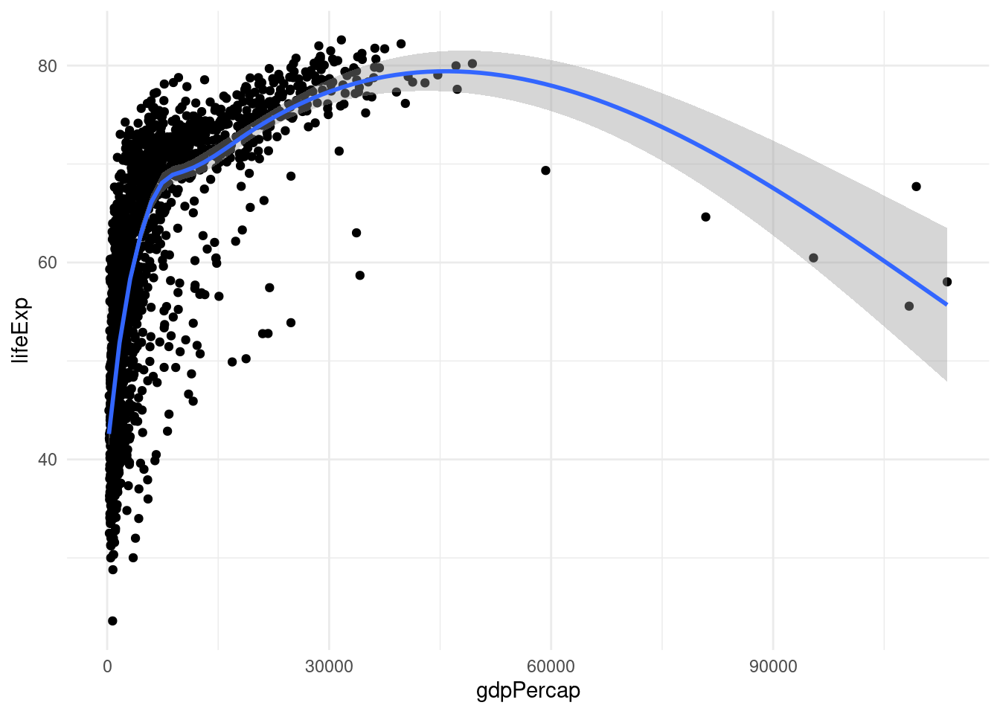
3.11.5 Univariate distribution
geom_histogram(): For the probability distribution of a continuous variable. Bins divide the entire range of values into a series of intervals (see the Wiki entry).geom_density(): Also for the probability distribution of a continuous variable. It calculates a kernel density estimate of the underlying distribution.
3.11.5.1 Histogram
## # A tibble: 437 x 28
## PID county state area poptotal popdensity popwhite popblack popamerindian
## <int> <chr> <chr> <dbl> <int> <dbl> <int> <int> <int>
## 1 561 ADAMS IL 0.052 66090 1271. 63917 1702 98
## 2 562 ALEXA… IL 0.014 10626 759 7054 3496 19
## 3 563 BOND IL 0.022 14991 681. 14477 429 35
## 4 564 BOONE IL 0.017 30806 1812. 29344 127 46
## 5 565 BROWN IL 0.018 5836 324. 5264 547 14
## 6 566 BUREAU IL 0.05 35688 714. 35157 50 65
## 7 567 CALHO… IL 0.017 5322 313. 5298 1 8
## 8 568 CARRO… IL 0.027 16805 622. 16519 111 30
## 9 569 CASS IL 0.024 13437 560. 13384 16 8
## 10 570 CHAMP… IL 0.058 173025 2983. 146506 16559 331
## # … with 427 more rows, and 19 more variables: popasian <int>, popother <int>,
## # percwhite <dbl>, percblack <dbl>, percamerindan <dbl>, percasian <dbl>,
## # percother <dbl>, popadults <int>, perchsd <dbl>, percollege <dbl>,
## # percprof <dbl>, poppovertyknown <int>, percpovertyknown <dbl>,
## # percbelowpoverty <dbl>, percchildbelowpovert <dbl>, percadultpoverty <dbl>,
## # percelderlypoverty <dbl>, inmetro <int>, category <chr>midwest %>%
ggplot(aes(x = area)) +
geom_histogram() # stat_bin argument picks up 30 bins (or "bucket") by default.## `stat_bin()` using `bins = 30`. Pick better value with `binwidth`.

ggplot(
data = subset(midwest, state %in% c("OH", "IN")),
mapping = aes(x = percollege, fill = state)
) +
geom_histogram(alpha = 0.7, bins = 20) +
scale_fill_viridis_d()

3.11.6 Advanced aes (size, color)
There’s also fill argument (mostly used in
geom_bar()). Coloraesaffects the appearance of lines and points, fill is for the filled areas of bars, polygons, and in some cases, the interior of a smoother’s standard error ribbon.The property size/color/fill represents…

ggplot(
data = gapminder,
mapping = aes(
x = gdpPercap, y = lifeExp,
size = pop,
color = continent
)
) +
geom_point() +
scale_color_viridis_d()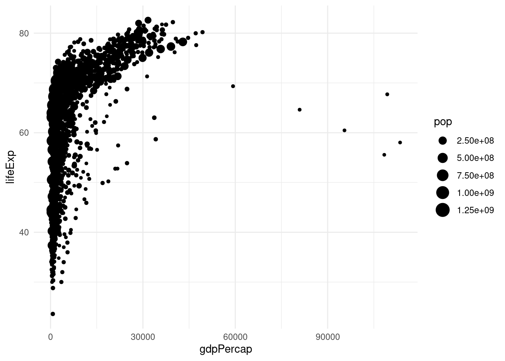
# try red instead of "red"
ggplot(
data = gapminder,
mapping = aes(
x = gdpPercap, y = lifeExp,
size = pop,
color = "red"
)
) +
geom_point() 
Aesthetics also can be mapped per Geom.
## `geom_smooth()` using method = 'gam' and formula 'y ~ s(x, bs = "cs")'
p + geom_point(alpha = 0.3) + # alpha controls transparency
geom_smooth(color = "red", se = FALSE, size = 2)## `geom_smooth()` using method = 'gam' and formula 'y ~ s(x, bs = "cs")'
p + geom_point(alpha = 0.3) + # alpha controls transparency
geom_smooth(color = "red", se = FALSE, size = 2, method = "lm")## `geom_smooth()` using formula 'y ~ x'ggplot(
data = gapminder,
mapping = aes(
x = gdpPercap, y = lifeExp,
color = continent
)
) +
geom_point(alpha = 0.3) +
geom_smooth(method = "loess", color = "red") +
labs(
x = "log GDP",
y = "Life Expectancy",
title = "A Gapminder Plot",
subtitle = "Data points are country-years",
caption = "Source: Gapminder"
)## `geom_smooth()` using formula 'y ~ x'
ggplot(
data = gapminder,
mapping = aes(
x = gdpPercap, y = lifeExp,
color = continent,
fill = continent
)
) +
geom_point(alpha = 0.3) +
geom_smooth(method = "loess", color = "red") +
labs(
x = "log GDP",
y = "Life Expectancy",
title = "A Gapminder Plot",
subtitle = "Data points are country-years",
caption = "Source: Gapminder"
) +
scale_color_viridis_d() +
scale_fill_viridis_d()## `geom_smooth()` using formula 'y ~ x'
3.11.7 Co-ordinates and scales
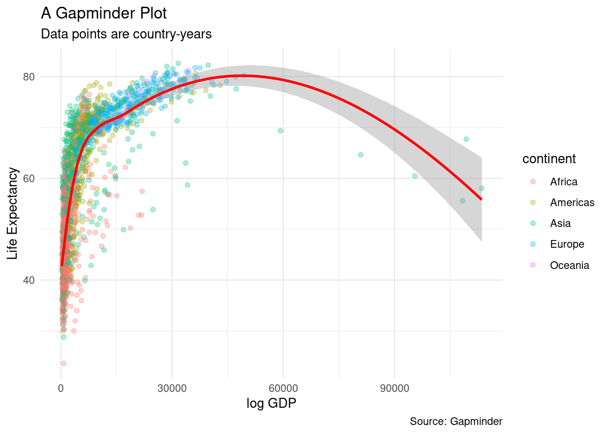
The data is heavily bunched up against the left side.
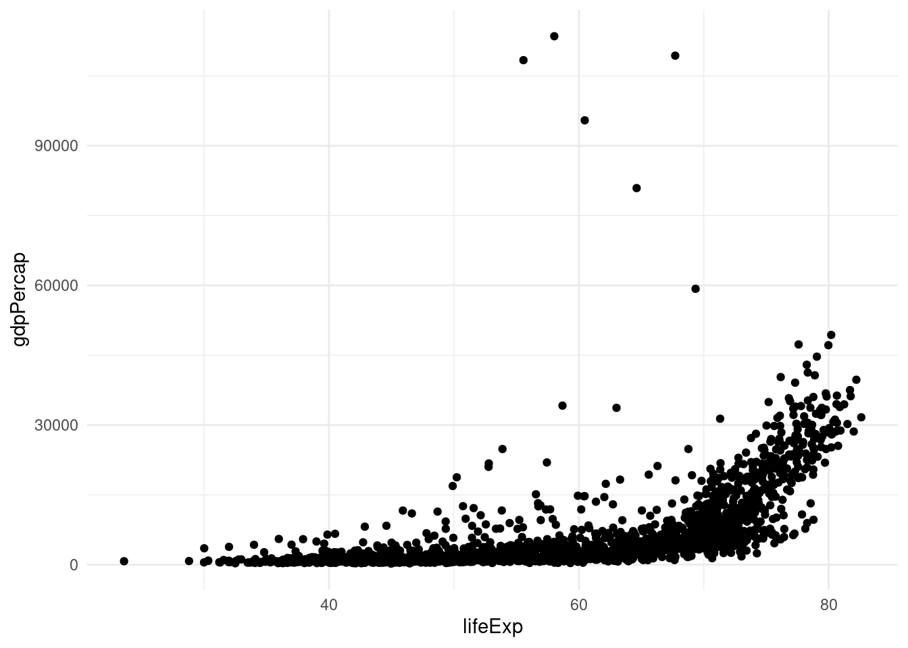
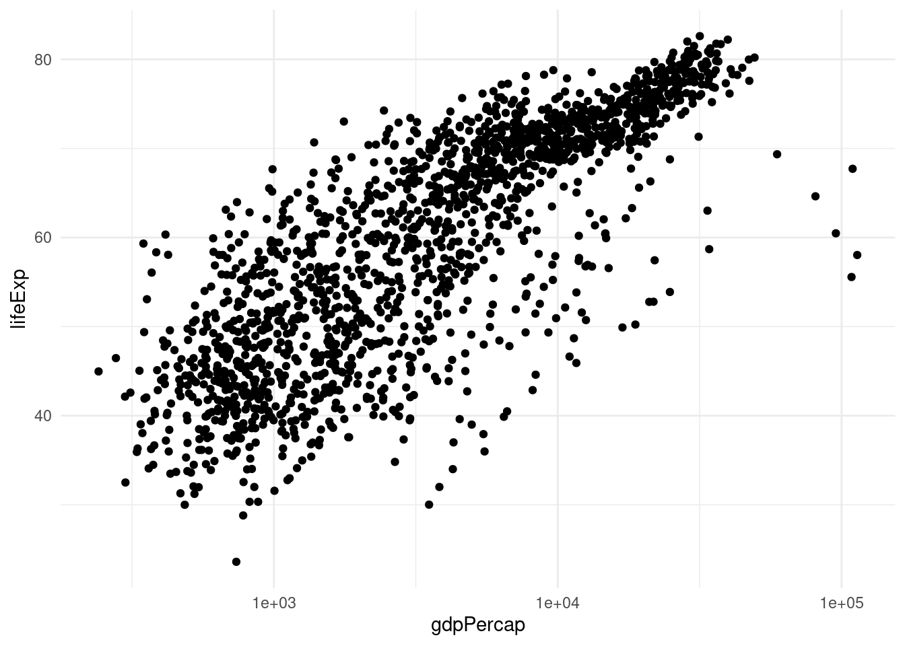
## `geom_smooth()` using formula 'y ~ x'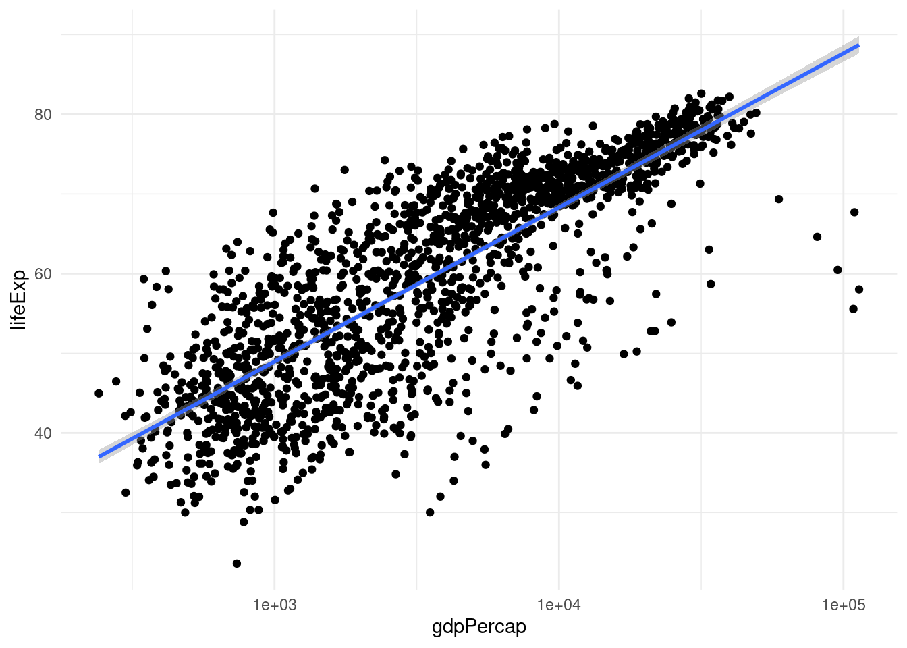
3.11.8 Labels and guides
scales package has some useful premade formatting functions. You can either load scales or just grab the function you need from the library using scales::
p + geom_point(alpha = 0.3) +
geom_smooth(method = "loess", color = "red") +
scale_x_log10(labels = scales::dollar) +
labs(
x = "log GDP",
y = "Life Expectancy",
title = "A Gapminder Plot",
subtitle = "Data points are country-years",
caption = "Source: Gapminder"
)## `geom_smooth()` using formula 'y ~ x'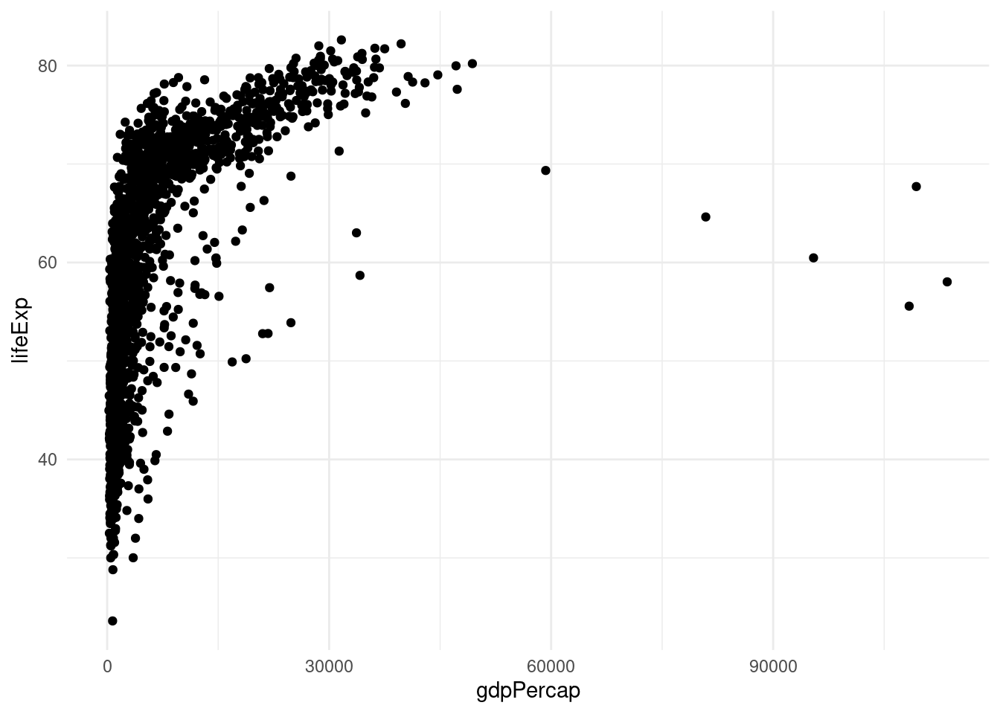
- Themes
p + geom_point(alpha = 0.3) +
geom_smooth(method = "loess", color = "red") +
scale_x_log10(labels = scales::dollar) +
labs(
x = "log GDP",
y = "Life Expectancy",
title = "A Gapminder Plot",
subtitle = "Data points are country-years",
caption = "Source: Gapminder"
) +
theme_economist()## `geom_smooth()` using formula 'y ~ x'
3.11.9 ggsave
figure_example <- p + geom_point(alpha = 0.3) +
geom_smooth(method = "gam", color = "red") +
scale_x_log10(labels = scales::dollar) +
labs(
x = "log GDP",
y = "Life Expectancy",
title = "A Gapminder Plot",
subtitle = "Data points are country-years",
caption = "Source: Gapminder"
) +
theme_economist()
ggsave(figure_example, here("outputs", "figure_example.png"))3.11.10 Many plots
Basic ideas:
- Grouping: tell
ggplot2about the structure of your data - Facetting: break up your data into pieces for a plot
3.11.10.1 Grouping
- Can you guess what’s wrong?

geom_line joins up all the lines for each particular year in the order they appear in the dataset. ggplot2 does not know the yearly observations in your data are grouped by country.
Note that you need grouping when the grouping information you need to tell is not built into the varaibles being mapped (like continent).
## # A tibble: 1,704 x 6
## country continent year lifeExp pop gdpPercap
## <fct> <fct> <int> <dbl> <int> <dbl>
## 1 Afghanistan Asia 1952 28.8 8425333 779.
## 2 Afghanistan Asia 1957 30.3 9240934 821.
## 3 Afghanistan Asia 1962 32.0 10267083 853.
## 4 Afghanistan Asia 1967 34.0 11537966 836.
## 5 Afghanistan Asia 1972 36.1 13079460 740.
## 6 Afghanistan Asia 1977 38.4 14880372 786.
## 7 Afghanistan Asia 1982 39.9 12881816 978.
## 8 Afghanistan Asia 1987 40.8 13867957 852.
## 9 Afghanistan Asia 1992 41.7 16317921 649.
## 10 Afghanistan Asia 1997 41.8 22227415 635.
## # … with 1,694 more rows3.11.10.2 Facetting
Facetting is to make small multiples.
facet_wrap: based on a single categorical variable likefacet_wrap(~single_categorical_variable). Your panels will be laid out in order and then wrapped into a grid.facet_grid: when you want to cross-classify some data by two categorical variables likefacet_grid(one_cat_variable ~ two_cat_variable).
p <- ggplot(gapminder, aes(x = year, y = gdpPercap))
p + geom_line(aes(group = country)) # group by, # The outlier is Kuwait.

p + geom_line(aes(group = country), color = "gray70") +
geom_smooth(size = 1.1, method = "loess", se = FALSE) +
scale_y_log10(labels = scales::dollar) +
facet_wrap(~continent, ncol = 5) + # for single categorical variable; for multiple categorical variables use facet_grid()
labs(
x = "Year",
y = "GDP per capita",
title = "GDP per capita on Five continents"
) +
theme(axis.text.x = element_text(angle = 90, hjust = 1))## `geom_smooth()` using formula 'y ~ x'
p + geom_line(aes(group = country), color = "gray70") +
geom_smooth(size = 1.1, method = "loess", se = FALSE) +
scale_y_log10(labels = scales::dollar) +
facet_grid(~continent) + # for single categorical variable; for multiple categorical variables use facet_grid()
labs(
x = "Year",
y = "GDP per capita",
title = "GDP per capita on Five continents"
) +
theme(axis.text.x = element_text(angle = 90, hjust = 1))## `geom_smooth()` using formula 'y ~ x'3.11.11 Transforming
- Transforming: perform some calculations on or summarize your data before producing the plot
3.11.11.1 Use pipes to summarize data
Also, we experiment bar charts here. By default, geom_bar uses stat = “bins”, which makes the height of each bar equal to the number of cases in each group. If you have a y column, then you should use stat = "identity" argument. Alternatively, you can use geom_col().
gapminder_formatted <- gapminder %>%
group_by(continent, year) %>%
summarize(
gdp_mean = mean(gdpPercap),
lifeExp_mean = mean(lifeExp)
)## `summarise()` regrouping output by 'continent' (override with `.groups` argument)ggplot(data = gapminder_formatted, aes(x = year, y = lifeExp_mean, color = continent)) +
geom_point() +
labs(
x = "Year",
y = "Life expectancy",
title = "Life expectancy on Five continents"
)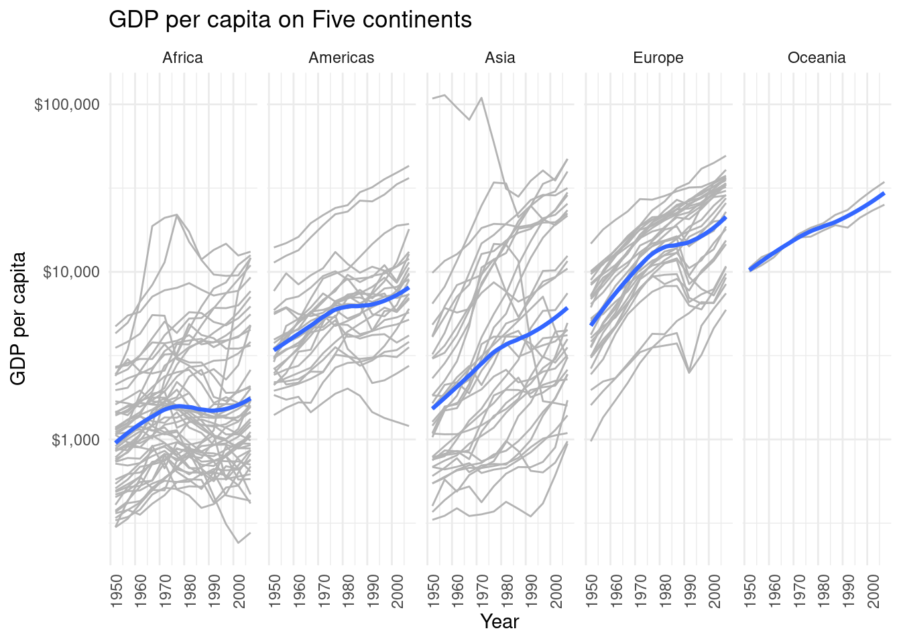
gapminder %>%
filter(continent == "Europe") %>%
group_by(country, year) %>%
summarize(
gdp_mean = mean(gdpPercap),
lifeExp_mean = mean(lifeExp)
) %>%
ggplot(aes(x = year, y = lifeExp_mean, color = country)) +
geom_point() +
labs(
x = "Year",
y = "Life expectancy",
title = "Life expectancy in Europe"
)## `summarise()` regrouping output by 'country' (override with `.groups` argument)
# geom point
gapminder %>%
filter(continent == "Europe") %>%
group_by(country, year) %>%
summarize(
gdp_mean = mean(gdpPercap),
lifeExp_mean = mean(lifeExp)
) %>%
ggplot(aes(x = year, y = lifeExp_mean)) +
geom_point() +
labs(
x = "Year",
y = "Life expectancy",
title = "Life expectancy in Europe"
) +
facet_wrap(~country)## `summarise()` regrouping output by 'country' (override with `.groups` argument)
# geom bar
gapminder %>%
filter(continent == "Europe") %>%
group_by(country, year) %>%
summarize(
gdp_mean = mean(gdpPercap),
lifeExp_mean = mean(lifeExp)
) %>%
ggplot(aes(x = year, y = lifeExp_mean)) +
geom_bar(stat = "identity") +
labs(
x = "Year",
y = "Life expectancy",
title = "Life expectancy in Europe"
) +
facet_wrap(~country)## `summarise()` regrouping output by 'country' (override with `.groups` argument)
# no facet
gapminder %>%
filter(continent == "Europe") %>%
group_by(country, year) %>%
summarize(
gdp_mean = mean(gdpPercap),
lifeExp_mean = mean(lifeExp)
) %>%
ggplot(aes(x = year, y = lifeExp_mean, fill = country)) +
geom_bar(stat = "identity") + # even if you not stack, still the plot looks messy or you can use geom_col()
labs(
x = "Year",
y = "Life expectancy",
title = "Life expectancy in Europe"
)## `summarise()` regrouping output by 'country' (override with `.groups` argument)
gapminder %>%
filter(continent == "Europe") %>%
group_by(country, year) %>%
summarize(
gdp_mean = mean(gdpPercap),
lifeExp_mean = mean(lifeExp)
) %>%
ggplot(aes(x = country, y = lifeExp_mean)) +
geom_boxplot() +
labs(
x = "Country",
y = "Life expectancy",
title = "Life expectancy in Europe"
) +
coord_flip()## `summarise()` regrouping output by 'country' (override with `.groups` argument)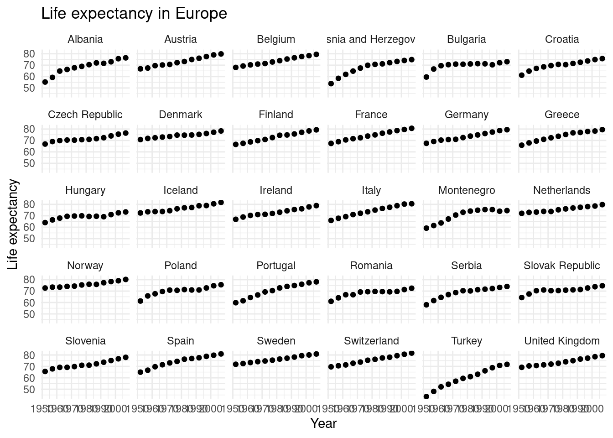
# without ordering
gapminder %>%
filter(continent == "Europe") %>%
group_by(country, year) %>%
summarize(
gdp_mean = mean(gdpPercap),
lifeExp_mean = mean(lifeExp)
) %>%
ggplot(aes(x = reorder(country, lifeExp_mean), y = lifeExp_mean)) +
geom_boxplot() +
labs(
x = "Country",
y = "Life expectancy",
title = "Life expectancy in Europe"
) +
coord_flip()## `summarise()` regrouping output by 'country' (override with `.groups` argument)
# reorder
gapminder %>%
filter(continent == "Europe") %>%
group_by(country, year) %>%
summarize(
gdp_mean = mean(gdpPercap),
lifeExp_mean = mean(lifeExp)
) %>%
ggplot(aes(x = reorder(country, -lifeExp_mean), y = lifeExp_mean)) +
geom_boxplot() +
labs(
x = "Country",
y = "Life expectancy",
title = "Life expectancy in Europe"
) +
coord_flip()## `summarise()` regrouping output by 'country' (override with `.groups` argument)
3.11.11.2 Plotting text
gapminder %>%
filter(continent == "Asia" | continent == "Americas") %>%
group_by(continent, country) %>%
summarize(
gdp_mean = mean(gdpPercap),
lifeExp_mean = mean(lifeExp)
) %>%
ggplot(aes(x = gdp_mean, y = lifeExp_mean)) +
geom_point() +
geom_text(aes(label = country)) +
scale_x_log10() +
facet_grid(~continent)## `summarise()` regrouping output by 'continent' (override with `.groups` argument)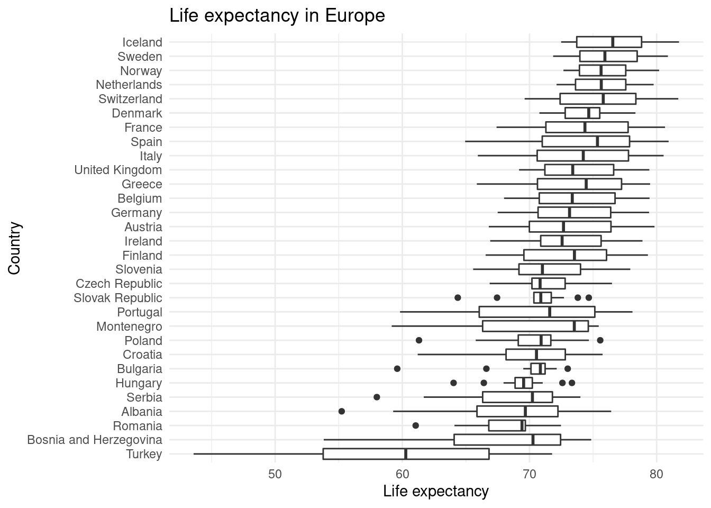
# with label
gapminder %>%
filter(continent == "Asia" | continent == "Americas") %>%
group_by(continent, country) %>%
summarize(
gdp_mean = mean(gdpPercap),
lifeExp_mean = mean(lifeExp)
) %>%
ggplot(aes(x = gdp_mean, y = lifeExp_mean)) +
geom_point() +
geom_label(aes(label = country)) +
scale_x_log10() +
facet_grid(~continent)## `summarise()` regrouping output by 'continent' (override with `.groups` argument)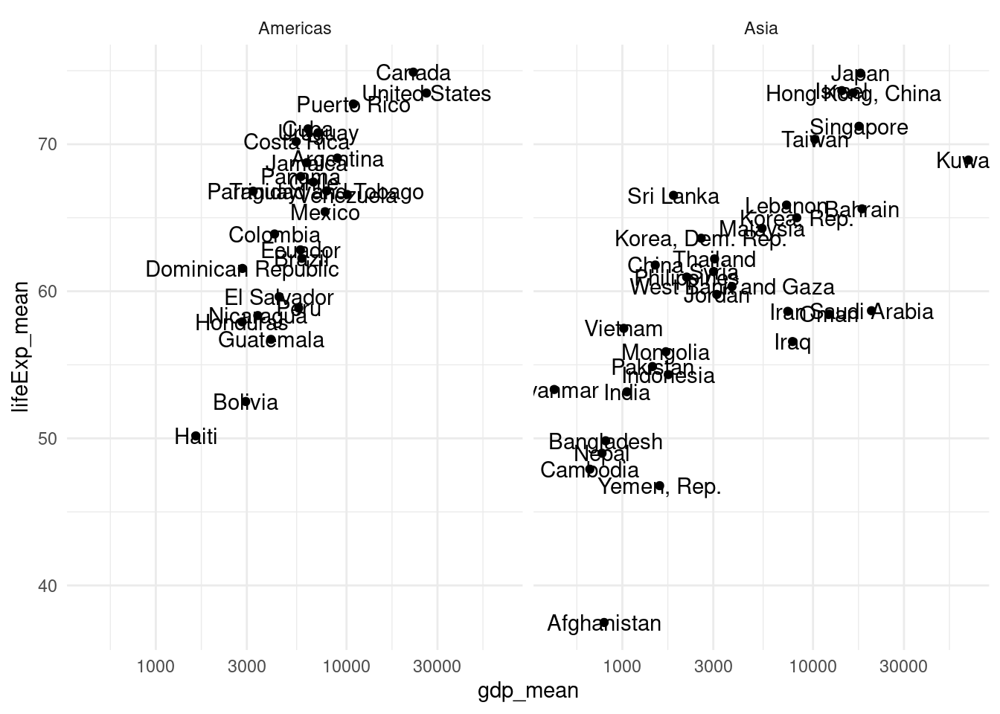
# no overlaps
gapminder %>%
filter(continent == "Asia" | continent == "Americas") %>%
group_by(continent, country) %>%
summarize(
gdp_mean = mean(gdpPercap),
lifeExp_mean = mean(lifeExp)
) %>%
ggplot(aes(x = gdp_mean, y = lifeExp_mean)) +
geom_point() +
geom_text_repel(aes(label = country)) + # there's also geom_label_repel
scale_x_log10() +
facet_grid(~continent)## `summarise()` regrouping output by 'continent' (override with `.groups` argument)
3.11.12 Ploting models
In plotting models, we extensively use David Robinson’s broom package in R. The idea is to transform model outputs (i.e., predictions and estimations) into tidy objects so that we can easily combine, separate, and visualize these elements.
3.11.12.1 Plotting several fits at the same time
model_colors <- RColorBrewer::brewer.pal(3, "Set1") # select three qualitatively different colors from a larger palette.
gapminder %>%
ggplot(aes(x = log(gdpPercap), y = lifeExp)) +
geom_point(alpha = 0.2) +
geom_smooth(method = "lm", aes(color = "OLS", fill = "OLS")) +
geom_smooth(
method = "lm", formula = y ~ splines::bs(x, df = 3),
aes(color = "Cubic Spline", fill = "Cubic Spline")
) +
geom_smooth(method = "loess", aes(color = "LOESS", fill = "LOESS")) +
theme(legend.position = "top") +
scale_color_manual(name = "Models", values = model_colors) +
scale_fill_manual(name = "Models", values = model_colors)## `geom_smooth()` using formula 'y ~ x'
## `geom_smooth()` using formula 'y ~ x'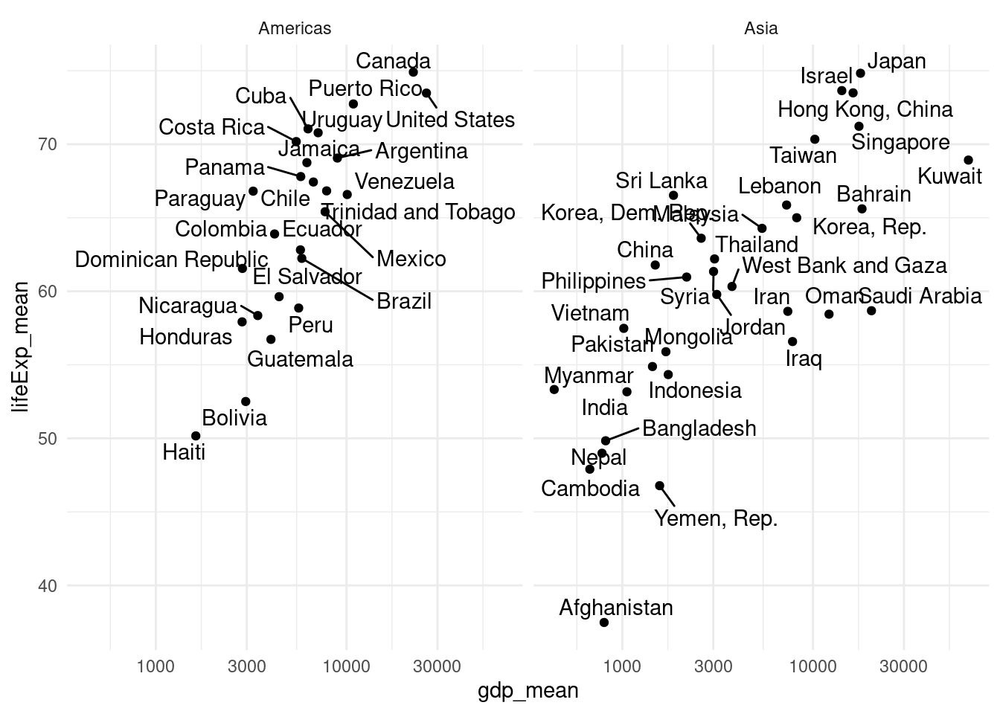
3.11.12.2 Extracting model outcomes
tidy() is a method in the broom package. It “constructs a dataframe that summarizes the model’s statistical findings”. As the description states, tidy is a function that can be used for various models. For instance, a tidy can extract following information from a regression model.
Term: a term being estimatedp.valuestatistic: a test statistic used to compute p-valueestimateconf.low: the low end of a confidence intervalconf.high: the high end of a confidence intervaldf: degrees of freedom
Challege
Try glance(out), what did you get from these commands? If you’re curious, you can try ?glance.
The followings are to show your degree of confidence.
3.11.12.2.1 Coeffficients
# estimates
out_comp <- tidy(out)
p <- out_comp %>%
ggplot(aes(x = term, y = estimate))
p + geom_point() +
coord_flip() +
theme_bw()
3.11.12.2.2 Confidence intervals
# plus confidence intervals
out_conf <- tidy(out, conf.int = TRUE)
# plotting coefficients using ggplot2 (pointrange)
out_conf %>%
ggplot(aes(x = reorder(term, estimate), y = estimate, ymin = conf.low, ymax = conf.high)) +
geom_pointrange() +
coord_flip() +
labs(x = "", y = "OLS Estimate") +
theme_bw()
# another way to do it (errorbar)
out_conf %>%
ggplot(aes(x = estimate, y = reorder(term, estimate))) +
geom_point() +
geom_errorbarh(aes(xmin = conf.low, xmax = conf.high)) +
labs(y = "", x = "OLS Estimate") +
theme_bw()
You can calculate marginal effects using margins package. For the sake of time, I’m not covering that here.
4 Automating repeated things
Anything that can be automated should be automated. Do as little as possible by hand. Do as much as possible with functions. - Hadley Wickham
4.1 Flow control
Almost all the conditional operators used in Python also work in R. The basic loop set up is also very similar, with some small syntax adjustments. Note that if() is a function whose arguments must be specified inside parentheses. else, however, is a reserved operator that takes no arguments. Note that there is no elif option — one simply writes else if(). Whereas operations to be executed after conditional evaluations in Python come after a :, R operations must only be enclosed in curly brackets: {}. Furthermore, there is no requirement for indentation. The only thing to keep in mind is that each new operation must be on a separate line.
## [1] "x is negative"## [1] "x is positive"x <- 0
if(x < 0){
print("x is negative")
} else if(x == 0){
print("x is zero")
} else{
print("x is positive")
}## [1] "x is zero"R also does some class coercion that makes Boolean evaluations harder to break than in Python. But be careful — R has a set of special coercion used for fast logical evaluation and subsetting. Specifically, TRUE is considered equal to 1, while FALSE is equal to 0. The Boolean logicals can also be specified as a full word in all caps, or simply as T or F.
## [1] TRUE## [1] TRUE## [1] FALSE## [1] TRUE## [1] TRUE## [1] TRUE## [1] FALSE## [1] FALSE## [1] FALSE## [1] TRUE## [1] TRUE## [1] TRUE4.2 Functions
While functions are defined in Python using the def reserved operator, R sees functions as just another type of named object. Thus, they require explicit assignment to an object. This is done using the function function(), which creates a function taking the arguments specified in parentheses.
## [1] 3## [1] -7With respect to returning function output, most of the same rules apply as with Python. Be sure to remember that return() will only process a single object, so multiple items must usually be returned as a list. Note that your ordering of the functions matters, too.
## [1] "something"## [1] "Why did I print?"## [1] "something"dumbfun <- function(x,y){
thing1 <- x
thing2 <- y
return(list(thing1, thing2))
}
dumbfun(x = "some text", y = "some data")## [[1]]
## [1] "some text"
##
## [[2]]
## [1] "some data"## [[1]]
## [1] 5 10 15
##
## [[2]]
## [1] "some data"R functions also allow you to set default argument values:
## [1] 3## [1] -7With respect to specifying arguments, one can either use argument position specifications (i.e., the order) or argument name specifications. The latter is strongly preferred, as it is very easy to accidentally specify incorrect argument values.
send <- function(message, recipient, cc=NULL, bcc=NULL){
print(paste(message, recipient, sep = ", "))
print(paste("CC:", cc, sep = " "))
print(paste("BCC:", bcc, sep = " "))
}
send(message = "Hello", recipient = "World", cc = "Sun", bcc = "Jane")## [1] "Hello, World"
## [1] "CC: Sun"
## [1] "BCC: Jane"## [1] "Hello, World"
## [1] "CC: Sun"
## [1] "BCC: Jane"## [1] "Hello, Sun"
## [1] "CC: Jane"
## [1] "BCC: World"## [1] "Hello, World"
## [1] "CC: Sun"
## [1] "BCC: Jane" "BCC: Rochelle"Also, note that functions don’t have what CS people called side-effects. Functions only define local variables = They don’t change objects stored in the global environment. (Consider the difference between <- and = for assignments.) That’s why you can use functions for reusable tasks since it does not interrupt other important things in your system.
See the following example from Wilkinson.
## [1] 4## [1] 44.3 for loop
Loops in R also work basically the same way as in Python, with just a few adjustments. First, recall that index positions in R start at 1. Second, while() and for() are functions rather than reserved operators, meaning they must take arguments in parentheses. Third, just like else, the in operator is reserved and takes no arguments in parentheses. Fourth, the conditional execution must appear between curly brackets. Finally, indentation is meaningless, but each new operation must appear on a new line.
while(): when we have no idea how many times loop needs to be executed.for(): when we know how many times loop needs to be executed.
fruits <- c("apples", "oranges", "pears", "bananas")
# a while loop
i <- 1
while(i <= length(fruits)){
print(fruits[i])
i <- i + 1
}## [1] "apples"
## [1] "oranges"
## [1] "pears"
## [1] "bananas"## [1] "apples"
## [1] "oranges"
## [1] "pears"
## [1] "bananas"4.4 apply family
While and for loops in R can be very slow. For this reason, R has a number of built-in iteration methods to speed up execution times. In many cases, packages will have “behind-the-scenes” ways to avoid for loops, but what if you need to write your own function?
A common method of getting around for loops is the apply family of functions. These take a data structure and a function, and applies a function over all the elements in the object.
fruit <- c("apple", "orange", "pear", "banana")
# make function that takes in only one element
make.plural <- function(x){
plural <- paste(x, 's', sep = '') # sep is for collapse, so collpase ''
return(plural)
}
make.plural('apple')## [1] "apples"## [[1]]
## [1] "apples"
##
## [[2]]
## [1] "oranges"
##
## [[3]]
## [1] "pears"
##
## [[4]]
## [1] "bananas"## apple orange pear banana
## "apples" "oranges" "pears" "bananas"## [[1]]
## [1] "apples"
##
## [[2]]
## [1] "oranges"
##
## [[3]]
## [1] "pears"
##
## [[4]]
## [1] "bananas"## [1] "1" "2" "3" "4" "5" "6" "7" "8" "9" "10" "11" "12"
## [13] "13" "14" "15" "16" "17" "18" "19" "20" "21" "22" "23" "24"
## [25] "25" "26" "27" "28" "29" "30" "31" "32" "33" "34" "35" "36"
## [37] "37" "38" "39" "40" "41" "42" "43" "44" "45" "46" "47" "48"
## [49] "49" "50" "51" "52" "53" "54" "55" "56" "57" "58" "59" "60"
## [61] "61" "62" "63" "64" "65" "66" "67" "68" "69" "70" "71" "72"
## [73] "73" "74" "75" "76" "77" "78" "79" "80" "81" "82" "83" "84"
## [85] "85" "86" "87" "88" "89" "90" "91" "92" "93" "94" "95" "96"
## [97] "97" "98" "99" "100"## list()## [[1]]
## [1] "1"
##
## [[2]]
## [1] "2"
##
## [[3]]
## [1] "3"
##
## [[4]]
## [1] "4"
##
## [[5]]
## [1] "5"
##
## [[6]]
## [1] "6"
##
## [[7]]
## [1] "7"
##
## [[8]]
## [1] "8"
##
## [[9]]
## [1] "9"
##
## [[10]]
## [1] "10"
##
## [[11]]
## [1] "11"
##
## [[12]]
## [1] "12"
##
## [[13]]
## [1] "13"
##
## [[14]]
## [1] "14"
##
## [[15]]
## [1] "15"
##
## [[16]]
## [1] "16"
##
## [[17]]
## [1] "17"
##
## [[18]]
## [1] "18"
##
## [[19]]
## [1] "19"
##
## [[20]]
## [1] "20"
##
## [[21]]
## [1] "21"
##
## [[22]]
## [1] "22"
##
## [[23]]
## [1] "23"
##
## [[24]]
## [1] "24"
##
## [[25]]
## [1] "25"
##
## [[26]]
## [1] "26"
##
## [[27]]
## [1] "27"
##
## [[28]]
## [1] "28"
##
## [[29]]
## [1] "29"
##
## [[30]]
## [1] "30"
##
## [[31]]
## [1] "31"
##
## [[32]]
## [1] "32"
##
## [[33]]
## [1] "33"
##
## [[34]]
## [1] "34"
##
## [[35]]
## [1] "35"
##
## [[36]]
## [1] "36"
##
## [[37]]
## [1] "37"
##
## [[38]]
## [1] "38"
##
## [[39]]
## [1] "39"
##
## [[40]]
## [1] "40"
##
## [[41]]
## [1] "41"
##
## [[42]]
## [1] "42"
##
## [[43]]
## [1] "43"
##
## [[44]]
## [1] "44"
##
## [[45]]
## [1] "45"
##
## [[46]]
## [1] "46"
##
## [[47]]
## [1] "47"
##
## [[48]]
## [1] "48"
##
## [[49]]
## [1] "49"
##
## [[50]]
## [1] "50"
##
## [[51]]
## [1] "51"
##
## [[52]]
## [1] "52"
##
## [[53]]
## [1] "53"
##
## [[54]]
## [1] "54"
##
## [[55]]
## [1] "55"
##
## [[56]]
## [1] "56"
##
## [[57]]
## [1] "57"
##
## [[58]]
## [1] "58"
##
## [[59]]
## [1] "59"
##
## [[60]]
## [1] "60"
##
## [[61]]
## [1] "61"
##
## [[62]]
## [1] "62"
##
## [[63]]
## [1] "63"
##
## [[64]]
## [1] "64"
##
## [[65]]
## [1] "65"
##
## [[66]]
## [1] "66"
##
## [[67]]
## [1] "67"
##
## [[68]]
## [1] "68"
##
## [[69]]
## [1] "69"
##
## [[70]]
## [1] "70"
##
## [[71]]
## [1] "71"
##
## [[72]]
## [1] "72"
##
## [[73]]
## [1] "73"
##
## [[74]]
## [1] "74"
##
## [[75]]
## [1] "75"
##
## [[76]]
## [1] "76"
##
## [[77]]
## [1] "77"
##
## [[78]]
## [1] "78"
##
## [[79]]
## [1] "79"
##
## [[80]]
## [1] "80"
##
## [[81]]
## [1] "81"
##
## [[82]]
## [1] "82"
##
## [[83]]
## [1] "83"
##
## [[84]]
## [1] "84"
##
## [[85]]
## [1] "85"
##
## [[86]]
## [1] "86"
##
## [[87]]
## [1] "87"
##
## [[88]]
## [1] "88"
##
## [[89]]
## [1] "89"
##
## [[90]]
## [1] "90"
##
## [[91]]
## [1] "91"
##
## [[92]]
## [1] "92"
##
## [[93]]
## [1] "93"
##
## [[94]]
## [1] "94"
##
## [[95]]
## [1] "95"
##
## [[96]]
## [1] "96"
##
## [[97]]
## [1] "97"
##
## [[98]]
## [1] "98"
##
## [[99]]
## [1] "99"
##
## [[100]]
## [1] "100"## list()The multivariate version of sapply is mapply. Use this if you have a function that takes in 2 or more arguments.
4.5 purrr
- Setup
## Loading required package: pacmanpacman::p_load(
tidyverse, # tidyverse pkgs including purrr
tictoc, # performance test
broom, # tidy modeling
glue, # paste string and objects
furrr, # parallel processing
rvest, # web scraping
devtools, # dev tools
usethis, # workflow
roxygen2, # documentation
testthat) # testing 4.5.1 Why map?
4.5.1.1 Objectives
- How to use
purrrto automate workflow in a cleaner, faster, and more extendable way
4.5.1.2 Copy-and-paste programming
Copy-and-paste programming, sometimes referred to as just pasting, is the production of highly repetitive computer programming code, as produced by copy and paste operations. It is primarily a pejorative term; those who use the term are often implying a lack of programming competence. It may also be the result of technology limitations (e.g., an insufficiently expressive development environment) as subroutines or libraries would normally be used instead. However, there are occasions when copy-and-paste programming is considered acceptable or necessary, such as for boilerplate, loop unrolling (when not supported automatically by the compiler), or certain programming idioms, and it is supported by some source code editors in the form of snippets. - Wikipedia
The following exercise was inspired by Wickham’s example.
Let’s imagine
dfis a survey dataset.a, b, c, d= Survey questions-99: non-responsesYour goal: replace
-99withNA
# Data
set.seed(1234) # for reproducibility
df <- tibble(
"a" = sample(c(-99, 1:3), size = 5, replace = TRUE),
"b" = sample(c(-99, 1:3), size = 5, replace = TRUE),
"c" = sample(c(-99, 1:3), size = 5, replace = TRUE),
"d" = sample(c(-99, 1:3), size = 5, replace = TRUE)
)# Copy and paste
df$a[df$a == -99] <- NA
df$b[df$b == -99] <- NA
df$c[df$c == -99] <- NA
df$d[df$d == -99] <- NA
df## # A tibble: 5 x 4
## a b c d
## <dbl> <dbl> <dbl> <dbl>
## 1 3 3 3 1
## 2 3 2 3 1
## 3 1 NA 1 2
## 4 1 NA 2 1
## 5 NA 1 1 3- Challenge. Explain why this solution is not very efficient (Hint: If
df$a[df$a == -99] <- NAhas an error, how are you going to fix it? A solution is not scalable if it’s not automatable.
4.5.1.3 Using a function
Let’s recall what’s function in R:
input + computation + outputIf you write a function, you gain efficiency because you don’t need to copy and paste the computation part.
` function(input){
computation
return(output) } `
# Function
fix_missing <- function(x) {
x[x == -99] <- NA
x
}
# Apply function to each column (vector)
df$a <- fix_missing(df$a)
df$b <- fix_missing(df$b)
df$c <- fix_missing(df$c)
df$d <- fix_missing(df$d)
df## # A tibble: 5 x 4
## a b c d
## <dbl> <dbl> <dbl> <dbl>
## 1 3 3 3 1
## 2 3 2 3 1
## 3 1 NA 1 2
## 4 1 NA 2 1
## 5 NA 1 1 3Challenge Why using function is more efficient than 100% copying and pasting? Can you think about a way we can automate the process?
Many options for automation in R:
for loop,applyfamily, etc.Here’s a tidy solution comes from
purrrpackage.The power and joy of one-liner.
## # A tibble: 5 x 4
## a b c d
## <dbl> <dbl> <dbl> <dbl>
## 1 3 3 3 1
## 2 3 2 3 1
## 3 1 NA 1 2
## 4 1 NA 2 1
## 5 NA 1 1 3map() is a higher-order function that applies a given function to each element of a list/vector.

This is how map() works. It’s easier to understand with a picture.
- Input: Takes a vector/list.
- Computation: Calls the function once for each element of the vector
- Output: Returns in a list or whatever data format you prefer (e.g., `_df helper: dataframe`)- Challenge If you run the code below, what’s going to be the data type of the output?
## $a
## [1] 3 3 1 1 NA
##
## $b
## [1] 3 2 NA NA 1
##
## $c
## [1] 3 3 1 2 1
##
## $d
## [1] 1 1 2 1 3- Why
map()is a good alternative tofor loop.
The Joy of Functional Programming (for Data Science) - Hadley Wickham
# Built-in data
data("airquality")
tic()
# Placeholder
out1 <- vector("double", ncol(airquality))
# Sequence variable
for (i in seq_along(airquality)) { #
# Assign a computation result to each element
out1[[i]] <- mean(airquality[[i]], na.rm = TRUE)
}
toc()## 0.005 sec elapsed## 0.002 sec elapsedIn short,
map()is more readable, faster, and easily extendable with other data science tasks (e.g., wrangling, modeling, and visualization) using%>%.Final point: Why not base R
applyfamily?Short answer:
purrr::map()is simpler to write. For instance,
map_dbl(x, mean, na.rm = TRUE) = vapply(x, mean, na.rm = TRUE, FUN.VALUE = double(1))
4.5.1.4 Application (many models)
- One popular application of
map()is to run regression models (or whatever model you want to run) on list-columns. No more copying and pasting for running many regression models on subgroups!
# Have you ever tried this?
lm_A <- lm(y ~ x, subset(data, subgroup == "group_A"))
lm_B <- lm(y ~ x, subset(data, subgroup == "group_B"))
lm_C <- lm(y ~ x, subset(data, subgroup == "group_C"))
lm_D <- lm(y ~ x, subset(data, subgroup == "group_D"))
lm_E <- lm(y ~ x, subset(data, subgroup == "group_E"))- For more information on this technique, read the Many Models subchapter of the R for Data Science.
# Function
lm_model <- function(df) {
lm(Temp ~ Ozone, data = df)
}
# Map
models <- airquality %>%
group_by(Month) %>%
nest() %>% # Create list-columns
mutate(ols = map(data, lm_model)) # Map
models$ols[1]## [[1]]
##
## Call:
## lm(formula = Temp ~ Ozone, data = df)
##
## Coefficients:
## (Intercept) Ozone
## 62.8842 0.1629# Add tidying
tidy_lm_model <- purrr::compose( # compose multiple functions
broom::tidy, # convert lm objects into tidy tibbles
lm_model
)
tidied_models <- airquality %>%
group_by(Month) %>%
nest() %>% # Create list-columns
mutate(ols = map(data, tidy_lm_model))
tidied_models$ols[1]## [[1]]
## # A tibble: 2 x 5
## term estimate std.error statistic p.value
## <chr> <dbl> <dbl> <dbl> <dbl>
## 1 (Intercept) 62.9 1.61 39.2 2.88e-23
## 2 Ozone 0.163 0.0500 3.26 3.31e- 34.6 Automote 2 or 2+ tasks
4.6.1 Objectives
- Learning how to use
map2()andpmap()to avoid writing nested loops.
4.6.2 Problem
- Problem: How can you create something like below?
[1] “University = Berkeley | Department = waterbenders”
[1] “University = Berkeley | Department = earthbenders”
[1] “University = Berkeley | Department = firebenders”
[1] “University = Berkeley | Department = airbenders”
[1] “University = Stanford | Department = waterbenders”
[1] “University = Stanford | Department = earthbenders”
[1] “University = Stanford | Department = firebenders”
[1] “University = Stanford | Department = airbenders”
- The most manual way: You can copy and paste eight times.
## [1] "University = Berkeley | Department = CS"4.6.3 For loop
A slightly more efficient way: using a for loop.
Think about which part of the statement is constant and which part varies ( = parameters).
Do we need a placeholder? No. We don’t need a placeholder because we don’t store the result of iterations.
Challenge: How many parameters do you need to solve the problem below?
# Outer loop
for (univ in c("Berkeley", "Stanford")) {
# Inner loop
for (dept in c("waterbenders", "earthbenders", "firebenders", "airbenders")) {
print(paste("University = ", univ, "|", "Department = ", dept))
}
}## [1] "University = Berkeley | Department = waterbenders"
## [1] "University = Berkeley | Department = earthbenders"
## [1] "University = Berkeley | Department = firebenders"
## [1] "University = Berkeley | Department = airbenders"
## [1] "University = Stanford | Department = waterbenders"
## [1] "University = Stanford | Department = earthbenders"
## [1] "University = Stanford | Department = firebenders"
## [1] "University = Stanford | Department = airbenders"- This is not bad, but …
narguments ->n-nested for loops. As a scale of your problem grows, your code gets really complicated.
To become significantly more reliable, code must become more transparent. In particular, nested conditions and loops must be viewed with great suspicion. Complicated control flows confuse programmers. Messy code often hides bugs. — Bjarne Stroustrup
4.6.4 map2 & pmap
Step 1: Define inputs and a function.
Challenge Why are we using
rep()to create input vectors? For instance, foruniv_listwhy not just usec("Berkeley", "Stanford")?
# Inputs (remember the length of these inputs should be identical)
univ_list <- rep(c("Berkeley", "Stanford"), 4)
dept_list <- rep(c("waterbenders", "earthbenders", "firebenders", "airbenders"), 2)
# Function
print_lists <- function(univ, dept) {
print(paste(
"University = ", univ, "|",
"Department = ", dept
))
}
# Test
print_lists(univ_list[1], dept_list[1])## [1] "University = Berkeley | Department = waterbenders"- Step2: Using
map2()orpmap()

## [1] "University = Berkeley | Department = waterbenders"
## [1] "University = Stanford | Department = earthbenders"
## [1] "University = Berkeley | Department = firebenders"
## [1] "University = Stanford | Department = airbenders"
## [1] "University = Berkeley | Department = waterbenders"
## [1] "University = Stanford | Department = earthbenders"
## [1] "University = Berkeley | Department = firebenders"
## [1] "University = Stanford | Department = airbenders"
## [1] "University = Berkeley | Department = waterbenders"
## [1] "University = Stanford | Department = earthbenders"
## [1] "University = Berkeley | Department = firebenders"
## [1] "University = Stanford | Department = airbenders"
## [1] "University = Berkeley | Department = waterbenders"
## [1] "University = Stanford | Department = earthbenders"
## [1] "University = Berkeley | Department = firebenders"
## [1] "University = Stanford | Department = airbenders"- Challenge Have you noticed that we used a slightly different input for
pmap()compared tomap()ormap2()? What is the difference?
4.7 Automate plotting
4.7.1 Objective
- Learning how to use
map()andglue()to automate creating multiple plots
4.7.2 Problem
- Making the following data visualization process more efficient.
data("airquality")
airquality %>%
ggplot(aes(x = Ozone, y = Solar.R)) +
geom_point() +
labs(
title = "Relationship between Ozone and Solar.R",
y = "Solar.R"
)## Warning: Removed 42 rows containing missing values (geom_point).
airquality %>%
ggplot(aes(x = Ozone, y = Wind)) +
geom_point() +
labs(
title = "Relationship between Ozone and Wind",
y = "Wind"
)## Warning: Removed 37 rows containing missing values (geom_point).
airquality %>%
ggplot(aes(x = Ozone, y = Temp)) +
geom_point() +
labs(
title = "Relationship between Ozone and Temp",
y = "Temp"
)## Warning: Removed 37 rows containing missing values (geom_point).
4.7.3 Solution
Learn how
glue()works.glue()combines strings and objects and it works simpler and faster thanpaste()orsprintif().
names <- c("Jae", "Aniket", "Avery")
fields <- c("Political Science", "Law", "Public Health")
glue("{names} studies {fields}.")## Jae studies Political Science.
## Aniket studies Law.
## Avery studies Public Health.So, our next step is to combine
glue()andmap().Let’s first think about writing a function that includes
glue().Challenge How can you create the character vector of column names?
Challenge How can you make
ggplot2()take strings as x and y variable names? (Hint: Type?aes_string())
airquality %>%
ggplot(aes_string(x = names(airquality)[1], y = names(airquality)[2])) +
geom_point() +
labs(
title = glue("Relationship between Ozone and {names(airquality)[2]}"),
y = glue("{names(airquality)[2]}")
)## Warning: Removed 42 rows containing missing values (geom_point).
The next step is to write an automatic plotting function.
- Note that in the function argument
i(abstract) replaced 2 (specific): abstraction
- Note that in the function argument
create_point_plot <- function(i) {
airquality %>%
ggplot(aes_string(x = names(airquality)[1], y = names(airquality)[i])) +
geom_point() +
labs(
title = glue("Relationship between Ozone and {names(airquality)[i]}"),
y = glue("{names(airquality)[i]}")
)
}- The final step is to put the function in
map().
## [[1]]## Warning: Removed 42 rows containing missing values (geom_point).
##
## [[2]]## Warning: Removed 37 rows containing missing values (geom_point).
##
## [[3]]## Warning: Removed 37 rows containing missing values (geom_point).
##
## [[4]]## Warning: Removed 37 rows containing missing values (geom_point).
##
## [[5]]## Warning: Removed 37 rows containing missing values (geom_point).
4.8 Automate joining
4.8.1 Objective
- Learning how to use
reduce()to automate joining multiple dataframes
4.8.2 Problem
How can you make joining multiple dataframes more efficient?
Note that we will use
dplyr::left_join() = merge(x, y, all.x = TRUE).
df1 <- tibble(
x = sample(1:10, size = 3, replace = TRUE),
y = sample(1:10, size = 3, replace = TRUE),
z = sample(1:10, size = 3, replace = TRUE)
)
df2 <- tibble(
x = sample(1:10, size = 3, replace = TRUE),
y = sample(1:10, size = 3, replace = TRUE),
z = sample(1:10, size = 3, replace = TRUE)
)
df3 <- tibble(
x = sample(1:10, size = 3, replace = TRUE),
y = sample(1:10, size = 3, replace = TRUE),
z = sample(1:10, size = 3, replace = TRUE)
)4.8.3 Copy and paste
## Joining, by = c("x", "y", "z")## Joining, by = c("x", "y", "z")## # A tibble: 3 x 3
## x y z
## <int> <int> <int>
## 1 8 5 8
## 2 4 8 3
## 3 4 4 4- Challenge Why the above solution is not efficient?
4.8.4 reduce

How reduce() works.
- Input: Takes a vector of length n
- Computation: Calls a function with a pair of values at a time
- Output: Returns a vector of length 1## Joining, by = c("x", "y", "z")
## Joining, by = c("x", "y", "z")## # A tibble: 3 x 3
## x y z
## <int> <int> <int>
## 1 8 5 8
## 2 4 8 3
## 3 4 4 44.9 Make automation slower or faster
4.9.1 Objectives
- Learning how to use
slowly()andfuture_to make automation process either slower or faster
4.9.2 How to make automation slower
- Scraping 50 pages from a website and you don’t want to overload the server. How can you do that?
4.9.3 For loop
4.9.4 Map
walk()works same asmap()but doesn’t store its output.If you’re web scraping, one problem with this approach is it’s too fast by human standards.
If you want to make the function run slowly …
slowly() takes a function and modifies it to wait a given amount of time between each call. -
purrrpackage vignette - If a function is a verb, then a helper function is an adverb (modifying the behavior of the verb).
4.9.5 How to make automation Faster
In a different situation, you want to make your function run faster. This is a common situation when you collect and analyze data at large-scale. You can solve this problem using parallel processing. For more on the parallel processing in R, read this review.
Parallel processing setup
Step1: Determine the number of max workers (
availableCores())Step2: Determine the parallel processing mode (
plan())
4.10 Make error handling easier
4.10.1 Learning objective
Learning how to use
safely()andpossibly()to make error handling easier ### ProblemChallenge
Explain why we can’t run
map(url_lists, read_html)
url_lists <- c(
"https://en.wikipedia.org/wiki/University_of_California,_Berkeley",
"https://en.wikipedia.org/wiki/Stanford_University",
"https://en.wikipedia.org/wiki/Carnegie_Mellon_University",
"https://DLAB"
)- This is a very simple problem so it’s easy to tell where the problem is. How can you make your error more informative?
4.10.2 Solution
4.10.2.1 Try-catch
There are three kinds of messages you will run into, if your code has an error based on the following functions.
stop(): errors; Functions must stop.warning(): warnings; Functions may still work. Nonetheless, something is possibly messed up.message(): messages; Some actions happened.
The basic logic of
try-catch, R’s basic error handling function, works like the following.
tryCatch(
{
map(url_lists, read_html)
},
warning = function(w) {
"Warning"
},
error = function(e) {
"Error"
},
finally = {
"Message"
}
)## [1] "Error"- Here’s
purrrversion of thetry-catchmechanism (evaluates code and assigns exception handlers).
4.10.2.2 safely
Outputs
- result: result or
NULL - error:
NULLorerror
## [[1]]
## [[1]]$result
## NULL
##
## [[1]]$error
## <simpleError in open.connection(x, "rb"): Timeout was reached: [en.wikipedia.org] Connection timed out after 10001 milliseconds>
##
##
## [[2]]
## [[2]]$result
## NULL
##
## [[2]]$error
## <simpleError in open.connection(x, "rb"): Timeout was reached: [en.wikipedia.org] Connection timed out after 10002 milliseconds>
##
##
## [[3]]
## [[3]]$result
## NULL
##
## [[3]]$error
## <simpleError in open.connection(x, "rb"): Timeout was reached: [en.wikipedia.org] Connection timed out after 10001 milliseconds>
##
##
## [[4]]
## [[4]]$result
## NULL
##
## [[4]]$error
## <simpleError in open.connection(x, "rb"): Could not resolve host: DLAB>- The easier way to solve this problem is just avoiding the error.
map(url_lists, safely(read_html)) %>%
map("result") %>%
# = map(function(x) x[["result"]]) = map(~.x[["name"]])
purrr::compact() # Remove empty elements## list()4.10.2.3 possibly
What if the best way to solve the problem is not ignoring the error …
# If error occurred, "The URL is broken." will be stored in that element(s).
out <- map(
url_lists,
possibly(read_html,
otherwise = "The URL is broken."
)
)
# Let's find the broken URL.
url_lists[out[seq(out)] == "The URL is broken."]## [1] "https://en.wikipedia.org/wiki/University_of_California,_Berkeley"
## [2] "https://en.wikipedia.org/wiki/Stanford_University"
## [3] "https://en.wikipedia.org/wiki/Carnegie_Mellon_University"
## [4] "https://DLAB"4.11 Developing your own data tools
4.11.1 Why developing R packages?
- Reuse your code
- Automate your workflow
- Help others (be part of an open source development community)
4.11.2 Workflow
- Write code in
\R - Document code in
\man(automated byroxygen2package)
devtools::document()
- Check dependencies in
NAMESPACE
devtools::update()updates the documentationdevtools::check()to see whether your package is ready to be submitted to CRAN
- Build a package (for more information, read this section in Hadley’s R package development book)
devtools::build()
- (Optional) Test (
devtools::test()), teach in\vignettes, and add data in\data - Distribute the package either via CRAN or GitHub
{kind=link}
4.11.3 Developing an R package
The 4 required components are necessary to build and distribute a minimally viable R package. The other steps are optional.
4.11.4 Required Components
- Package
\R: R functions\man: function documentations- DESCRIPTION: provides meta data about the package (e.g., author)
- LICENSE
- GNU, MIT, etc.
- NAMESPACE: package dependencies (to make your package self-contained)
- README (optional)
- Setup (DESCRIPTION)
# This function creates DESCRIPTION file
usethis::create_package(here("mypkg"))
# Initialize git repo
usethis::use_git()
# License the package
# You can use the MIT license by typing devtools::use_mit_license("author name"). The function produces MIT license related files (LICENSE, LICENSE.md).
use_mit_license("Jae Yeon Kim")
# Add README (optional)
# Makes the package more use-friendly
use_readme_md()
# Add news (optional)
# Helps track changes
use_news_md() - Write code (R)
#' Add two numbers
#'
#' @param x A number
#' @param y A number
#' @return The sum of x and y
#' @export
add <- function(x, y){
x + y
}- Document (man)
# Document
# The function creates documentation related files (NAMESPACE, function_name.rd)
devtools::document()
# Load all
devtools::load_all()
# Check
devtools::check()- Organize (NAMESPACE)
4.11.5 Optional Components
- Test (test)
- Add data (data)
- Teach (vignetts)
title: "Vignette title"
author: "Vignette author"
date: "2020-10-09"
output: rmarkdown::html_vignette
vignette: blah blah- You can build a package website using
pkgdown
- A package site includes information on METADATA, Function references, Articles, News, etc.
4.11.6 Building an R package
- CMD (in the terminal)
You can run R commands in the terminal using R CMD.
- devtools
4.11.7 Distributing an R package
- R package submission should comply with the CRAN Repository Policy
- GitHub
- Push everything to the Git repository (you can do it using command-line interface or RStudio).
- Don’t forget that your repository should be
public. - I highly recommend connecting GitHub with SSH. For more information, visit this link.
5 Semi-structured data
5.1 Objectives
- Automating the process of turning semi-structured data (input) into structured data (output)
5.2 What is semi-structured data?
Semi-structured data is a form of structured data that does not obey the tabular structure of data models associated with relational databases or other forms of data tables, but nonetheless contains tags or other markers to separate semantic elements and enforce hierarchies of records and fields within the data. Therefore, it is also known as self-describing structure. - Wikipedia
Examples:
HTML (Hypertext Markup Language)files (e.g., websites) andJSON (JavaScript Object Notation)files (e.g., tweets)Why should we care semi-structured data?
- Because this is what the data frontier looks like: # of unstructured data > # of semi-structured data > # of structured data
- There are easy and fast ways to turn semi-structured data into structured data (ideally in a tidy format) using R, Python, and command-line tools. See my own examples (tidyethnicnews and tidytweetjson).
5.3 Workflow
Import/connect to a semi-structured file using
rvest,jsonlite,xml2,pdftools,tidyjson, etc.Define target elements in the single file and extract them
readrpackage providersparse_functions that are useful for vector parsing.stringrpackage for string manipulations (e.g., using regular expressions in a tidy way). Quite useful for parsing PDF files (see this example).rvestpackage for parsing HTML (R equivalent tobeautiful soupin Python)tidyjsonpackage for parsing JSON data
Create a list of files (in this case URLs) to parse
Write a parsing function
Automate parsing process
5.4 HTML/CSS: web scraping
5.5 XML/JSON: social media scraping
5.5.1 API
5.5.1.1 Objectives
- Learning what kind of social media data are accessible through application programming interfaces (APIs)
Review question
In the previous session, we learned the difference between semi-structured data and structured data. Can anyone tell us the difference between them?
5.5.1.2 The big picture for digital data collection
Input: semi-structured data
Output: structured data
Process:
Getting target data from a remote server
- The target data is usually huge (>10GB) by the traditional social science standard.
Parsing the target data your laptop/database
- Laptop (sample-parse): Downsamle the large target data and parse it on your laptop. This is just one option to deal with big data in R. It’s a simple strategy as it doesn’t require storing target data in your own database.
Database (push-parse): Push the large target data to a database, then explore, select, and filter it. If you were interested in using this option, then check out my SQL for R Users workshop.

Sample-Parse. From RStudio.

Push-Parse. From RStudio.
But what exactly is this target data?
When you scrape websites, you mostly deal with HTML (defines a structure of a website), CSS (its style), and JavaScript (its dynamic interactions).
When you access social media data through API, you deal with either XML or JSON (major formats for storing and transporting data; they are light and flexible).
XML and JSON have tree-like (nested; a root and branches) structures and keys and values (or elements and attributes).
If HTML, CSS, and JavaScript are storefronts, then XML and JSON are warehouses.

By Andreas Praefcke (Own work), via Wikimedia Commons
5.5.1.4 Next steps
If you want to know how to sign up a new Twitter developer account and access Twitter API, then see Steinert-Threlkeld’s APSA workshop slides.
If you want to know about how to use
tweetscorepackage, then see Pablo Barbara’s R markdown file for scraping data from Twitter’s REST API
5.5.2 Hydrating
5.5.2.1 Objectives
- Learning how hydrating works
- Learning how to use Twarc to communicate with Twitter’s API
Review question
What are the main two types of Twitter’s API?
5.5.2.2 Hydrating: An Alternative Way to Collect Historical Twitter Data
You can collect Twitter data using Twitter’s API or you can hydrate Tweet IDs collected by other researchers. This is a good resource to collect historical Twitter data.
Covid-19 Twitter chatter dataset for scientic use by Panacealab
Women’s March Dataset by Littman and Park
Harvard Dataverse has a number of dehydrated Tweet IDs that could be of interest to social scientists.

Dehydrated Tweet IDs
5.5.2.3 Twarc: one solution to (almost) all Twitter’s API problems
Why Twarc?
A command-line tool and Python library that works for almost every Twitter’s API related problem.
It’s really well-documented, tested, and maintained.
- Twarc documentation covers basic commands.
- Tward-cloud documentation explains how to collect data from Twitter’s API using Twarc running in Amazon Web Services (AWS).
Twarc was developed as part of the Documenting the Now project which was funded by the Mellon Foundation.

One ring that rules them all.
There’s no reason to be afraid of using a command-line tool and Python library, even though you primarily use R. It’s easy to embed Python code and shell scripts in R Markdown.
Even though you don’t know how to write Python code or shell scripts, it’s really useful to know how to integrate them in your R workflow.
I assume that you have already installed Python 3.
5.5.2.3.1 Applications
The following examples are created by the University of Virginia library.
5.5.2.3.1.1 Search
Download pre-existing tweets (7-day window) matching certain conditions
In command-line,
>= Create a fileI recommend running the following commands in the terminal because it’s more stable than doing so in R Markdown.

You can type commands in the Terminal in R Studio.
- It is really important to save these tweets into a
jsonlformat;jsonlextension refers to JSON Lines files. This structure is useful for splitting JSON data into smaller chunks, if it is too large.
5.5.2.3.1.2 Filter
- Download tweets meeting certain conditions as they happen.
5.5.2.3.1.5 Dehydrate
- Hydrate <> Dehydrate
- Tweets -> Tweet IDs
Challenge
Collect tweets contain some key words of your choice using
twarc searchand save them astweets.jsonl.Using
lesscommand in the terminal, inspecttwarc.log.Using
lesscommand in the terminal, inspecttweets.json.
5.5.3 Parsing JSON
## Loading required package: pacmanpacman::p_load(tidyverse, # tidyverse pkgs including purrr
furrr, # parallel processing
tictoc, # performance test
tcltk, # GUI for choosing a dir path
tidyjson) # tidying JSON files
## Install the current development version from GitHub
devtools::install_github("jaeyk/tidytweetjson",
dependencies = TRUE)## Skipping install of 'tidytweetjson' from a github remote, the SHA1 (a1d9cf14) has not changed since last install.
## Use `force = TRUE` to force installation5.5.3.1 Objectives
- Learning chunk and pull strategy
- Learning how
tidyjsonworks - Learning how to apply
tidyjsonto tweets
5.5.3.2 Chunk and Pull
5.5.3.2.1 Problem
- What if the size of the Twitter data you downloaded is too big (e.g., >10GB) to do complex wrangling in R?
5.5.3.2.2 Solution

Chunk and Pull. From Studio.
Step1: Split the large JSON file in small chunks.
#Divide the JSON file by 100 lines (tweets)
# Linux and Windows (in Bash)
$ split -100 search.jsonl
# macOS
$ gsplit -100 search.jsonl- After that, you will see several files appeared in the directory. Each of these files should have 100 tweets or fewer. All of these file names should start with “x”, as in “xaa”.
Step 2: Apply the parsing function to each chunk and pull all of these chunks together.
# You need to choose a Tweet JSON file
filepath <- file.choose()
# Assign the parsed result to the `df` object
# 11.28 sec elapsed to parse 17,928 tweets
tic()
df <- jsonl_to_df(filepath)
toc()# Setup
n_cores <- availableCores() - 1
n_cores # This number depends on your computer spec.
plan(multiprocess, # multicore, if supported, otherwise multisession
workers = n_cores) # the maximum number of workers
# You need to designate a directory path where you saved the list of JSON files.
# 9.385 sec elapsed to parse 17,928 tweets
dirpath <- tcltk::tk_choose.dir()
tic()
df_all <- tidytweetjson::jsonl_to_df_all(dirpath)
toc()5.5.3.2.3 tidyjson
The tidyjson package helps to use tidyverse framework to JSON data.
- toy example
## [1] "{\"_id\":{\"$oid\":\"52b213b38594d8a2be17c780\"},\"boardapprovaldate\":\"2013-11-12T00:00:00Z\",\"closingdate\":\"2018-07-07T00:00:00Z\",\"countryshortname\":\"Ethiopia\",\"majorsector_percent\":[{\"Name\":\"Education\",\"Percent\":46},{\"Name\":\"Education\",\"Percent\":26},{\"Name\":\"Public Administration, Law, and Justice\",\"Percent\":16},{\"Name\":\"Education\",\"Percent\":12}],\"project_name\":\"Ethiopia General Education Quality Improvement Project II\",\"regionname\":\"Africa\",\"totalamt\":130000000}"# Check out keys (objects)
worldbank %>%
as.tbl_json() %>%
gather_object() %>%
filter(document.id == 1)## # A tbl_json: 8 x 3 tibble with a "JSON" attribute
## ..JSON document.id name
## <chr> <int> <chr>
## 1 "{\"$oid\":\"52b213..." 1 _id
## 2 "\"2013-11-12T00:..." 1 boardapprovaldate
## 3 "\"2018-07-07T00:..." 1 closingdate
## 4 "\"Ethiopia\"" 1 countryshortname
## 5 "[{\"Name\":\"Educa..." 1 majorsector_percent
## 6 "\"Ethiopia Gener..." 1 project_name
## 7 "\"Africa\"" 1 regionname
## 8 "130000000" 1 totalamt# Get the values associated with the keys
worldbank %>%
as.tbl_json() %>% # Turn JSON into tbl_json object
enter_object("project_name") %>% # Enter the objects
append_values_string() %>% # Append the values
as_tibble() # To reduce the size of the file ## # A tibble: 500 x 2
## document.id string
## <int> <chr>
## 1 1 Ethiopia General Education Quality Improvement Project II
## 2 2 TN: DTF Social Protection Reforms Support
## 3 3 Tuvalu Aviation Investment Project - Additional Financing
## 4 4 Gov't and Civil Society Organization Partnership
## 5 5 Second Private Sector Competitiveness and Economic Diversificati…
## 6 6 Additional Financing for Cash Transfers for Orphans and Vulnerab…
## 7 7 National Highways Interconnectivity Improvement Project
## 8 8 China Renewable Energy Scale-Up Program Phase II
## 9 9 Rajasthan Road Sector Modernization Project
## 10 10 MA Accountability and Transparency DPL
## # … with 490 more rows- The following example draws on my tidytweetjson R package. The package applies
tidyjsonto Tweets.
5.5.3.2.3.1 Individual file
jsonl_to_df <- function(file_path){
# Save file name
file_name <- strsplit(x = file_path,
split = "[/]")
file_name <- file_name[[1]][length(file_name[[1]])]
# Import a Tweet JSON file
listed <- read_json(file_path, format = c("jsonl"))
# IDs of the tweets with country codes
ccodes <- listed %>%
enter_object("place") %>%
enter_object("country_code") %>%
append_values_string() %>%
as_tibble() %>%
rename("country_code" = "string")
# IDs of the tweets with location
locations <- listed %>%
enter_object("user") %>%
enter_object("location") %>%
append_values_string() %>%
as_tibble() %>%
rename(location = "string")
# Extract other key elements from the JSON file
df <- listed %>%
spread_values(
id = jnumber("id"),
created_at = jstring("created_at"),
full_text = jstring("full_text"),
retweet_count = jnumber("retweet_count"),
favorite_count = jnumber("favorite_count"),
user.followers_count = jnumber("user.followers_count"),
user.friends_count = jnumber("user.friends_count")
) %>%
as_tibble
message(paste("Parsing", file_name, "done."))
# Full join
outcome <- full_join(ccodes, df) %>% full_join(locations)
# Or you can write this way: outcome <- reduce(list(df, ccodes, locations), full_join)
# Select
outcome %>% select(-c("document.id"))}5.5.3.2.3.2 Many files
- Set up parallel processing.
## system
## 7plan(multiprocess, # multicore, if supported, otherwise multisession
workers = n_cores) # the maximum number of workers## Warning: [ONE-TIME WARNING] Forked processing ('multicore') is disabled
## in future (>= 1.13.0) when running R from RStudio, because it is
## considered unstable. Because of this, plan("multicore") will fall
## back to plan("sequential"), and plan("multiprocess") will fall back to
## plan("multisession") - not plan("multicore") as in the past. For more details,
## how to control forked processing or not, and how to silence this warning in
## future R sessions, see ?future::supportsMulticore- Parsing in parallel.
Review
There are at least three ways you can use function + purrr::map().
squared <- function(x){
x*2
}
# Named function
map(1:3, squared)
# Anonymous function
map(1:3, function(x){ x *2 })
# Using formula; ~ = formula, .x = input
map(1:3,~.x*2)# Create a list of file paths
filename <- list.files(dir_path,
pattern = '^x',
full.names = TRUE)
df <- filename %>%
# Apply jsonl_to_df function to items on the list
future_map(~jsonl_to_df(.)) %>%
# Full join the list of dataframes
reduce(full_join,
by = c("id",
"location",
"country_code",
"created_at",
"full_text",
"retweet_count",
"favorite_count",
"user.followers_count",
"user.friends_count"))
# Output
df6 High-dimensional data
6.1 Overview
The rise of high-dimensional data. The new data frontiers in social sciences—text (Gentzkow et al. 2019; Grimmer and Stewart 2013) and and image (Joo and Steinert-Threlkeld 2018)—are all high-dimensional data.
1000 common English words for 30-word tweets: \(1000^{30}\) similar to N of atoms in the universe (Gentzkow et al. 2019)
Belloni, Alexandre, Victor Chernozhukov, and Christian Hansen. “High-dimensional methods and inference on structural and treatment effects.” Journal of Economic Perspectives 28, no. 2 (2014): 29-50.
The rise of new approach: statistics + computer science = machine learning
Statistical inference
\(y\) <- some probability models (e.g., linear regression, logistic regression) <- \(x\)
\(y\) = \(X\beta\) + \(\epsilon\)
The goal is to estimate \(\beta\)
Machine learning
\(y\) <- unknown <- \(x\)
\(y\) <-> decision trees, neutral nets <-> \(x\)
For the main idea behind prediction modeling, see Breiman, Leo (Berkeley stat faculty who passed away in 2005). “Statistical modeling: The two cultures (with comments and a rejoinder by the author).” Statistical science 16, no. 3 (2001): 199-231.
“The problem is to find an algorithm \(f(x)\) such that for future \(x\) in a test set, \(f(x)\) will be a good predictor of \(y\).”
“There are two cultures in the use of statistical modeling to reach conclusions from data. One assumes that the data are generated by a given stochastic data model. The other uses algorithmic models and treats the data mechanism as unknown.”
Algorithmic models, both in theory and practice, has developed rapidly in fields of outside statistics. It can be used on large complex data sets and as a more accurate and informative alternative to data modeling on smaller data sets. - Leo Breiman
How ML differs from econometrics?
A review by Athey, Susan, and Guido W. Imbens. “Machine learning methods that economists should know about.” Annual Review of Economics 11 (2019): 685-725.
Stat:
Specifying a target (i.e., an estimand)
Fitting a model to data using an objective function (e.g., the sum of squared errors)
Reporting point estimates (effect size) and standard errors (uncertainty)
Validation by yes-no using goodness-of-fit tests and residual examination
ML:
Developing algorithms (estimating f(x))
Prediction power not structural/causal parameters
Basically, high-dimensional data statistics (N < P)
The major problem is to avoid “the curse of dimensionality” (too many features - > overfitting)
Validation: out-of-sample comparisons (cross-validation) not in-sample goodness-of-fit measures
So, it’s curve-fitting but the primary focus is unseen (test data) not seen data (training data)
A quick review on ML lingos for those trained in econometrics
Sample to estimate parameters = Training sample
Estimating the model = Being trained
Regressors, covariates, or predictors = Features
Regression parameters = weights
Prediction problems = Supervised (some \(y\) are known) + Unsupervised (\(y\) unknown)

How to teach machines. Based on vas3k blog. Many images in this chapter come from vas3k blog.

The main types of machine learning. Based on vas3k blog

The map of the machine learning universe. Based on vas3k blog

Classical machine learning. Based on vas3k blog
6.2 Dataset
One of the popular datasets used in machine learning competitions
# Load packages
## CRAN packages
pacman::p_load(here,
tidyverse,
tidymodels,
doParallel, # parallel processing
patchwork) # arranging ggplots
## Jae's custom functions
source(here("functions", "ml_utils.r"))
# Import the dataset
data_original <- read_csv(here("data", "heart.csv"))##
## ── Column specification ───────────────────────────────────
## cols(
## age = col_double(),
## sex = col_double(),
## cp = col_double(),
## trestbps = col_double(),
## chol = col_double(),
## fbs = col_double(),
## restecg = col_double(),
## thalach = col_double(),
## exang = col_double(),
## oldpeak = col_double(),
## slope = col_double(),
## ca = col_double(),
## thal = col_double(),
## target = col_double()
## )## Rows: 303
## Columns: 14
## $ age <dbl> 63, 37, 41, 56, 57, 57, 56, 44, 52, 57, 54, 48, 49, 64, 58, …
## $ sex <dbl> 1, 1, 0, 1, 0, 1, 0, 1, 1, 1, 1, 0, 1, 1, 0, 0, 0, 0, 1, 0, …
## $ cp <dbl> 3, 2, 1, 1, 0, 0, 1, 1, 2, 2, 0, 2, 1, 3, 3, 2, 2, 3, 0, 3, …
## $ trestbps <dbl> 145, 130, 130, 120, 120, 140, 140, 120, 172, 150, 140, 130, …
## $ chol <dbl> 233, 250, 204, 236, 354, 192, 294, 263, 199, 168, 239, 275, …
## $ fbs <dbl> 1, 0, 0, 0, 0, 0, 0, 0, 1, 0, 0, 0, 0, 0, 1, 0, 0, 0, 0, 0, …
## $ restecg <dbl> 0, 1, 0, 1, 1, 1, 0, 1, 1, 1, 1, 1, 1, 0, 0, 1, 1, 1, 1, 1, …
## $ thalach <dbl> 150, 187, 172, 178, 163, 148, 153, 173, 162, 174, 160, 139, …
## $ exang <dbl> 0, 0, 0, 0, 1, 0, 0, 0, 0, 0, 0, 0, 0, 1, 0, 0, 0, 0, 0, 0, …
## $ oldpeak <dbl> 2.3, 3.5, 1.4, 0.8, 0.6, 0.4, 1.3, 0.0, 0.5, 1.6, 1.2, 0.2, …
## $ slope <dbl> 0, 0, 2, 2, 2, 1, 1, 2, 2, 2, 2, 2, 2, 1, 2, 1, 2, 0, 2, 2, …
## $ ca <dbl> 0, 0, 0, 0, 0, 0, 0, 0, 0, 0, 0, 0, 0, 0, 0, 0, 0, 0, 0, 2, …
## $ thal <dbl> 1, 2, 2, 2, 2, 1, 2, 3, 3, 2, 2, 2, 2, 2, 2, 2, 2, 2, 2, 2, …
## $ target <dbl> 1, 1, 1, 1, 1, 1, 1, 1, 1, 1, 1, 1, 1, 1, 1, 1, 1, 1, 1, 1, …- For more information on the Iowa housing data, read Cook (2011). This is one of the famous datastets used in many prediction modeling competitions.
6.3 Workflow
- Preprocessing
- Model building
- Model fitting
- Model evaluation
- Model tuning
- Prediction
6.4 tidymodels
Like
tidyverse,tidymodelsis a collection of packages.Why taking a tidyverse approach to machine learning?
Benefits
Readable code
Reusable data structures
Extendable code

Tidymodels. From RStudio.
tidymodels are an integrated, modular, extensible set of packages that implement a framework that facilitates creating predicative stochastic models. - Joseph Rickert@RStudio
Currently, 238 models are available
The following materials are based on the machine learning with tidymodels workshop I developed for D-Lab. The original workshop was designed by Chris Kennedy and [Evan Muzzall](https://dlab.berkeley.edu/people/evan-muzzall.
6.5 Pre-processing
recipes: for pre-processingtextrecipesfor text pre-processingStep 1:
recipe()defines target and predictor variables (ingredients).Step 2:
step_*()defines preprocessing steps to be taken (recipe).The list of the preprocessing steps draws on the vignette of the
parsnippackage.dummy: Also called one-hot encoding
zero variance: Removing columns (or features) with a single unique value
impute: Imputing missing values
decorrelate: Mitigating correlated predictors (e.g., principal component analysis)
normalize: Centering and/or scaling predictors (e.g., log scaling)
transform: Making predictors symmetric
Step 3:
prep()prepares a dataset to base each step on.Step 4:
bake()applies the pre-processing steps to your datasets.
In this course, we focus on two preprocessing tasks.
- One-hot encoding (creating dummy/indicator variables)
# Turn selected numeric variables into factor variables
data <- data %>%
dplyr::mutate(across(c("sex", "ca", "cp", "slope", "thal"), as.factor))
glimpse(data) ## Rows: 303
## Columns: 14
## $ age <dbl> 63, 37, 41, 56, 57, 57, 56, 44, 52, 57, 54, 48, 49, 64, 58, …
## $ sex <fct> 1, 1, 0, 1, 0, 1, 0, 1, 1, 1, 1, 0, 1, 1, 0, 0, 0, 0, 1, 0, …
## $ cp <fct> 3, 2, 1, 1, 0, 0, 1, 1, 2, 2, 0, 2, 1, 3, 3, 2, 2, 3, 0, 3, …
## $ trestbps <dbl> 145, 130, 130, 120, 120, 140, 140, 120, 172, 150, 140, 130, …
## $ chol <dbl> 233, 250, 204, 236, 354, 192, 294, 263, 199, 168, 239, 275, …
## $ fbs <dbl> 1, 0, 0, 0, 0, 0, 0, 0, 1, 0, 0, 0, 0, 0, 1, 0, 0, 0, 0, 0, …
## $ restecg <dbl> 0, 1, 0, 1, 1, 1, 0, 1, 1, 1, 1, 1, 1, 0, 0, 1, 1, 1, 1, 1, …
## $ thalach <dbl> 150, 187, 172, 178, 163, 148, 153, 173, 162, 174, 160, 139, …
## $ exang <dbl> 0, 0, 0, 0, 1, 0, 0, 0, 0, 0, 0, 0, 0, 1, 0, 0, 0, 0, 0, 0, …
## $ oldpeak <dbl> 2.3, 3.5, 1.4, 0.8, 0.6, 0.4, 1.3, 0.0, 0.5, 1.6, 1.2, 0.2, …
## $ slope <fct> 0, 0, 2, 2, 2, 1, 1, 2, 2, 2, 2, 2, 2, 1, 2, 1, 2, 0, 2, 2, …
## $ ca <fct> 0, 0, 0, 0, 0, 0, 0, 0, 0, 0, 0, 0, 0, 0, 0, 0, 0, 0, 0, 2, …
## $ thal <fct> 1, 2, 2, 2, 2, 1, 2, 3, 3, 2, 2, 2, 2, 2, 2, 2, 2, 2, 2, 2, …
## $ target <dbl> 1, 1, 1, 1, 1, 1, 1, 1, 1, 1, 1, 1, 1, 1, 1, 1, 1, 1, 1, 1, …- Imputation
## # A tibble: 1 x 14
## age sex cp trestbps chol fbs restecg thalach exang oldpeak slope
## <int> <int> <int> <int> <int> <int> <int> <int> <int> <int> <int>
## 1 0 0 0 0 0 0 0 0 0 0 0
## # … with 3 more variables: ca <int>, thal <int>, target <int># Add missing values
data$oldpeak[sample(seq(data), size = 10)] <- NA
# Check missing values
# Check the number of missing values
data %>%
map_df(~is.na(.) %>% sum())## # A tibble: 1 x 14
## age sex cp trestbps chol fbs restecg thalach exang oldpeak slope
## <int> <int> <int> <int> <int> <int> <int> <int> <int> <int> <int>
## 1 0 0 0 0 0 0 0 0 0 10 0
## # … with 3 more variables: ca <int>, thal <int>, target <int>## # A tibble: 1 x 14
## age sex cp trestbps chol fbs restecg thalach exang oldpeak slope
## <dbl> <dbl> <dbl> <dbl> <dbl> <dbl> <dbl> <dbl> <dbl> <dbl> <dbl>
## 1 0 0 0 0 0 0 0 0 0 0.0330 0
## # … with 3 more variables: ca <dbl>, thal <dbl>, target <dbl>6.5.1 Regression setup
6.5.1.2 Data splitting using random sampling
6.5.1.3 recipe
# Regression recipe
rec_reg <- raw_train_x_reg %>%
# Define the outcome variable
recipe(age ~ .) %>%
# Median impute oldpeak column
step_medianimpute(oldpeak) %>%
# Expand "sex", "ca", "cp", "slope", and "thal" features out into dummy variables (indicators).
step_dummy(c("sex", "ca", "cp", "slope", "thal"))
# Prepare a dataset to base each step on
prep_reg <- rec_reg %>% prep(retain = TRUE) # x features
train_x_reg <- juice(prep_reg, all_predictors())
test_x_reg <- bake(object = prep_reg,
new_data = raw_test_x_reg, all_predictors())
# y variables
train_y_reg <- juice(prep_reg, all_outcomes())$age %>% as.numeric()
test_y_reg <- bake(prep_reg, raw_test_x_reg, all_outcomes())$age %>% as.numeric()
# Checks
names(train_x_reg) # Make sure there's no age variable!## [1] "trestbps" "chol" "fbs" "restecg" "thalach" "exang"
## [7] "oldpeak" "target" "sex_X1" "ca_X1" "ca_X2" "ca_X3"
## [13] "ca_X4" "cp_X1" "cp_X2" "cp_X3" "slope_X1" "slope_X2"
## [19] "thal_X1" "thal_X2" "thal_X3"## [1] "numeric"- Note that other imputation methods are also available.
## [1] "step_bagimpute" "step_knnimpute"
## [3] "step_lowerimpute" "step_meanimpute"
## [5] "step_medianimpute" "step_modeimpute"
## [7] "step_rollimpute" "tunable.step_bagimpute"
## [9] "tunable.step_knnimpute" "tunable.step_meanimpute"
## [11] "tunable.step_rollimpute"- You can also create your own
step_functions. For more information, see tidymodels.org.
6.5.2 Classification setup
6.5.2.1 Outcome variable
## [1] "numeric"## [1] "factor"6.5.2.2 Data splitting using stratified random sampling
6.5.2.3 recipe
# Classification recipe
rec_class <- raw_train_x_class %>%
# Define the outcome variable
recipe(target ~ .) %>%
# Median impute oldpeak column
step_medianimpute(oldpeak) %>%
# Expand "sex", "ca", "cp", "slope", and "thal" features out into dummy variables (indicators).
step_normalize(age) %>%
step_dummy(c("sex", "ca", "cp", "slope", "thal"))
# Prepare a dataset to base each step on
prep_class <- rec_class %>%prep(retain = TRUE) # x features
train_x_class <- juice(prep_class, all_predictors())
test_x_class <- bake(prep_class, raw_test_x_class, all_predictors())
# y variables
train_y_class <- juice(prep_class, all_outcomes())$target %>% as.factor()
test_y_class <- bake(prep_class, raw_test_x_class, all_outcomes())$target %>% as.factor()
# Checks
names(train_x_class) # Make sure there's no target variable!## [1] "age" "trestbps" "chol" "fbs" "restecg" "thalach"
## [7] "exang" "oldpeak" "sex_X1" "ca_X1" "ca_X2" "ca_X3"
## [13] "ca_X4" "cp_X1" "cp_X2" "cp_X3" "slope_X1" "slope_X2"
## [19] "thal_X1" "thal_X2" "thal_X3"## [1] "factor"6.6 Supervised learning
x -> f - > y (defined)
6.6.1 OLS and Lasso
6.6.1.1 parsnip
- Build models (
parsnip)
- Specify a model
- Specify an engine
- Specify a mode
# OLS spec
ols_spec <- linear_reg() %>% # Specify a model
set_engine("lm") %>% # Specify an engine: lm, glmnet, stan, keras, spark
set_mode("regression") # Declare a mode: regression or classification
# Lasso spec
lasso_spec <- linear_reg(penalty = 0.1, # tuning parameter
mixture = 1) %>% # 1 = lasso, 0 = ridge
set_engine("glmnet") %>%
set_mode("regression")
# If you don't understand parsnip arguments
lasso_spec %>% translate() # See the documentation## Linear Regression Model Specification (regression)
##
## Main Arguments:
## penalty = 0.1
## mixture = 1
##
## Computational engine: glmnet
##
## Model fit template:
## glmnet::glmnet(x = missing_arg(), y = missing_arg(), weights = missing_arg(),
## alpha = 1, family = "gaussian")- Fit models
6.6.1.2 yardstick
- Visualize model fits
## [[1]]
##
## [[2]]
# Define performance metrics
metrics <- yardstick::metric_set(rmse, mae, rsq)
# Evaluate many models
evals <- purrr::map(list(ols_fit, lasso_fit), evaluate_reg) %>%
reduce(bind_rows) %>%
mutate(type = rep(c("OLS", "Lasso"), each = 3))
# Visualize the test results
evals %>%
ggplot(aes(x = fct_reorder(type, .estimate), y = .estimate)) +
geom_point() +
labs(x = "Model",
y = "Estimate") +
facet_wrap(~glue("{toupper(.metric)}"), scales = "free_y")  - For more information, read Tidy Modeling with R by Max Kuhn and Julia Silge.
- For more information, read Tidy Modeling with R by Max Kuhn and Julia Silge.
6.6.1.3 tune
6.6.1.3.1 tune ingredients
# tune() = placeholder
tune_spec <- linear_reg(penalty = tune(), # tuning parameter
mixture = 1) %>% # 1 = lasso, 0 = ridge
set_engine("glmnet") %>%
set_mode("regression")
tune_spec## Linear Regression Model Specification (regression)
##
## Main Arguments:
## penalty = tune()
## mixture = 1
##
## Computational engine: glmnet6.6.1.3.2 Add these elements to a workflow
6.6.1.3.3 Visualize
# Visualize
rec_res %>%
collect_metrics() %>%
ggplot(aes(penalty, mean, col = .metric)) +
geom_errorbar(aes(
ymin = mean - std_err,
ymax = mean + std_err
),
alpha = 0.3
) +
geom_line(size = 2) +
scale_x_log10() +
labs(x = "log(lambda)") +
facet_wrap(~glue("{toupper(.metric)}"),
scales = "free",
nrow = 2) +
theme(legend.position = "none")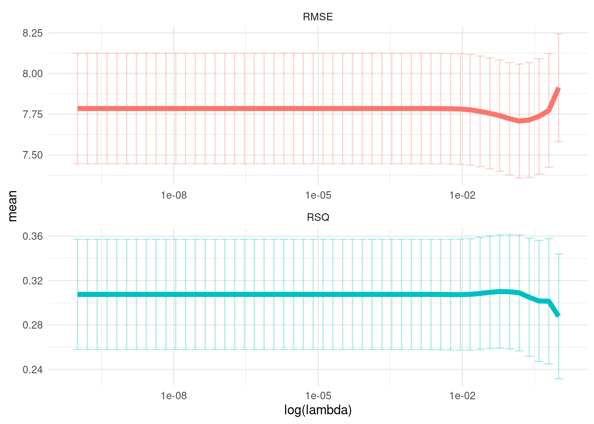
6.6.1.3.4 Select
top_rmse <- show_best(rec_res, metric = "rmse")
best_rmse <- select_best(rec_res, metric = "rmse")
best_rmse ## # A tibble: 1 x 2
## penalty .config
## <dbl> <chr>
## 1 0.153 Model46glue('The RMSE of the intiail model is
{evals %>%
filter(type == "Lasso", .metric == "rmse") %>%
select(.estimate) %>%
round(2)}')## The RMSE of the intiail model is
## 7.87glue('The RMSE of the tuned model is {rec_res %>%
collect_metrics() %>%
filter(.metric == "rmse") %>%
arrange(mean) %>%
dplyr::slice(1) %>%
select(mean) %>%
round(2)}')## The RMSE of the tuned model is 7.71- Finalize your workflow and visualize variable importance
finalize_lasso <- rec_wf %>%
finalize_workflow(best_rmse)
finalize_lasso %>%
fit(train_x_reg %>% bind_cols(tibble(age = train_y_reg))) %>%
pull_workflow_fit() %>%
vip::vip()
6.6.1.3.5 Test fit
- Apply the tuned model to the test dataset
test_fit <- finalize_lasso %>%
fit(test_x_reg %>% bind_cols(tibble(age = test_y_reg)))
evaluate_reg(test_fit)## # A tibble: 3 x 3
## .metric .estimator .estimate
## <chr> <chr> <dbl>
## 1 rmse standard 7.09
## 2 mae standard 5.84
## 3 rsq standard 0.4146.6.2 Decision tree
6.6.2.1 parsnip
- Build a model
- Specify a model
- Specify an engine
- Specify a mode
# workflow
tree_wf <- workflow() %>% add_formula(target~.)
# spec
tree_spec <- decision_tree(
# Mode
mode = "classification",
# Tuning parameters
cost_complexity = NULL,
tree_depth = NULL) %>%
set_engine("rpart") # rpart, c5.0, spark
tree_wf <- tree_wf %>% add_model(tree_spec)- Fit a model
6.6.2.2 yardstick
- Let’s formally test prediction performance.
Metrics
accuracy: The proportion of the data predicted correctlyprecision: Positive predictive valuerecall(specificity): True positive rate (e.g., healthy people really healthy)

From wikipedia
- To learn more about other metrics, check out the yardstick package references.
# Define performance metrics
metrics <- yardstick::metric_set(accuracy, precision, recall)
# Visualize
tree_fit_viz_metr <- visualize_class_eval(tree_fit)
tree_fit_viz_metr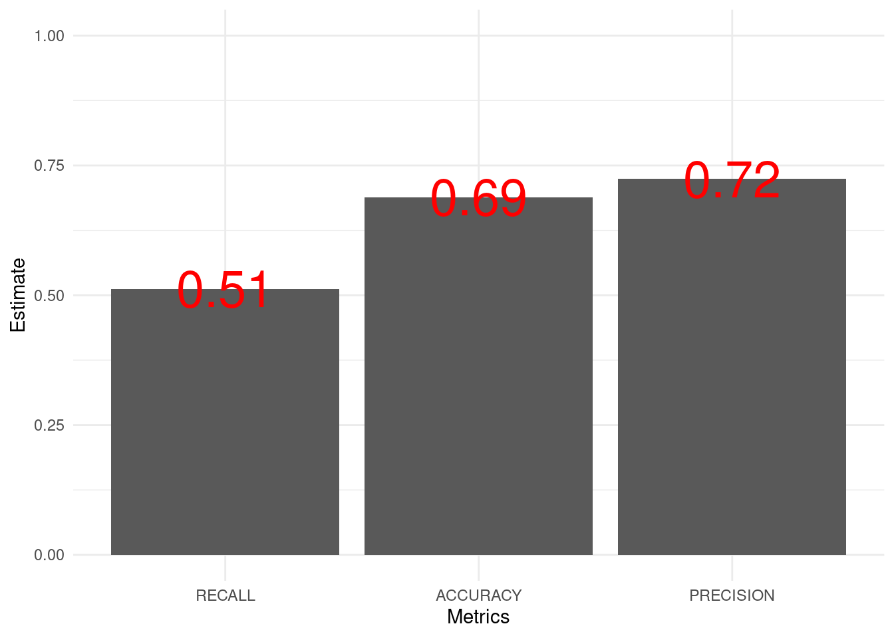

6.6.2.3 tune
6.6.2.3.1 tune ingredients
complexity parameter: a high CP means a simple decision tree with few splits.
tree_depth
tune_spec <-
decision_tree(
cost_complexity = tune(),
tree_depth = tune(),
mode = "classification"
) %>%
set_engine("rpart")
tree_grid <- grid_regular(cost_complexity(),
tree_depth(),
levels = 5) # 2 parameters -> 5*5 = 25 combinations
tree_grid %>%
count(tree_depth)## # A tibble: 5 x 2
## tree_depth n
## <int> <int>
## 1 1 5
## 2 4 5
## 3 8 5
## 4 11 5
## 5 15 56.6.2.3.2 Add these elements to a workflow
# Update workflow
tree_wf <- tree_wf %>% update_model(tune_spec)
# Determine the number of cores
no_cores <- detectCores() - 1
# Initiate
cl <- makeCluster(no_cores)
registerDoParallel(cl)
# Tuning results
tree_res <- tree_wf %>%
tune_grid(
resamples = tree_folds,
grid = tree_grid,
metrics = metrics
)6.6.2.3.3 Visualize
- The following plot draws on the vignette of the tidymodels package.
tree_res %>%
collect_metrics() %>%
mutate(tree_depth = factor(tree_depth)) %>%
ggplot(aes(cost_complexity, mean, col = .metric)) +
geom_point(size = 3) +
# Subplots
facet_wrap(~ tree_depth,
scales = "free",
nrow = 2) +
# Log scale x
scale_x_log10(labels = scales::label_number()) +
# Discrete color scale
scale_color_viridis_d(option = "plasma", begin = .9, end = 0) +
labs(x = "Cost complexity",
col = "Tree depth",
y = NULL) +
coord_flip() ##### Select
##### Select
# Optimal parameter
best_tree <- select_best(tree_res, "recall")
# Add the parameter to the workflow
finalize_tree <- tree_wf %>%
finalize_workflow(best_tree)tree_fit_tuned <- finalize_tree %>%
fit(train_x_class %>% bind_cols(tibble(target = train_y_class)))
# Metrics
(tree_fit_viz_metr + labs(title = "Non-tuned")) / (visualize_class_eval(tree_fit_tuned) + labs(title = "Tuned"))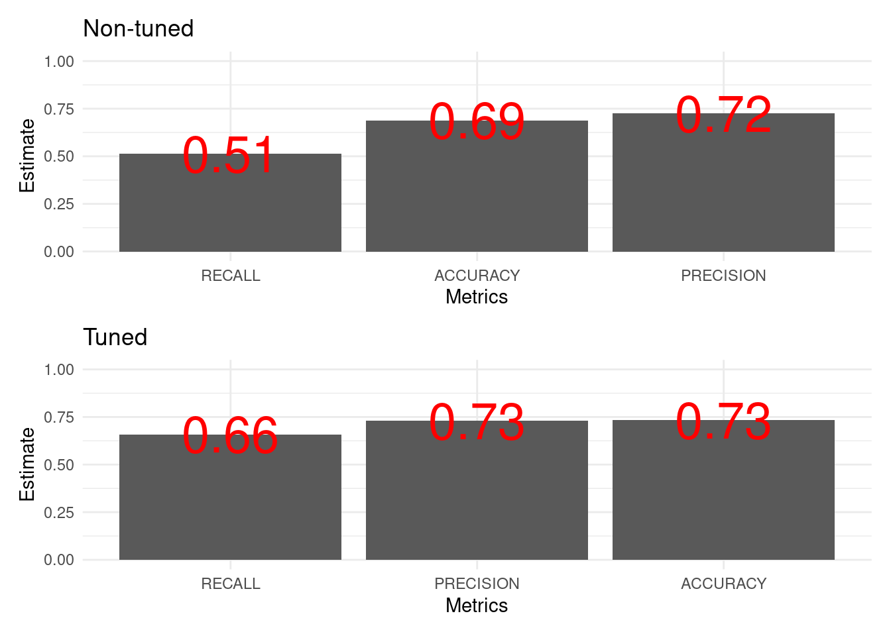
# Confusion matrix
(tree_fit_viz_mat + labs(title = "Non-tuned")) / (visualize_class_conf(tree_fit_tuned) + labs(title = "Tuned"))
- Visualize variable importance

6.6.2.3.4 Test fit
- Apply the tuned model to the test dataset
test_fit <- finalize_tree %>%
fit(test_x_class %>% bind_cols(tibble(target = test_y_class)))
evaluate_class(test_fit)## # A tibble: 3 x 3
## .metric .estimator .estimate
## <chr> <chr> <dbl>
## 1 accuracy binary 0.744
## 2 precision binary 0.705
## 3 recall binary 0.7566.6.3 Random forest
6.6.3.1 parsnip
- Build a model
- Specify a model
- Specify an engine
- Specify a mode
# workflow
rand_wf <- workflow() %>% add_formula(target~.)
# spec
rand_spec <- rand_forest(
# Mode
mode = "classification",
# Tuning parameters
mtry = NULL, # The number of predictors to available for splitting at each node
min_n = NULL, # The minimum number of data points needed to keep splitting nodes
trees = 500) %>% # The number of trees
set_engine("ranger",
# We want the importance of predictors to be assessed.
seed = 1234,
importance = "permutation")
rand_wf <- rand_wf %>% add_model(rand_spec)- Fit a model
6.6.3.2 yardstick
- Let’s formally test prediction performance.
Metrics
accuracy: The proportion of the data predicted correctlyprecision: Positive predictive valuerecall(specificity): True positive rate (e.g., healthy people really healthy)
# Define performance metrics
metrics <- yardstick::metric_set(accuracy, precision, recall)
rand_fit_viz_metr <- visualize_class_eval(rand_fit)
rand_fit_viz_metr
- Visualize the confusion matrix.
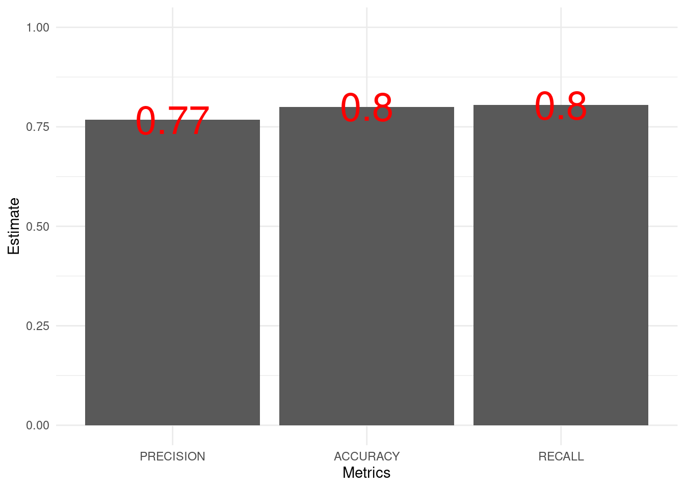
6.6.3.3 tune
6.6.3.3.1 tune ingredients
We focus on the following two parameters:
mtry: The number of predictors to available for splitting at each node.min_n: The minimum number of data points needed to keep splitting nodes.
tune_spec <-
rand_forest(
mode = "classification",
# Tuning parameters
mtry = tune(),
min_n = tune()) %>%
set_engine("ranger",
seed = 1234,
importance = "permutation")
rand_grid <- grid_regular(mtry(range = c(1, 10)),
min_n(range = c(2, 10)),
levels = 5)
rand_grid %>%
count(min_n)## # A tibble: 5 x 2
## min_n n
## <int> <int>
## 1 2 5
## 2 4 5
## 3 6 5
## 4 8 5
## 5 10 56.6.3.3.2 Add these elements to a workflow
6.6.3.3.3 Visualize
rand_res %>%
collect_metrics() %>%
mutate(min_n = factor(min_n)) %>%
ggplot(aes(mtry, mean, color = min_n)) +
# Line + Point plot
geom_line(size = 1.5, alpha = 0.6) +
geom_point(size = 2) +
# Subplots
facet_wrap(~ .metric,
scales = "free",
nrow = 2) +
# Log scale x
scale_x_log10(labels = scales::label_number()) +
# Discrete color scale
scale_color_viridis_d(option = "plasma", begin = .9, end = 0) +
labs(x = "The number of predictors to be sampled",
col = "The minimum number of data points needed for splitting",
y = NULL) +
theme(legend.position="bottom")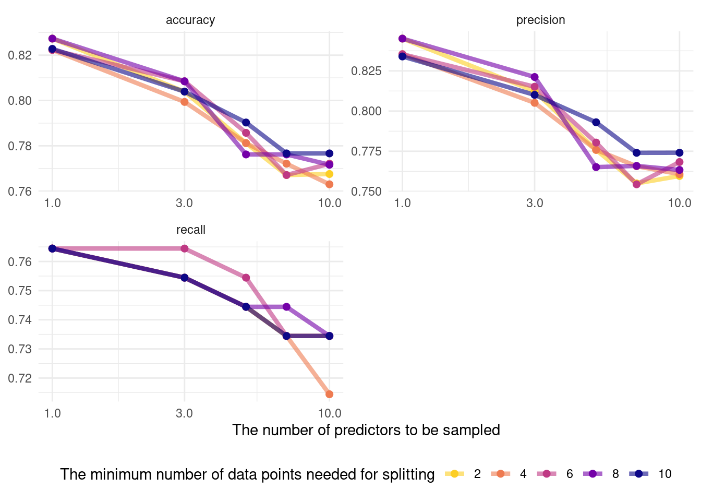
## # A tibble: 1 x 3
## mtry min_n .config
## <int> <int> <chr>
## 1 1 2 Model01rand_fit_tuned <- finalize_tree %>%
fit(train_x_class %>% bind_cols(tibble(target = train_y_class)))
# Metrics
(rand_fit_viz_metr + labs(title = "Non-tuned")) / (visualize_class_eval(rand_fit_tuned) + labs(title = "Tuned"))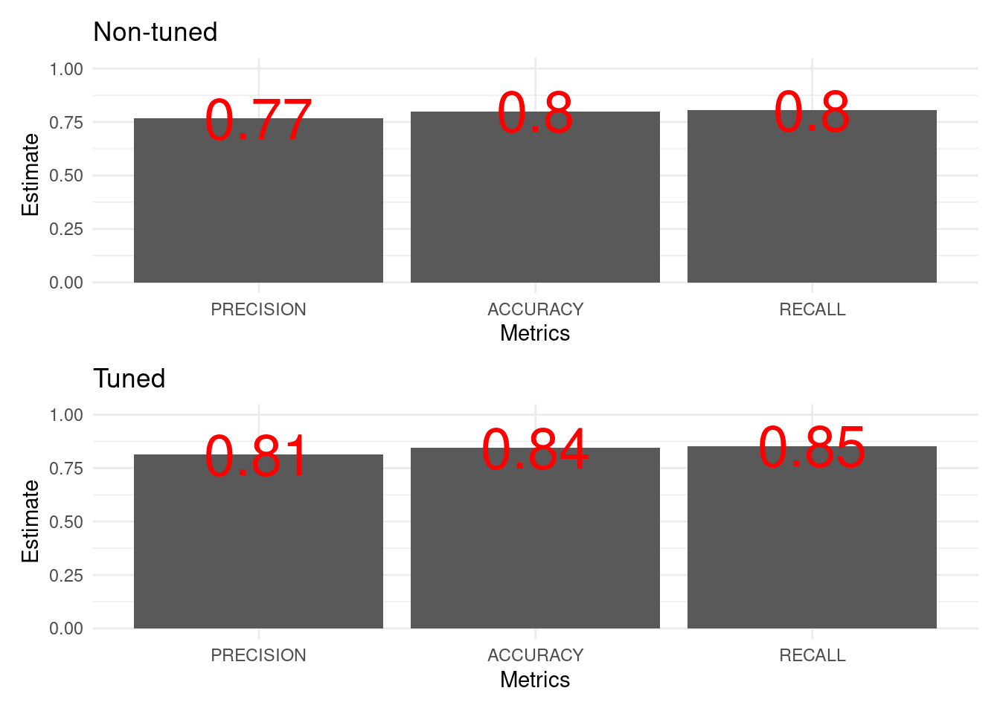
# Confusion matrix
(rand_fit_viz_mat + labs(title = "Non-tuned")) / (visualize_class_conf(rand_fit_tuned) + labs(title = "Tuned"))
- Visualize variable importance

6.6.3.3.4 Test fit
- Apply the tuned model to the test dataset
test_fit <- finalize_tree %>%
fit(test_x_class %>% bind_cols(tibble(target = test_y_class)))
evaluate_class(test_fit)## # A tibble: 3 x 3
## .metric .estimator .estimate
## <chr> <chr> <dbl>
## 1 accuracy binary 0.933
## 2 precision binary 0.973
## 3 recall binary 0.8786.6.4 XGboost
6.6.4.1 parsnip
- Build a model
- Specify a model
- Specify an engine
- Specify a mode
# workflow
xg_wf <- workflow() %>% add_formula(target~.)
# spec
xg_spec <- boost_tree(
# Mode
mode = "classification",
# Tuning parameters
# The number of trees to fit, aka boosting iterations
trees = c(100, 300, 500, 700, 900),
# The depth of the decision tree (how many levels of splits).
tree_depth = c(1, 6),
# Learning rate: lower means the ensemble will adapt more slowly.
learn_rate = c(0.0001, 0.01, 0.2),
# Stop splitting a tree if we only have this many obs in a tree node.
min_n = 10L
) %>%
set_engine("xgboost")
xg_wf <- xg_wf %>% add_model(xg_spec)- Fit a model
## Warning in begin_iteration:end_iteration: numerical expression has 5 elements:
## only the first used6.6.4.2 yardstick
- Let’s formally test prediction performance.
Metrics
accuracy: The proportion of the data predicted correctlyprecision: Positive predictive valuerecall(specificity): True positive rate (e.g., healthy people really healthy)
metrics <- metric_set(yardstick::accuracy,
yardstick::precision,
yardstick::recall)
evaluate_class(xg_fit)## # A tibble: 3 x 3
## .metric .estimator .estimate
## <chr> <chr> <dbl>
## 1 accuracy binary 0.733
## 2 precision binary 0.730
## 3 recall binary 0.659
- Visualize the confusion matrix.

6.6.4.3 tune
6.6.4.3.1 tune ingredients
- We focus on the following parameters:
trees,tree_depth,learn_rate,min_n,mtry,loss_reduction,andsample_size
tune_spec <-
xg_spec <- boost_tree(
# Mode
mode = "classification",
# Tuning parameters
# The number of trees to fit, aka boosting iterations
trees = tune(),
# The depth of the decision tree (how many levels of splits).
tree_depth = tune(),
# Learning rate: lower means the ensemble will adapt more slowly.
learn_rate = tune(),
# Stop splitting a tree if we only have this many obs in a tree node.
min_n = tune(),
loss_reduction = tune(),
# The number of randomly selected parameters
mtry = tune(),
# The size of the data set used for modeling within an iteration
sample_size = tune()
) %>%
set_engine("xgboost")
# Space-filling parameter grids
xg_grid <- grid_latin_hypercube(
trees(),
tree_depth(),
learn_rate(),
min_n(),
loss_reduction(),
sample_size = sample_prop(),
finalize(mtry(), train_x_class),
size = 30
)
# 10-fold cross-validation
set.seed(1234) # for reproducibility
xg_folds <- vfold_cv(train_x_class %>% bind_cols(tibble(target = train_y_class)),
strata = target)6.6.4.3.2 Add these elements to a workflow
6.6.4.3.3 Visualize
xg_res %>%
collect_metrics() %>%
filter(.metric == "roc_auc") %>%
pivot_longer(mtry:sample_size,
values_to = "value",
names_to = "parameter") %>%
ggplot(aes(x = value, y = mean, color = parameter)) +
geom_point(alpha = 0.8, show.legend = FALSE) +
facet_wrap(~parameter, scales = "free_x") +
labs(y = "AUC",
x = NULL)
## # A tibble: 1 x 8
## mtry trees min_n tree_depth learn_rate loss_reduction sample_size .config
## <int> <int> <int> <int> <dbl> <dbl> <dbl> <chr>
## 1 6 98 4 13 0.000000211 0.00000000336 0.422 Model26xg_fit_tuned <- finalize_xg %>%
fit(train_x_class %>% bind_cols(tibble(target = train_y_class)))
# Metrics
(xg_fit_viz_metr + labs(title = "Non-tuned")) / (visualize_class_eval(xg_fit_tuned) + labs(title = "Tuned"))
# Confusion matrix
(xg_fit_viz_mat + labs(title = "Non-tuned")) / (visualize_class_conf(xg_fit_tuned) + labs(title = "Tuned"))
- Visualize variable importance
## Warning: `as.tibble()` is deprecated as of tibble 2.0.0.
## Please use `as_tibble()` instead.
## The signature and semantics have changed, see `?as_tibble`.
## This warning is displayed once every 8 hours.
## Call `lifecycle::last_warnings()` to see where this warning was generated.
6.6.4.3.4 Test fit
- Apply the tuned model to the test dataset
test_fit <- finalize_xg %>%
fit(test_x_class %>% bind_cols(tibble(target = test_y_class)))
evaluate_class(test_fit)## # A tibble: 3 x 3
## .metric .estimator .estimate
## <chr> <chr> <dbl>
## 1 accuracy binary 0.8
## 2 precision binary 0.795
## 3 recall binary 0.7566.6.5 Applications
6.6.5.1 Bandit algorithm (optimizing an experiment)
6.6.5.2 Causal forest (estimating heterogeneous treatment effect)
6.7 Unsupervised learning
x -> f - > y (not defined)
6.7.1 Dimension reduction

Projecting 2D-data to a line (PCA). From vas3k.com
6.7.1.1 Correlation analysis
Notice some problems?
NAs
Scaling issues
##
## Correlation method: 'pearson'
## Missing treated using: 'pairwise.complete.obs'## # A tibble: 14 x 15
## rowname age sex cp trestbps chol fbs restecg thalach
## <chr> <dbl> <dbl> <dbl> <dbl> <dbl> <dbl> <dbl> <dbl>
## 1 age NA -0.0984 -0.0687 0.279 0.214 0.121 -0.116 -0.399
## 2 sex -0.0984 NA -0.0494 -0.0568 -0.198 0.0450 -0.0582 -0.0440
## 3 cp -0.0687 -0.0494 NA 0.0476 -0.0769 0.0944 0.0444 0.296
## 4 trestb… 0.279 -0.0568 0.0476 NA 0.123 0.178 -0.114 -0.0467
## 5 chol 0.214 -0.198 -0.0769 0.123 NA 0.0133 -0.151 -0.00994
## 6 fbs 0.121 0.0450 0.0944 0.178 0.0133 NA -0.0842 -0.00857
## 7 restecg -0.116 -0.0582 0.0444 -0.114 -0.151 -0.0842 NA 0.0441
## 8 thalach -0.399 -0.0440 0.296 -0.0467 -0.00994 -0.00857 0.0441 NA
## 9 exang 0.0968 0.142 -0.394 0.0676 0.0670 0.0257 -0.0707 -0.379
## 10 oldpeak 0.210 0.0961 -0.149 0.193 0.0540 0.00575 -0.0588 -0.344
## 11 slope -0.169 -0.0307 0.120 -0.121 -0.00404 -0.0599 0.0930 0.387
## 12 ca 0.276 0.118 -0.181 0.101 0.0705 0.138 -0.0720 -0.213
## 13 thal 0.0680 0.210 -0.162 0.0622 0.0988 -0.0320 -0.0120 -0.0964
## 14 target -0.225 -0.281 0.434 -0.145 -0.0852 -0.0280 0.137 0.422
## # … with 6 more variables: exang <dbl>, oldpeak <dbl>, slope <dbl>, ca <dbl>,
## # thal <dbl>, target <dbl>6.7.1.2 Preprocessing
recipe is essential for preprocesssing multiple features at once.
6.7.1.3 PCA analysis
pca_res <- pca_recipe %>%
step_pca(all_predictors(),
id = "pca") %>% # id argument identifies each PCA step
prep()
pca_res %>%
tidy(id = "pca") ## # A tibble: 196 x 4
## terms value component id
## <chr> <dbl> <chr> <chr>
## 1 age -0.00101 PC1 pca
## 2 sex 0.216 PC1 pca
## 3 cp 0.321 PC1 pca
## 4 trestbps 0.00118 PC1 pca
## 5 chol -0.000292 PC1 pca
## 6 fbs 0.0468 PC1 pca
## 7 restecg 0.166 PC1 pca
## 8 thalach 0.0137 PC1 pca
## 9 exang 0.0962 PC1 pca
## 10 oldpeak -0.00863 PC1 pca
## # … with 186 more rows6.7.1.3.1 Screeplot
pca_recipe %>%
step_pca(all_predictors(),
id = "pca") %>% # id argument identifies each PCA step
prep() %>%
tidy(id = "pca", type = "variance") %>%
filter(terms == "percent variance") %>%
ggplot(aes(x = component, y = value)) +
geom_col() +
labs(x = "PCAs of heart disease",
y = "% of variance",
title = "Scree plot")
6.7.1.3.2 View factor loadings
pca_recipe %>%
step_pca(all_predictors(),
id = "pca") %>% # id argument identifies each PCA step
prep() %>%
tidy(id = "pca") %>%
filter(component %in% c("PC1", "PC2")) %>%
ggplot(aes(x = fct_reorder(terms, value), y = value,
fill = component)) +
geom_col(position = "dodge") +
coord_flip() +
labs(x = "Terms",
y = "Contribtutions",
fill = "PCAs") 
6.7.2 Topic modeling
6.7.2.1 Setup
6.7.2.2 Dataset
The data munging process draws on Julia Silge’s blog post.
## Determining mirror for Project Gutenberg from http://www.gutenberg.org/robot/harvest## Using mirror http://aleph.gutenberg.org## Rows: 12,648
## Columns: 2
## $ gutenberg_id <int> 1661, 1661, 1661, 1661, 1661, 1661, 1661, 1661, 1661, 16…
## $ text <chr> "THE ADVENTURES OF SHERLOCK HOLMES", "", "by", "", "SIR …sherlock <- sherlock_raw %>%
# Mutate story using a conditional statement
mutate(story = ifelse(str_starts(text, "ADVENTURE"),
text, NA)) %>%
# Fill in missing values with next value
tidyr::fill(story, .direction = "down") %>%
# Filter
filter(story != "THE ADVENTURES OF SHERLOCK HOLMES") %>%
# Factor
mutate(story = factor(story, levels = unique(story)))
sherlock <- sherlock[,2:3]6.7.2.3 Key ideas
Topics as distributions of words
Documents as distributions of topics
What distributions?
Probability
Multinominal (e.g., Latent Dirichlet Distribution)
Words lie on a lower dimensional space (dimension reduction)
Co-occurrence of words (clustering)
Bag of words (feature engineering)
- Upside: easy and fast (also quite working well)
- Downside: ignored grammatical structures and rich interactions among words (Alternative: word embeddings. Please check out text2vec)
6.7.2.4 Exploratory data analysis
sherlock_n <- sherlock %>%
unnest_tokens(output = word,
input = text) %>%
count(story, word, sort = TRUE)
sherlock_total_n <- sherlock_n %>%
group_by(story) %>%
summarise(total = sum(n))## `summarise()` ungrouping output (override with `.groups` argument)## Joining, by = "story"sherlock_words %>%
mutate(freq = n/total) %>%
group_by(story) %>%
top_n(10) %>%
ggplot(aes(x = fct_reorder(word, freq),
y = freq,
fill = story)) +
geom_col() +
coord_flip() +
facet_wrap(~story,
ncol = 2,
scales = "free_y") +
scale_fill_viridis_d() +
labs(x = "")## Selecting by freq
6.7.2.5 STM
6.7.2.5.1 Turn text into document-term matrix
stm package has its own preprocessing function.
6.7.2.5.2 Tuning K
- K is the number of topics.
- Let’s try K = 5, 10, 15.
test_res <- searchK(dtm$documents, dtm$vocab,
K = c(5, 10, 15),
prevalence =~ story,
data = dtm$meta)## Beginning Spectral Initialization
## Calculating the gram matrix...
## Finding anchor words...
## .....
## Recovering initialization...
## ........................................................
## Initialization complete.
## ....................................................................................................
## Completed E-Step (1 seconds).
## Completed M-Step.
## Completing Iteration 1 (approx. per word bound = -7.570)
## ....................................................................................................
## Completed E-Step (1 seconds).
## Completed M-Step.
## Completing Iteration 2 (approx. per word bound = -7.481, relative change = 1.176e-02)
## ....................................................................................................
## Completed E-Step (1 seconds).
## Completed M-Step.
## Completing Iteration 3 (approx. per word bound = -7.400, relative change = 1.090e-02)
## ....................................................................................................
## Completed E-Step (1 seconds).
## Completed M-Step.
## Completing Iteration 4 (approx. per word bound = -7.381, relative change = 2.581e-03)
## ....................................................................................................
## Completed E-Step (1 seconds).
## Completed M-Step.
## Completing Iteration 5 (approx. per word bound = -7.375, relative change = 8.290e-04)
## Topic 1: come, time, might, know, must
## Topic 2: one, said, well, matter, came
## Topic 3: holm, upon, said, may, just
## Topic 4: littl, will, man, see, think
## Topic 5: case, yes, remark, noth, put
## ....................................................................................................
## Completed E-Step (1 seconds).
## Completed M-Step.
## Completing Iteration 6 (approx. per word bound = -7.371, relative change = 4.271e-04)
## ....................................................................................................
## Completed E-Step (1 seconds).
## Completed M-Step.
## Completing Iteration 7 (approx. per word bound = -7.370, relative change = 2.175e-04)
## ....................................................................................................
## Completed E-Step (1 seconds).
## Completed M-Step.
## Completing Iteration 8 (approx. per word bound = -7.369, relative change = 7.176e-05)
## ....................................................................................................
## Completed E-Step (1 seconds).
## Completed M-Step.
## Model Converged
## Beginning Spectral Initialization
## Calculating the gram matrix...
## Finding anchor words...
## ..........
## Recovering initialization...
## ........................................................
## Initialization complete.
## ....................................................................................................
## Completed E-Step (1 seconds).
## Completed M-Step.
## Completing Iteration 1 (approx. per word bound = -7.651)
## ....................................................................................................
## Completed E-Step (1 seconds).
## Completed M-Step.
## Completing Iteration 2 (approx. per word bound = -7.480, relative change = 2.234e-02)
## ....................................................................................................
## Completed E-Step (1 seconds).
## Completed M-Step.
## Completing Iteration 3 (approx. per word bound = -7.378, relative change = 1.356e-02)
## ....................................................................................................
## Completed E-Step (1 seconds).
## Completed M-Step.
## Completing Iteration 4 (approx. per word bound = -7.354, relative change = 3.251e-03)
## ....................................................................................................
## Completed E-Step (1 seconds).
## Completed M-Step.
## Completing Iteration 5 (approx. per word bound = -7.347, relative change = 1.040e-03)
## Topic 1: holm, one, will, eye, across
## Topic 2: may, upon, case, shall, remark
## Topic 3: well, know, father, call, mind
## Topic 4: littl, see, like, yes, might
## Topic 5: said, man, see, watson, hard
## Topic 6: hous, room, hand, man, without
## Topic 7: come, came, even, back, tell
## Topic 8: upon, day, door, look, may
## Topic 9: said, ask, matter, noth, answer
## Topic 10: sherlock, hand, glanc, howev, anoth
## ....................................................................................................
## Completed E-Step (1 seconds).
## Completed M-Step.
## Completing Iteration 6 (approx. per word bound = -7.344, relative change = 3.512e-04)
## ....................................................................................................
## Completed E-Step (1 seconds).
## Completed M-Step.
## Completing Iteration 7 (approx. per word bound = -7.342, relative change = 2.888e-04)
## ....................................................................................................
## Completed E-Step (1 seconds).
## Completed M-Step.
## Completing Iteration 8 (approx. per word bound = -7.340, relative change = 2.464e-04)
## ....................................................................................................
## Completed E-Step (1 seconds).
## Completed M-Step.
## Completing Iteration 9 (approx. per word bound = -7.339, relative change = 1.991e-04)
## ....................................................................................................
## Completed E-Step (1 seconds).
## Completed M-Step.
## Completing Iteration 10 (approx. per word bound = -7.338, relative change = 1.230e-04)
## Topic 1: holm, one, will, eye, chair
## Topic 2: may, case, shall, say, remark
## Topic 3: know, well, never, thought, cri
## Topic 4: littl, yes, like, might, see
## Topic 5: said, man, see, can, watson
## Topic 6: hous, room, young, ladi, without
## Topic 7: come, came, back, even, just
## Topic 8: upon, door, day, open, look
## Topic 9: ask, matter, must, take, noth
## Topic 10: hand, howev, sherlock, glanc, head
## ....................................................................................................
## Completed E-Step (1 seconds).
## Completed M-Step.
## Completing Iteration 11 (approx. per word bound = -7.337, relative change = 5.576e-05)
## ....................................................................................................
## Completed E-Step (1 seconds).
## Completed M-Step.
## Model Converged
## Beginning Spectral Initialization
## Calculating the gram matrix...
## Finding anchor words...
## ...............
## Recovering initialization...
## ........................................................
## Initialization complete.
## ....................................................................................................
## Completed E-Step (2 seconds).
## Completed M-Step.
## Completing Iteration 1 (approx. per word bound = -7.737)
## ....................................................................................................
## Completed E-Step (2 seconds).
## Completed M-Step.
## Completing Iteration 2 (approx. per word bound = -7.500, relative change = 3.056e-02)
## ....................................................................................................
## Completed E-Step (1 seconds).
## Completed M-Step.
## Completing Iteration 3 (approx. per word bound = -7.388, relative change = 1.494e-02)
## ....................................................................................................
## Completed E-Step (1 seconds).
## Completed M-Step.
## Completing Iteration 4 (approx. per word bound = -7.356, relative change = 4.344e-03)
## ....................................................................................................
## Completed E-Step (1 seconds).
## Completed M-Step.
## Completing Iteration 5 (approx. per word bound = -7.345, relative change = 1.583e-03)
## Topic 1: holm, know, well, can, might
## Topic 2: small, lay, known, form, power
## Topic 3: time, seen, two, sherlock, anyth
## Topic 4: said, man, shall, miss, word
## Topic 5: look, face, man, first, eye
## Topic 6: room, man, must, open, took
## Topic 7: back, ask, came, way, come
## Topic 8: littl, said, noth, last, sir
## Topic 9: now, see, yes, like, think
## Topic 10: street, hand, found, sudden, pass
## Topic 11: someth, sure, went, mind, live
## Topic 12: come, call, busi, gentleman, may
## Topic 13: will, may, case, littl, find
## Topic 14: one, side, two, year, famili
## Topic 15: upon, tabl, finger, depend, wrist
## ....................................................................................................
## Completed E-Step (1 seconds).
## Completed M-Step.
## Completing Iteration 6 (approx. per word bound = -7.340, relative change = 5.712e-04)
## ....................................................................................................
## Completed E-Step (1 seconds).
## Completed M-Step.
## Completing Iteration 7 (approx. per word bound = -7.338, relative change = 2.704e-04)
## ....................................................................................................
## Completed E-Step (1 seconds).
## Completed M-Step.
## Completing Iteration 8 (approx. per word bound = -7.336, relative change = 2.640e-04)
## ....................................................................................................
## Completed E-Step (1 seconds).
## Completed M-Step.
## Completing Iteration 9 (approx. per word bound = -7.335, relative change = 1.952e-04)
## ....................................................................................................
## Completed E-Step (1 seconds).
## Completed M-Step.
## Completing Iteration 10 (approx. per word bound = -7.333, relative change = 2.106e-04)
## Topic 1: holm, know, well, can, might
## Topic 2: small, work, told, lay, fire
## Topic 3: time, howev, day, sherlock, turn
## Topic 4: said, man, miss, young, word
## Topic 5: look, face, eye, tell, first
## Topic 6: room, must, open, father, made
## Topic 7: back, came, door, ask, way
## Topic 8: littl, noth, last, paper, read
## Topic 9: now, see, think, yes, like
## Topic 10: found, street, hand, sudden, light
## Topic 11: went, place, someth, mind, son
## Topic 12: come, away, busi, call, reason
## Topic 13: will, may, case, find, interest
## Topic 14: one, side, year, thing, two
## Topic 15: upon, tabl, besid, finger, bear
## ....................................................................................................
## Completed E-Step (1 seconds).
## Completed M-Step.
## Completing Iteration 11 (approx. per word bound = -7.332, relative change = 2.243e-04)
## ....................................................................................................
## Completed E-Step (1 seconds).
## Completed M-Step.
## Completing Iteration 12 (approx. per word bound = -7.331, relative change = 1.713e-04)
## ....................................................................................................
## Completed E-Step (1 seconds).
## Completed M-Step.
## Completing Iteration 13 (approx. per word bound = -7.330, relative change = 1.282e-04)
## ....................................................................................................
## Completed E-Step (1 seconds).
## Completed M-Step.
## Completing Iteration 14 (approx. per word bound = -7.329, relative change = 1.167e-04)
## ....................................................................................................
## Completed E-Step (1 seconds).
## Completed M-Step.
## Completing Iteration 15 (approx. per word bound = -7.328, relative change = 6.326e-05)
## Topic 1: holm, know, well, can, might
## Topic 2: small, work, told, lay, fire
## Topic 3: time, day, much, howev, turn
## Topic 4: said, man, miss, say, right
## Topic 5: look, face, eye, tell, first
## Topic 6: must, room, open, made, morn
## Topic 7: door, came, back, ask, way
## Topic 8: littl, noth, last, paper, sir
## Topic 9: now, see, think, yes, like
## Topic 10: found, street, hand, long, light
## Topic 11: place, went, someth, mind, son
## Topic 12: come, away, busi, call, certain
## Topic 13: will, may, case, find, take
## Topic 14: one, side, year, thing, two
## Topic 15: upon, tabl, besid, sever, finger
## ....................................................................................................
## Completed E-Step (1 seconds).
## Completed M-Step.
## Completing Iteration 16 (approx. per word bound = -7.328, relative change = 5.296e-05)
## ....................................................................................................
## Completed E-Step (1 seconds).
## Completed M-Step.
## Completing Iteration 17 (approx. per word bound = -7.328, relative change = 3.663e-05)
## ....................................................................................................
## Completed E-Step (1 seconds).
## Completed M-Step.
## Model Converged6.7.2.5.3 Evaludating models
There are several metrics to assess the performance of topic models: the held-out likelihood, residuals, semantic coherence, and exclusivity. In this course, we examine the relationship between semantic coherence and exclusivity to understand the trade-off involved in selecting K.
test_res$results %>%
unnest(K, exclus, semcoh) %>%
dplyr::select(K, exclus, semcoh) %>%
mutate(K = as.factor(K)) %>%
ggplot(aes(x = exclus, y = semcoh)) +
geom_text(label = glue("K = {test_res$results$K}"),
size = 5,
color = "red")## Warning: unnest() has a new interface. See ?unnest for details.
## Try `df %>% unnest(c(K, exclus, semcoh))`, with `mutate()` if needed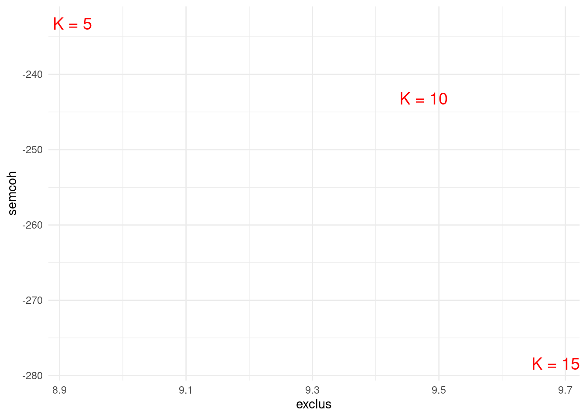
6.7.2.5.4 Finalize
6.7.2.5.5 Explore the results
- Using the
stmpacakge.

- Using ggplot2
# tidy
tidy_stm <- tidy(final_stm)
# top terms
tidy_stm %>%
group_by(topic) %>%
top_n(10, beta) %>%
ungroup() %>%
ggplot(aes(fct_reorder(term, beta), beta, fill = as.factor(topic))) +
geom_col(alpha = 0.8, show.legend = FALSE) +
facet_wrap(~ topic, scales = "free_y") +
coord_flip() +
scale_y_continuous(labels = scales::percent) +
scale_fill_viridis_d()
6.8 Bias and fairness in machine learning
6.9 Resources
6.9.1 Books
An Introduction to Statistical Learning - with Applications in R (2013) by Gareth James, Daniela Witten, Trevor Hastie, Robert Tibshirani. Springer: New York. Amazon or free PDF.
Hands-On Machine Learning with R (2020) by Bradley Boehmke & Brandon Greenwell. CRC Press or Amazon
Applied Predictive Modeling (2013) by Max Kuhn and Kjell Johnson. Springer: New York. Amazon
Feature Engineering and Selection: A Practical Approach for Predictive Models (2019) by Kjell Johnson and Max Kuhn. Taylor & Francis. Amazon or free HTML.
Tidy Modeling with R (2020) by Max Kuhn and Julia Silge (work-in-progress)
6.9.2 Lecture slides
An introduction to supervised and unsupervised learning (2015) by Susan Athey and Guido Imbens
Introduction Machine Learning with the Tidyverse by Alison Hill
6.9.3 Blog posts
- “Using the recipes package for easy pre-processing” by Rebecca Barter
7 Big data
7.1 Motivation
- Big data problem: data is too big to fit into memory (=local environment).
- R reads data into random-access memory (RAM) at once and this object lives in memory entirely. So, object > memory will crash R.
- So, the key to deal with big data in R is reducing the size of data you want to bring into it.
Techniques to deal with big data
- Medium sized file (1-2 GB)
- Try to reduce the size of the file using slicing and dicing
- Tools:
- R:
data.table::fread(file path, select = c("column 1", "column 2")). This command imports data faster thanread.csv()does. - Command line:
csvkit- a suite of command-line tools to and working with CSV
- R:
- Large file (> 2-10 GB)
- Put the data into a database and ACCESS it
- Explore the data and pull the objects of interest
- Types of databases
- Relational database = a collection of tables (fixed columns and rows): SQL is a staple tool to define and query (focus of the workshop today) this type of database
- Non-relational database = a collection of documents (MongoDB), key-values (Redis and DyanoDB), wide-column stores (Cassandra and HBase), or graph (Neo4j and JanusGraph). This type of database does not preclude SQL. Note that NoSQL stands for “not only SQL.”
Relational database

Relational Database. Source: MySQL Tutorial
7.2 What is SQL?
Structured Query Language. Called SEQUEL and developed by IBM Corporation in the 1970s.
Remains the standard language for a relational database management system.
It’s a DECLARATIVE language (what to do > how to do)
- Database management systems figures optimal way to execute query (query optimization)
7.3 Learning objectives
Embracing a new mindset: shifting from ownership (opening CSVs in your laptop) to access (accessing data stored in a database)
Learning how to use R and SQL to access and query a database
7.4 Quick overview
- SQL and R
| SQL | R |
|---|---|
| SELECT | select() for columns, mutate() for expressions, summarise() for aggregates |
| FROM | which data frame |
| WHERE | filter() |
| GROUP BY | group_by() |
| HAVING | filter() after group_by() |
| ORDER BY | arrange() |
| LIMIT | head() |
Challenge 1
1. Can you tell me the difference in the order in which the following R and SQL code were written to wrangle data? For instance, in R, what command comes first? In contrast, in SQL, what command comes first?
- R example
data %>% # Data
select() %>% # Column
filter() %>% # Row
group_by() %>% # Group by
summarise(n = n()) %>% # Aggregation
filter() %>% # Row
order_by() # Arrange - SQL example
SELECT column, aggregation (count())` # Column
FROM data # Data
WHERE condition # Row
GROUP BY column # Group by
HAVING condition # Row
ORDER BY column # Arrange 
SQL Zine by by Julia Evans
7.5 Setup
Let’s get to work.
7.6 Packages
pacman::p_load()reduces steps for installing and loading several packages simultaneously.
## Loading required package: pacman7.7 Datasets
- The flight on-time performance data from the Bureau of Transpiration Statistics of the U.S. government. The data goes back to 1987 and its size is more than 20 gigabytes. For practice, we only use a small subset of the original data (flight data departing NYC in 2013) provided by RStudio.

From RStudio.
7.8 Workflow
- Create/connect to a database
Note that server also can be your laptop (called localhost).
Short answer: To do so, you need interfaces between R and a database. We use
RSQLitein this tutorial because it’s easy to set up.Long answer: The
DBIpackage in R provides a client-side interface that allowsdplyrto work with databases. DBI is automatically installed when you installeddbplyr. However, you need to install a specific backend engine (a tool for communication between R and a database management system) for the database (e.g.,RMariaDB,RPostgres,RSQLite). In this workshop, we use SQLite because it is the easiest to get started with. Personally, I love PostgreSQL because it’s an open-source and also powerful to do many amazing things (e.g., text mining, geospatial analysis).
- Copy a table to the database
Option 1: You can create a table and insert rows manually.
Table
- Collection of rows
- Collection of columns (fields or attributes)
- Each col has a type:
- String:
VARCHAR(20) - Integer:
INTEGER - Floating-point:
FLOAT,DOUBLE - Date/time:
DATE,TIME,DATETIME
- String:
- Schema: the structure of the database
- The table name
- The names and types of its columns
- Various optional additional information (e.g., constraints)
CREATE TABLE students (
id INT AUTO_INCREMENT,
name VARCHAR(30),
birth DATE,
gpa FLOAT,
grad INT,
PRIMARY KEY(id));
INSERT INTO students(name, birth, gpa, grad)
VALUES ('Adam', '2000-08-04', 4.0, 2020);- Option 2: Copy a file (object) to a table in a database using
copy_to). We take this option as it’s fast and we would like to focus on querying in this workshop.
- Query the table
- Main focus
Pull the results of interests (data) using
collect()Disconnect the database
7.8.1 Create a database
# Define a backend engine
drv <- RSQLite::SQLite()
# Create an empty in-memory database
con <- DBI::dbConnect(drv,
dbname = ":memory:")
# Connect to an existing database
#con <- DBI::dbConnect(RMariaDB::MariaDB(),
# host = "database.rstudio.com",
# user = "hadley",
# password = rstudioapi::askForPassword("Database password")
#)
dbListTables(con)## character(0)- Note that con is empty at this stage.
7.8.2 Copy an object as a table to the database (push)
# Copy objects to the data
copy_to(dest = con,
df = flights)
copy_to(dest = con,
df = airports)
copy_to(dest = con,
df = planes)
copy_to(dest = con,
df = weather)
# If you want you can also decide what columns you want to copy:
# copy_to(dest = con,
# df = flights,
# name = "flights",
# indexes = list(c("year", "tailnum", "dest")))## [1] "airports" "flights" "planes" "sqlite_stat1" "sqlite_stat4"
## [6] "weather"## [1] "year" "month" "day" "dep_time"
## [5] "sched_dep_time" "dep_delay" "arr_time" "sched_arr_time"
## [9] "arr_delay" "carrier" "flight" "tailnum"
## [13] "origin" "dest" "air_time" "distance"
## [17] "hour" "minute" "time_hour"## [1] "origin" "year" "month" "day" "hour"
## [6] "temp" "dewp" "humid" "wind_dir" "wind_speed"
## [11] "wind_gust" "precip" "pressure" "visib" "time_hour"7.8.3 Quick demonstrations:
SELECT desired columns
FROM tables
Select all columns (*) from
flightstable and show thefirst ten rowsNote that you can combine SQL and R commands thanks to
dbplyr.Option 1
## year month day dep_time sched_dep_time dep_delay arr_time sched_arr_time
## 1 2013 1 1 517 515 2 830 819
## 2 2013 1 1 533 529 4 850 830
## 3 2013 1 1 542 540 2 923 850
## 4 2013 1 1 544 545 -1 1004 1022
## 5 2013 1 1 554 600 -6 812 837
## 6 2013 1 1 554 558 -4 740 728
## 7 2013 1 1 555 600 -5 913 854
## 8 2013 1 1 557 600 -3 709 723
## 9 2013 1 1 557 600 -3 838 846
## 10 2013 1 1 558 600 -2 753 745
## arr_delay carrier flight tailnum origin dest air_time distance hour minute
## 1 11 UA 1545 N14228 EWR IAH 227 1400 5 15
## 2 20 UA 1714 N24211 LGA IAH 227 1416 5 29
## 3 33 AA 1141 N619AA JFK MIA 160 1089 5 40
## 4 -18 B6 725 N804JB JFK BQN 183 1576 5 45
## 5 -25 DL 461 N668DN LGA ATL 116 762 6 0
## 6 12 UA 1696 N39463 EWR ORD 150 719 5 58
## 7 19 B6 507 N516JB EWR FLL 158 1065 6 0
## 8 -14 EV 5708 N829AS LGA IAD 53 229 6 0
## 9 -8 B6 79 N593JB JFK MCO 140 944 6 0
## 10 8 AA 301 N3ALAA LGA ORD 138 733 6 0
## time_hour
## 1 1357034400
## 2 1357034400
## 3 1357034400
## 4 1357034400
## 5 1357038000
## 6 1357034400
## 7 1357038000
## 8 1357038000
## 9 1357038000
## 10 1357038000- Option 2 (works faster)
| year | month | day | dep_time | sched_dep_time | dep_delay | arr_time | sched_arr_time | arr_delay | carrier | flight | tailnum | origin | dest | air_time | distance | hour | minute | time_hour |
|---|---|---|---|---|---|---|---|---|---|---|---|---|---|---|---|---|---|---|
| 2013 | 1 | 1 | 517 | 515 | 2 | 830 | 819 | 11 | UA | 1545 | N14228 | EWR | IAH | 227 | 1400 | 5 | 15 | 1357034400 |
| 2013 | 1 | 1 | 533 | 529 | 4 | 850 | 830 | 20 | UA | 1714 | N24211 | LGA | IAH | 227 | 1416 | 5 | 29 | 1357034400 |
| 2013 | 1 | 1 | 542 | 540 | 2 | 923 | 850 | 33 | AA | 1141 | N619AA | JFK | MIA | 160 | 1089 | 5 | 40 | 1357034400 |
| 2013 | 1 | 1 | 544 | 545 | -1 | 1004 | 1022 | -18 | B6 | 725 | N804JB | JFK | BQN | 183 | 1576 | 5 | 45 | 1357034400 |
| 2013 | 1 | 1 | 554 | 600 | -6 | 812 | 837 | -25 | DL | 461 | N668DN | LGA | ATL | 116 | 762 | 6 | 0 | 1357038000 |
Option 3 (automating workflow)
- When local variables are updated, the SQL query is also automatically updated.
# Local variables
tbl <- "flights"
var <- "dep_delay"
num <- 5
# Glue SQL query string
# Note that to indicate a numeric value, you don't need ``
sql_query <- glue_sql("
SELECT {`var`}
FROM {`tbl`}
LIMIT {num}
", .con = con)
# Run the query
dbGetQuery(con, sql_query)## dep_delay
## 1 2
## 2 4
## 3 2
## 4 -1
## 5 -6Challenge 2
Can you rewrite the above code using LIMIT instead of head(10)
You may notice that using only SQL code makes querying faster.
Select dep_delay and arr_delay from flights table, show the first ten rows, then turn the result into a tibble.
Challenge 3
Could you remind me how to see the list of attributes of a table? Let’s say you want to see the attributes of flights table.
- Collect the selected columns and filtered rows
Counting rows
- Count all (*)
## COUNT(*)
## 1 336776## COUNT(dep_delay)
## 1 328521- Count distinct values
## COUNT(DISTINCT dep_delay)
## 1 5277.8.4 Tidy-way: dplyr -> SQL
Thanks to the dbplyr package you can use the dplyr syntax to query SQL.
- Note that pipe (%) works.
# tbl select tables
flights <- con %>% tbl("flights")
airports <- con %>% tbl("airports")
planes <- con %>% tbl("planes")
weather <- con %>% tbl("weather")select=SELECT
## # Source: lazy query [?? x 2]
## # Database: sqlite 3.33.0 [:memory:]
## dep_delay arr_delay
## <dbl> <dbl>
## 1 2 11
## 2 4 20
## 3 2 33
## 4 -1 -18
## 5 -6 -25
## 6 -4 12
## 7 -5 19
## 8 -3 -14
## 9 -3 -8
## 10 -2 8
## # … with more rowsChallenge 4 Your turn: write the same code in SQL
mutate=SELECTAS
## # Source: lazy query [?? x 3]
## # Database: sqlite 3.33.0 [:memory:]
## distance air_time speed
## <dbl> <dbl> <dbl>
## 1 1400 227 370.
## 2 1416 227 374.
## 3 1089 160 408.
## 4 1576 183 517.
## 5 762 116 394.
## 6 719 150 288.
## 7 1065 158 404.
## 8 229 53 259.
## 9 944 140 405.
## 10 733 138 319.
## # … with more rowsChallenge 5
Your turn: write the same code in SQL (hint: mutate(new_var = var 1 * var2 = SELECT var1 * var2 AS near_var)
filter=WHERE
## # Source: lazy query [?? x 19]
## # Database: sqlite 3.33.0 [:memory:]
## year month day dep_time sched_dep_time dep_delay arr_time sched_arr_time
## <int> <int> <int> <int> <int> <dbl> <int> <int>
## 1 2013 1 1 517 515 2 830 819
## 2 2013 1 1 533 529 4 850 830
## 3 2013 1 1 542 540 2 923 850
## 4 2013 1 1 544 545 -1 1004 1022
## 5 2013 1 1 554 600 -6 812 837
## 6 2013 1 1 554 558 -4 740 728
## 7 2013 1 1 555 600 -5 913 854
## 8 2013 1 1 557 600 -3 709 723
## 9 2013 1 1 557 600 -3 838 846
## 10 2013 1 1 558 600 -2 753 745
## # … with more rows, and 11 more variables: arr_delay <dbl>, carrier <chr>,
## # flight <int>, tailnum <chr>, origin <chr>, dest <chr>, air_time <dbl>,
## # distance <dbl>, hour <dbl>, minute <dbl>, time_hour <dbl>Challenge 6
Your turn: write the same code in SQL (hint: filter(condition1, condition2) = WHERE condition1 and condition2)
Note that R and SQL operators are not exactly alike. R uses
!=forNot equal to. SQL uses<>or!=. Furthermore, there are some cautions about usingNULL(NA; unknown or missing): it should beIS NULLorIS NOT NULLnot=NULLor!=NULL.arrange=ORDER BY
## <SQL>
## SELECT *
## FROM `flights`
## ORDER BY `carrier`, `arr_delay` DESCChallenge 7
Your turn: write the same code in SQL (hint: arrange(var1, desc(var2)) = ORDER BY var1, var2 DESC)
summarise=SELECTASandgroup by=GROUP BY
## Warning: Missing values are always removed in SQL.
## Use `mean(x, na.rm = TRUE)` to silence this warning
## This warning is displayed only once per session.## # Source: lazy query [?? x 3]
## # Database: sqlite 3.33.0 [:memory:]
## # Groups: month
## month day delay
## <int> <int> <dbl>
## 1 1 1 11.5
## 2 1 2 13.9
## 3 1 3 11.0
## 4 1 4 8.95
## 5 1 5 5.73
## 6 1 6 7.15
## 7 1 7 5.42
## 8 1 8 2.55
## 9 1 9 2.28
## 10 1 10 2.84
## # … with more rowsChallenge 8
Your turn: write the same code in SQL (hint: in SQL the order should be SELECT group_var1, group_var2, AVG(old_var) AS new_var -> FROM -> GROUP BY)
- If you feel too much challenged, here’s a help.
flights %>%
group_by(month, day) %>%
summarise(delay = mean(dep_delay)) %>%
show_query() # Show the SQL equivalent!## <SQL>
## SELECT `month`, `day`, AVG(`dep_delay`) AS `delay`
## FROM `flights`
## GROUP BY `month`, `day`Joins
Using joins is simpler in R than it is in SQL.
However, more flexible joins exist in SQL and they are not available in R.
- Joins involving 3+ tables are not supported.
- Some advanced joins available in SQL are not supported.
- For more information, check out
tidyqueryto see the latest developments.
## <SQL>
## SELECT `LHS`.`year` AS `year`, `LHS`.`month` AS `month`, `LHS`.`day` AS `day.x`, `LHS`.`dep_time` AS `dep_time`, `LHS`.`sched_dep_time` AS `sched_dep_time`, `LHS`.`dep_delay` AS `dep_delay`, `LHS`.`arr_time` AS `arr_time`, `LHS`.`sched_arr_time` AS `sched_arr_time`, `LHS`.`arr_delay` AS `arr_delay`, `LHS`.`carrier` AS `carrier`, `LHS`.`flight` AS `flight`, `LHS`.`tailnum` AS `tailnum`, `LHS`.`origin` AS `origin.x`, `LHS`.`dest` AS `dest`, `LHS`.`air_time` AS `air_time`, `LHS`.`distance` AS `distance`, `LHS`.`hour` AS `hour.x`, `LHS`.`minute` AS `minute`, `LHS`.`time_hour` AS `time_hour.x`, `RHS`.`origin` AS `origin.y`, `RHS`.`day` AS `day.y`, `RHS`.`hour` AS `hour.y`, `RHS`.`temp` AS `temp`, `RHS`.`dewp` AS `dewp`, `RHS`.`humid` AS `humid`, `RHS`.`wind_dir` AS `wind_dir`, `RHS`.`wind_speed` AS `wind_speed`, `RHS`.`wind_gust` AS `wind_gust`, `RHS`.`precip` AS `precip`, `RHS`.`pressure` AS `pressure`, `RHS`.`visib` AS `visib`, `RHS`.`time_hour` AS `time_hour.y`
## FROM `flights` AS `LHS`
## LEFT JOIN `weather` AS `RHS`
## ON (`LHS`.`year` = `RHS`.`year` AND `LHS`.`month` = `RHS`.`month`)7.8.5 Collect (pull)
collect()is used to pull the data. Depending on the data size, it may take a long time to run.The following code won’t work.
Error in UseMethod(“collect”) : no applicable method for ‘collect’ applied to an object of class “c(‘LayerInstance’, ‘Layer’, ‘ggproto’, ‘gg’)”
origin_flights_plot <- flights %>%
group_by(origin) %>%
tally() %>%
ggplot() +
geom_col(aes(x = origin, y = n)) %>%
collect()- This works.
df <- flights %>%
group_by(origin) %>%
tally() %>%
collect()
origin_flights_plot <- ggplot(df) +
geom_col(aes(x = origin, y = n))
origin_flights_plot
7.9 References
- csv2db - for loading large CSV files in to a database
- R Studio, Database using R
- Ian Cook, “Bridging the Gap between SQL and R” rstudio::conf 2020 slides
- Data Carpentry contributors, SQL database and R, Data Carpentry, September 10, 2019.
- Introduction to dbplyr
- Josh Erickson, SQL in R, STAT 701, University of Michigan
- SQL zine by Julia Evans
- q - a command line tool that allows direct execution of SQL-like queries on CSVs/TSVs (and any other tabular text files)